图 29｜总目在上，卡在中间，应用在下（附录A）
Appendix A: The Whole Map
这一部分把全书的知识线收拢成三张图：一条主线（这一年怎么走过来）、一组概念（总目和图到底是什么关系）、一段演进（六本账怎么变成一张图）。小说里的叫法和课本上的学名并排放在最后的对照表里。读完全书再回来看这一页，能把散在各章的说法对齐；没读过书直接翻到这页，也能看懂这家工厂最后立起来的东西是什么。
全书二十二章，知识上只走了一条线。第一幕发问，第二幕摸到旧办法，第三幕各口长账，第四幕问出正本，第五幕立总目、连成图。
| 幕（章） | 这一步 | 一句话 |
|---|---|---|
| 第一幕·多事之春 （第1-2章） | 什么算数（发问） | 四个坏消息同日到：根因埋在三年前的旧报告和一封邮件里，四个系统连不起来。先要弄清哪份文件现行、哪个数是真的。 |
| 第二幕·点火与速胜 （第3-7章） | 口径、图思维 | 档案室的词表给出老办法：一个词一行注，指什么、不指什么。两万三千份文件清出有效目录；五百个节点连出第一张图；老唐开始口述。 |
| 第三幕·星火 （第8-14章） | 各口长账 | 财务、售后、报价、看板各自长出知识资产；三堵墙碰过之后，六本账各在各家，第一次撞了车——本本都对，凑到一起没有一本是对的。 |
| 第四幕·大考 （第15-17章） | 正本三问 | 审核要"任一产品全链路可追溯"，董事会问"哪本是正本，谁立的，谁认"。档案室一个下午，总目得到学名：本体。 |
| 第五幕·终局与传承 （第18-22章） | 立总目、连成图 | 对词开工，供应商收户，治理立规矩。审核日抽签抽到哪台都答得上；老唐退休，一百二十九条条目和四十四回原声留下。 |
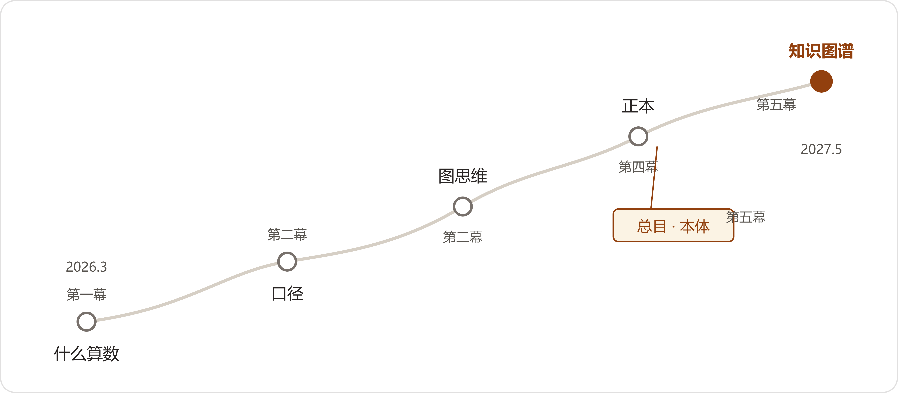
第17章档案室那一下午，叶老把四十年的旧物和两个新名字对上了。这段话是全书概念结构的出处：
按这段话画下来，是上下三层：最上层是本体，定规矩；中间层是图谱，装事实；最下层是应用，出答案。三层各自的内容如下。
"把一个行当在人脑子里那套想法定下来，写成字，不含糊，大家共拿。"（第17章·小夏译格鲁伯1993年定义）它管的是规矩，不是数据：哪些词算数、什么关系合法、违反了机器不收。
↓ 卡合了，各口的账照旧记——记的时候，用总目的词（第17章第四条规矩）
照着总目把各口的事实挂上去：机器、批次、供应商、变更单、客户连成一张网。赵峰第5章手工喂出来的五百个节点是它的雏形，第19章合龙后的三千八百多台是它的完成态。
↓ 图要能重演，才有下一层（第13章·老蔡："凡是要我认的数，得能重演"）
这条路有正反两种走法，书里都演过：
小说里的人物不知道学名，或者知道了也不常用。这张表把两边的词对齐，回正文查术语、出门看资料，两头都用得上。
| 小说里 | 学名 | 出处章 |
|---|---|---|
| 总目 | 本体（Ontology，模式层） | 13、16、17 |
| 对词 | 术语对齐、共识构建 | 13、16、17 |
| 正本 | 权威数据源、黄金记录 | 13、15 |
| 注（指什么，不指什么） | 范围注释、形式化定义 | 3、16、17 |
| 挂代／引见卡 | 同义词映射／同义路由 | 16、17 |
| 添词会 | 本体演化治理 | 16、19 |
| 看门的／总目委员会 | 治理委员会 | 16、17 |
| 卡、账 | 实例、数据层三元组 | 16、18 |
| 图（赵峰的图） | 知识图谱 | 5、16、20 |
| 条目／原声 | 知识条目／原始多模态证据 | 9、21 |
| 叫法栏 | 别名字段 | 9、18 |
| 缺失卡／待核 | 缺失数据标注／人工审核队列 | 12、17、18 |
| 快照／手工喂图 | 数据快照／人工数据管道 | 5、7、14 |
| 能重演 | 可复现性 | 12、18、20 |
术语的完整解释见附录B，情节的真实出处见附录C。
Appendix B: A Plain-Language Glossary
词条按它们在故事里第一次出现的顺序排列，读完小说回头查阅，位置容易找到。人话定义尽量用人物原话或场景，括号里标注出处章与人物；每条末尾一行斜体是教科书定义，供对照。有几个词正文里从未用过（三元组、冷启动、GraphRAG之类），也收了进来并注明——它们是读者此后在资料中会遇到的叫法。
口径——387和462两个数都没错，错在问的人没说清楚"客户"指谁：开票的法人算，矿上用货的算不算，在跟的意向算不算。后来立成两行注，票给谁是客户，货谁用是最终用户（出处：第1章·郑敏、董鸿章；第18章·周建海）。教科书定义：统计口径——指标计算时对范围、边界与计数规则的显式约定，不同口径的数字不可直接比较。
什么算数——两万三千份文件里，哪一份是现行有效的唯一版本；不先把这个写下来，机器发出去的就是作废文件。这条是八十七万买来的（出处：第2章·陈临；第22章·陈临）。教科书定义：数据有效性判定——对文档与记录受控状态（现行、作废、历史版本）的显式管理。
幻觉——小说里没人说这个词。第2章智知云演示当场编了个批次；小夏的检索增强试验五行对、六行编，语气一模一样，赵峰问"它编批次图什么"（出处：第2章·赵峰）。教科书定义：模型生成与事实不符却语气笃定的内容；治理手段包括检索约束、出处标注与拒答机制。
RAG（检索增强生成）——小夏的试验："现在的大模型，喂的东西对，它什么都能答。"第4章加上三道缰绳才敢上线：先过有效性过滤、答案强制带出处、库里没有就明说（出处：第2章·小夏；第4章·陈临）。教科书定义：生成前先从知识库检索相关内容作为上下文，缓解幻觉与知识过时。
认字不认事——模型认识每个字，不知道青山的哪份文件现行、哪家供应商是一个户头（出处：第2章·赵峰、小夏）。教科书定义：语言模型缺乏事实接地（grounding）——符号层的流畅和领域事实的对错是两回事。
主题词表（叙词表）——一个东西一个正式词，别名全挂在底下；叶老抄了三年才算入门，"词表是吵出来的，不是编出来的"（出处：第3章·叶老）。教科书定义：受控词汇集合，含同义（用/代）、层级（属/分）、相关（参）参照系统。
用、代、属、分、参——词卡上的参照符号：用＝正式词，代＝别名，属＝上位类，分＝下位类，参＝相关词。"减速机——用：减速器"就是一张最简单的卡（出处：第3章·叶老）。教科书定义：叙词参照系统（USE/UF/BT/NT/RT），图书馆学沿用半个多世纪。
注（指什么，不指什么）——每个词底下跟一行注，写明这个字在本单位算谁、不算谁。"词好定，注难写"，"易损件"一行注议了半日（出处：第3章、第17章·叶老）。教科书定义：范围注释（scope note）——界定术语适用边界的说明。
文档治理——清作废、标版本、建有效文件目录。原型案例的原话："重新整理企业文件——不是塞进知识库，而是建立文件之间的关系"（出处：第4章·陈临；FDE案例NO.11）。教科书定义：对文档生命周期（创建、审批、发布、更改、作废）的受控管理。
受控文件——QMS是唯一发布源，急件走联系单七日补录，旧版回收要签字，电子旧版没人删是最大的洞（出处：第4章·方致远、郑敏）。教科书定义：按发放范围登记、版本受控、可回收的文件，确保使用处持有唯一有效版本。
认领制——存量底档逐份签字认领、限期补录、逾期按作废（出处：第4章·陈临）。教科书定义：数据确权——为存量数据指定责任人的治理动作。
高频问题测试集——六百多条旧问答并成一百九十七题、取前一百，判卷的是质量部和技术部，不是数字办自己（出处：第4章·小夏）。教科书定义：验收基准——从真实使用中构造的评测集，标准与业务方共同确定。
答案带出处——答案必须带出处，原文点得开；库里没有就明说。吴师傅复测认的就是这条："不知道就说不知道，这条值钱"（出处：第4章·吴师傅）。教科书定义：引用溯源——生成内容附带可核验的来源。
图数据库——赵峰用社区版Neo4j在淘汰机器上装的那个库：不要钱、单机、画什么存什么（出处：第5章·赵峰）。教科书定义：以图结构（节点、边）为原生数据模型的数据库，查询语言如Cypher、GQL。
节点——图上的一个圈。一台整机、一个装配批次、一个轴承批次、一家供应商，各是一个圈（出处：第5章·赵峰）。教科书定义：图中表示一个实体的顶点。
实体——圈所代表的那个东西本身。正文里没用这个学名，用的就是"东西"和"户"（出处：第5章、第19章·赵峰、鲁向东）。教科书定义：现实世界中可区分的事物或概念，有唯一标识。
边（关系）——圈与圈之间有方向、有类型的线。什么单据落什么边：采购订单叫供应，出库单叫发货，变更单叫变更通知——"单据动词"，吵了一个晚上定的（出处：第5章·郑敏）。教科书定义：有类型的有向关系，连接两个实体。
属性——挂在节点上的数据：出厂日期、批次号、图号。第5章图上五百一十九个节点各带一串（出处：第5章·赵峰）。教科书定义：实体的特征描述，取值通常为字面量（区别于取值为实体的关系）。
三元组——正文里没用这个名字，第5章白板上那条线就是它：华信轴承—供应—JS-1100，正好一句话的主谓宾（出处：第5章·陈临）。教科书定义：知识的最小表示单位（主语，谓语，宾语），一条边加它的两个端点。
图遍历与JOIN——SQL查多跳要在表之间一层层连接，图顺着线走。"今天差的不是秒数"，差在写得短（一百一十六行对一行）、改得快（问题变了不用重写）（出处：第5章·赵峰）。教科书定义：图数据库靠无索引邻接本地化遍历，关系库多跳连接的中间结果随跳数膨胀。
快照——那张图停在6月24日，便签写着"数据截至"；快照不长数，审核抽到图外就露底（出处：第5章·赵峰；第15章）。教科书定义：某一时刻数据的静态副本。
手工喂图——每加一台机器都要人一个键一个键敲进去。"要么有人守着喂，要么——"，后半句没人接得上（出处：第5章·赵峰）。教科书定义：人工作业的数据管道——不可持续的录入方式，自动化更新的反面。
能跑不等于能生产——演示机上好好的对号，生产上同一张单子跑两遍出俩答案。"模型随机，系统不能跟着随机"——确认过的落库不重跑，两遍对不上转人工（出处：第5章、第13章·赵峰）。教科书定义：生产就绪——稳定性、一致性、可重演性达标才可上线。
隐性知识——老唐的手艺："这个声音……怎么说呢，就是发闷，你听那个劲儿。"写不下来，先录音（出处：第6章·老唐）。教科书定义：存在于个人经验与身体技能中、难以完全文字化的知识。
显性知识——写进注、规则本、条目里的知识。"纸上那个劲儿，学不来"是它的边界（出处：第6章、第9章·老唐）。教科书定义：已编码、可脱离个人传递的知识。
多模态识图——把齿轮图纸照片丢给模型，十来分钟给出变位制判断线索、验证思路和资料书名；参数是方致远拿计算器算的，卡尺是老唐的。"指路的是它，走路的得是我们"（出处：第6章·方致远、陈临）。教科书定义：跨文本与图像理解的大模型能力；工程参数输出仍需人工验证。
先攒着——录音、笔记本、旧照片，编号进柜之前都算欠着。"攒的东西得有柜子，不然攒着就是欠着"（出处：第6章·陈临；第22章·陈临）。教科书定义：暂存区——未经治理与确权的原始素材堆。
容忍区间——差异五百以下挂待查、年底转费用，"追一笔的工钱，比差异贵"。机器顺手标出来，三年252笔、17.2万就现了形（出处：第8章·许曼）。教科书定义：为效率豁免小额差异的容差规则，需定期审视其累积成本。
机器提、人定——"机器提差异，你定对错。它排它的可能性，你落你的章。"老康的章还是老康的章（出处：第8章·许曼）。教科书定义：人机协同——机器负责规模化初筛，人保留最终业务判断。
冷启动——小说没正面写这个词，最接近的场景是第8章：头一版规则两条，代付对照三十七条，起头全在老康脑子里先开张，机器跟着攒。真实世界的原型是反欺诈——几百万笔申请里坏样本才几万，先拿规则和无监督扛着（出处：第8章·老康；调研3）。教科书定义：系统初期缺乏标注与规则时的启动策略。
知识地图——三层：手册里有但记不住的；手册没错但照着做会错的；手册上压根没有的。小夏自己补一句："名起大了，其实就是张问题单子"（出处：第9章·小夏）。教科书定义：知识审计——盘点组织知识的分布、缺口与形态。
跟岗——问巴特尔缺啥知识，他说"都行"；跟着段兴走了四天，看他五回停在透气帽跟前。问题单子是看出来的，不是问出来的（出处：第9章·小夏）。教科书定义：现场观察——需求调研以实际工作流程为准，不以访谈自述为准。
叫法栏——条目上专门一栏收土名：透气帽、呼吸器、小烟囱。签上写什么字的规矩吵了三个月，这就是四十年前词卡上"代"字那一行（出处：第9章·段兴；第14章·叶老）。教科书定义：别名字段——同一实体的多种叫法挂同一词条。
条目——知识库的一条：症状、部位、原因、方案四栏，双签才入库（出处：第9章·段兴、老唐）。教科书定义：结构化的知识资产单元。
原声——录音不许摘，原样挂在条目上。"劲儿在声儿里，字里搁不下"（出处：第9章、第22章·老唐）。教科书定义：原始多模态证据——保留第一手形态、不做全文转写的知识载体。
回传——修机器的人按月打包回传新案例，小吕的头一条进库，段兴改过两处（出处：第9章·段兴）。教科书定义：反馈回流——一线使用中产生的新知识回流入库。
数据飞轮——改一回，回填一回，下回自己就对。汝阳那格"焊接件"两天走完一个来回。小夏自称"抄错题本的活"（出处：第10章·小夏）。教科书定义：AI生成—人工校准—数据回填的持续改进循环。
人工校准——老秦现在整张表都过，"等他敢只看标黄的，才谈得上省人力"（出处：第10章·小夏）。教科书定义：人对模型输出逐条确认，确认结果回填训练与规则。
异常前置——异常从"人去发现"变成"系统主动提醒"；红牌进手机，黄牌进看板，先送责任人，二十四小时没人接才升级。头一夜七条红牌里五回是旧账，提醒的命在准不在多（出处：第11章·陈临）。教科书定义：主动异常检测与分级告警。
只读不动账——原系统一根毛不碰，夜里抽数、二次组织。"账给审计，板给经营，两本账一个来源"（出处：第11章·赵峰、许曼）。教科书定义：旁路副本——在不侵入源系统的前提下做二次加工。
数据关系处理器——判断不同业务环节之间是什么关系、对不对得上。小夏给翻译成厂里话："说洋气了，就是个对缝儿的"（出处：第11章·小夏）。教科书定义：跨系统记录的关联与匹配引擎。
待核——认不得的进待核队列，一个节点不许悄悄生。十九行凭据不全的挂了一个来月，收十三、余六（出处：第14章；第18章·赵峰）。教科书定义：人工审核队列——机器置信度不足的记录转人工裁决。
主数据——供应商主档：912个编码，死码217，在用695归511户；三家供应商八个名字是常态（出处：第13章、第19章·潘永年、赵峰）。教科书定义：主数据管理——企业核心实体（客户、供应商、物料）的统一权威数据。
执行一号位——贺延龄，不是数字化的人，但知道每个部门的软肋和钥匙："你去找谁，没用。你得让谁去找"（出处：第13章·贺延龄）。教科书定义：执行发起人——真正能协调跨部门资源的人，常不是名义发起人。
一文一图一表——最小交付：一页办法、一张流程图、一张对照表。最小交付的规矩（出处：第13章·数字办，"三样，碰成一样半"）。教科书定义：最小可行交付——降低跨部门依赖的轻量产出。
灰度容错——三样碰成一样半；少一个部门，先少一个场景，路留着门留着（出处：第13章·陈临）。教科书定义：范围降级与增量交付。
审计可重演——"凡是要我认的数，得能重演。"老蔡自己一个指头敲序列号重走一遍；缺的，答得出缺在哪儿（出处：第13章·老蔡；第19章、第21章）。教科书定义：可复现性——相同输入与流程产出相同、可核对的结果。
缺失卡——缺的数据立一张卡：缺什么、查过哪儿、谁查的。"账不遮——遮了的账，后来连本带利地贵"（出处：第13章；第19章·赵峰；第22章·陈临）。教科书定义：缺失数据标注——显式登记数据缺口而非留白。
六本账（知识孤岛）——口径页在质量，口径表在财务，故障库在售后，规则本在技术部，登记簿在三号库，映射本在赵峰桌上。"本本都对，凑到一块儿没有一本是对的"（出处：第13章、第14章·小夏）。教科书定义：知识资产孤岛——各自正确、彼此不通的局部账本。
正本——哪本是正本？谁立的？谁认？一月两份表差一百二十万，差的就是这三个问题没有答案（出处：第14章·许曼、赵峰；第16章·徐伯勋）。教科书定义：黄金记录与权威数据源——单一可信版本及其治理主体。
对词——同一份东西各家写的名，先抄出来列在一起，吵出结果的当场落字，谁提的谁签字。八五年借仪器空屋三天列满两块黑板；二〇二七年群名就叫"对词"（出处：第14章、第17章·叶老、贺所长）。教科书定义：术语对齐——跨部门、跨数据源统一命名与含义的共识过程。
经得起抽查——演示和抽查是两码事：题和机器都归人家抽，审核组自己也不知道抽着哪台。"任一"两个字，把运气这条路堵死了（出处：第15章·翟工；第21章·岳工）。教科书定义：生产环境评测——以随机抽查检验真实水平，区别于自选样本的演示。
诚信口径（暂缺／在建）——暂缺就写暂缺，在建就写在建。翟工那句"别写没有的"；审核日"暂缺"那页挣的分比链多（出处：第15章、第21章·翟工、岳工）。教科书定义：诚实披露——对能力边界如实标注，不以外推代替验证。
总目（本体）——词、代、注、属、分装进机器，写成机器认的规矩。"东西还是那个东西，名目换了。"格鲁伯1993年那句定义，小夏译成人话：把一个行当在人脑子里那套想法定下来，写成字，不含糊，大家共拿（出处：第17章·叶老、小夏）。教科书定义：本体——共享概念化的明确规范（Gruber，1993）；Studer等1998年补上"形式化的、共享的"。
知识图谱——各口的卡、各家的账，照着总目连成一张图。谷歌起的名：上线时五亿个"东西"、三十五亿条"事实"；叶老盯着搜索框右边那张卡看了半天——"那张卡，不就是我们总目的词卡，印到全世界的网页上去了"（出处：第17章·叶老）。教科书定义：以图结构组织的知识库，节点表实体、边表语义关系，通常分模式层与数据层。
图纸与建筑——"总目是图纸，卡是砖。砖，你们有的是；缺的，是那张图。"三条边界：图纸领先数据一步即可；没有图纸能盖但不牢；只有图纸没有楼就是海力达（出处：第17章·叶老）。教科书定义：本体（模式层）与实例（数据层）的关系及其工程权衡。
模式层与数据层——总目管"有哪些词、什么关系算数"；卡和账管"具体哪一台、哪一批"。一格一个爹，第二个爹注里见（出处：第17章·贺所长裁定；第18章）。教科书定义：知识图谱的两层结构——本体约束数据层的实例三元组。
定注——给立起来的词写范围："关键件"的注重写两天打回原形，跟八六年"易损件"一个模子——四十年前后，两家厂，吵的是同一个题（出处：第17章、第18章·叶老、赵峰）。教科书定义：术语的形式化定义与范围约束。
引见卡——不改他的嘴，给他一张卡：他查"透气帽"，卡片把他送到"通气器"跟前来，路替他修好（出处：第17章·贺所长；第18章·段兴受用）。教科书定义：同义路由／查询扩展——别名自动归一到规范词。
挂代——定了"通气器"，"通气塞""透气帽"挂代，标准号入注。留代当引路牌（出处：第17章·贺所长；第19章·叶老）。教科书定义：同义词映射——别名挂到规范词条目下。
添词会——一年一回，各口报词得带凭据，空口报词不上会；吵过的进母本，开春油印增页。"词是吵出来的，也是拿凭据喂出来的"（出处：第17章·叶老；第18章制度化）。教科书定义：本体演化治理——受控的术语增删变更流程。
凭据——报词要带凭据，并户要认章：章样簿、老合同、变更函、执照。"字会重，章不重"（出处：第17章·叶老；第19章·鲁向东）。教科书定义：溯源证据——支撑知识断言的可核验依据。
看门人与委员会——母本锁在情报所，谁的卡它都不偏，这个门才看得住。青山版：柜子挂数字办，钥匙在总目委员会——六口六票，凭据上会，急词过半即开，谁点头记谁的名（出处：第17章·叶老；第18章·贺延龄）。教科书定义：治理委员会——中立托管权威数据源的跨部门机构。
胜任问题（问题单）——先立问题再定词："词背着一道题进来，没有题的词不收。"骨架之争问句说了算；"在跟"出局，因为单上没有它的题。小夏认出来："九十二分作业头一步就是它"（出处：第18章·小夏）。教科书定义：胜任问题——本体必须能回答的问题清单，用于圈定范围（斯坦福七步法第一步）。
实体对齐——机器管像不像，人管是不是。华信组相似度最高的俩生名：常州那个真分，另立一户；顺德那个真并，并进鼎恒，跟机器说的那家不沾边。"王宝宝是王宝强的小名，机器不知道；顺德的回单是哪个老板娘的字，机器也不知道——老鲁知道"（出处：第19章·赵峰、小夏、郑敏）。教科书定义：实体对齐与消歧——判定不同来源的记录是否指同一实体。
夜增量——库会长了：新工单新批次过总目词表自动挂载，认不得的进待核，新户走复评通道进图。机房的风扇一夜一声一声（出处：第19章·赵峰）。教科书定义：增量更新——按日或按批将新数据自动并入图谱。
本体演化——词立起来之后世界自己变：供应商改名、换户。改一处、六本账跟着动；改词通知单六栏签收，"急"的定义立了规矩——有人卡在半道上等这个词使，才算急（出处：第20章·郑敏、陈临）。教科书定义：本体演化——概念变更时的同步、版本与通知机制。
知识萃取——把本厂人脑子里的东西写出来。青山版的做法是不设新岗："向东认章，段兴回传，郑敏写注，高杏那张小抄——知识萃取师的活，他们干的就是，只是不叫这个名"（出处：第10章·老秦；第13章·佟总监；第22章·陈临）。教科书定义：知识萃取——从专家头脑与业务现场提取结构化知识并入库。
版本治理——受控编号、改页重打印、委员补签、纸本留一套。"机器丢东西，比纸快"（出处：第18章·陈临；第17章·叶老）。教科书定义：版本控制——受控文档与词表的变更留痕与主本管理。
GraphRAG——小说里没出现。第17章小夏讲的是谷歌知识面板的旧事；GraphRAG是2024年微软开源的做法：先让模型把语料抽成图、再做检索，多跳问题比纯向量检索占优。收进辞典，是因为读者出门撞见它时，会发现零件都是书里这些（出处：正文未涉及，见附录D）。教科书定义：以知识图谱增强检索增强生成的技术路线。
FDE（前沿交付工程师）——派驻到客户现场、帮企业把东西真用起来的工程师；本书二十四案例的出处《FDE案例100》里，全是这样的人。书里离这个角色最近的影子是小夏——从搭问答、下车间跟岗，到下场对词，把东西用到真现场的活，她干了一整年（出处：正文未涉及该名目；素材见附录C；第4、9、18章·小夏）。教科书定义：Forward Deployed Engineer——常驻客户现场负责集成、落地与迭代的一线工程角色。
AI化——正文从头到尾没人说过这个词，厂里管这一年叫"数字化"。最像它的画面是高杏：每周一早上一条，台账贴进测试口问，答完再照一眼台账，雷打不动；打砂、装配赶工的四月，手套没断过一回。老蔡的账是它的另一面——九百六十个人时，也记在册。要害就两条：融进工作流，常态化地用（出处：正文未涉及；最近场景第20章·高杏、老蔡）。教科书定义：将AI能力融入业务与工作流并常态化运行、带来可测效率提升的组织过程；其深浅可用使用频次与单次节省时间来估量。
通用目的技术——电力、计算机这类底座技术，"插上就能用"的好处只是零头，大头要等工厂改了布局、流程和人的本事，才放得出来：美国工厂用上电之后约四十年，制造业的生产率才起来。叶老那句"都得黄过一回才信"（第17章日志），讲的是同一件事的小一号；海力达是反面——只想买"插上就能用"（出处：正文未涉及；参照第14章·海力达、第17章·叶老日志）。教科书定义：广泛渗透、持续改进并催生互补创新的基础技术（Bresnahan & Trajtenberg，1995）；其生产率收益依赖组织与流程的互补性投资（David，1990，电力化案例）。
Appendix C: Fiction and Its Sources
读者读到的大部分情节都有真实出处。青山传动和全部人物是虚构的壳；壳里的做事方法、技术路径、效果量级，来自24个FDE真实案例（Datawhale《FDE案例100》，编号NO.1-24）、六份专题调研（调研1-6，清单见附录D）和公开行业事实。数字多为虚构，但量级对齐原型，不作夸大。下表按章汇总主要情节的出处；表末另附24个案例的去向清单——二十四案全部入书，其中五案经两章间章（间一《八月的会》、间二《来客》）以厂外来客讲述的方式进书。
| 章 | 小说情节 | 现实原型 |
|---|---|---|
| 01 三月十七号 | 矿场批量失效根因埋在旧报告与邮件里；AI客服发作废文件；两套客户数；老唐口头说想退 | 调研3第五、六节：Deloitte制造业技能缺口（260万婴儿潮退休、2028年240万空缺）；IDC知识工作者每天2.5小时找信息；智能客服引用失效文档为RAG通病（调研3第九节失败清单） |
| 02 试出来的难处 | SQL只答得上提前想清楚的问题；智知云试点编批次；小夏检索增强试验五行对六行编 | 调研1（JOIN与问题会变）；NO.16（稳定性）；调研3（厂商演示翻车为公开现象）；幻觉边界按调研3、调研5口径 |
| 03 档案馆里的老人 | 主题词表与卡片目录；五分钟抽存根；"指什么，不指什么" | 《汉语主题词表》1980年出齐三卷十册史实；叙词参照系统与范围注释（图书馆学史料，信源9条存于第3章出处清单）；底图、晒图、描图按GB/T 11822与行业回忆文核验 |
| 04 两万三千份文件 | 文档治理：清作废、标版本、有效目录；AI初筛人复核；高频问题测试集；答案带出处 | NO.11主案例（文件关系重组、"什么算数"）；NO.1（高频问题变测试集）；NO.2（识别迭代先错后准、抽样校准后才放行的口径原型）；NO.3（引用溯源）；NO.15（说不清的分诊交还给人、真实反馈调优）；受控文件按ISO9001文件控制实践核验（检索信源9条） |
| 05 五百个节点的图 | 社区版Neo4j手工建图285台；SQL与图当场对决；手工喂图之债 | 调研1（Neo4j社区版免费单机；JOIN痛点对图遍历）；调研5（Excel三次VLOOKUP对三条边）；NO.16（能跑不等于能生产）；对决降力度：小数据SQL也只要几秒，差距在写与改 |
| 06 老唐的失眠夜 | 多模态识图十来分钟给出变位制判断线索；老唐开始口述 | NO.11（三角尺刻度10分钟查明）；NO.1（老师傅经验难记录）；齿轮测绘反推方法与多模态边界经KHK等信源核验；AI只给方向，参数人工计算 |
| 07 六月三十号 | 验收三场演示；"算不出来，也不敢编数"；三个尾巴当众自陈 | NO.20（诚实话术原型："算不出来，也不敢编数""证明不了的，今天不说"）；NO.16；NO.1（上线后陪跑） |
| 08 许曼的表 | 对账自动化；容忍区间三年252笔17.2万；机器提人定 | NO.10主案例（容忍区间原话级保留）；NO.9（破冰项目、"下意识判断"）；银行回单、代付核销按企业会计实务通则核验 |
| 间一 八月的会 | 省机械行业协会AI应用交流会（8月3日单日）；闻姐讲素材资产、阮顾问讲组织转型、孟经理讲装载保本线；陈临带回三问 | NO.7主案例（"大家都会用，但企业很难让大家一起用"、现场降级重讲、"没有向我开放可对外披露的完整ROI数据"）；NO.12（源文件随人走、三层一致性进验收、POC口径）；NO.6（98方保本线、每超一方一百美金、装车指导图、截面法、激光测距约八千五、"原型验证/预计"口径）；协会交流会形态与会务费量级经检索核验 |
| 09 段兴的背包 | 售后知识库进带教流程；知识地图三层；老唐录音成条目；回传 | NO.1主案例（不另做聊天机器人入口、上线才是开始）；NO.14（业务人员自驱回传）；减速机漏油机理与轴承跑合判据经检索核验（信源存第9章出处清单） |
| 10 一张报价单 | 端到端直接出价翻车，改为图纸结构化＋物料规则匹配＋人工校准＋回填；阶梯报价；67条规则 | NO.17主案例（原话："一开始想端到端直接出价……改为模型只负责图纸信息结构化"；减50%以上工作量、3-5人变1-2人）；NO.18（被释放时间的反向纪律）；NO.23（小订单报价要素并入阶梯条件） |
| 间二 来客 | 阮顾问回访（10月21日）；设计院图纸初稿之死与"字得是人签的"；消费品群机器人与岗位说明书；小夏矿群起念被按住 | NO.21主案例（"一键成图"方案死于责任三问、可用初稿与分层参数、格式即接口、"三十分钟/七三开为项目方口径"）；NO.19（机器人进群潜伏两三周、周报只说事不带人名、AI岗位说明书、"这个渠道的标识位置历史上被退过三次"、无数字只讲现象）；与第10章端到端学费互为印证，矿群种子通后记第三仗 |
| 11 看不见的订单 | 经营看板；4980/5000悬账；异常前置红黄牌；乌龙七条 | NO.20主案例（"供应商发来5000个扳手实际只发4980个"原话；"数据关系处理器"；飞书卡片提醒）；NO.24（BI只把数画成图、回放评估样本集）；NO.22（数据搬运工）；乌龙与阈值治理为按NO.24精神扩充 |
| 12 数人头的 | 夜班传言"看板记人、年后考核调岗"；兑付不靠辟谣靠事实（加班费照发、排产满、KPI讲清）；老唐把录音笔交给魏来："你先学会使这个" | NO.22（员工替代焦虑、"简单裁人从来不是选项"）；NO.14（老师傅抵触原话与"助手"定位＋带徒安排）；ch8于倩/老康情节回收 |
| 13 墙 | 三堵墙：接口、主数据、人；执行一号位贺延龄；一文一图一表；重放七条变了 | NO.4主案例（"这些网上都有，你们自己查"原话；执行一号位；少一个部门先少一个场景；一文一图一表）；NO.22（"API能不能用和有API完全是两回事"）；NO.16（模型随机系统不能随机）；NO.5（信息即地盘，正文落为老祝"他守的不是数，是人家的底"） |
| 14 各自为战 | 六本账撞车：两份表差120万；海力达之死；瀚风审核通知 | NO.4（十个部门对同一指标十种理解）；NO.8（找不到、重录、更乱的循环）；调研3第九节失败清单（目标过宽、过度建模、止步demo）；供应商审核条文按IATF 16949式二方审核通用表述 |
| 章 | 小说情节 | 现实原型 |
|---|---|---|
| 15 审核通知 | 一级供应商准入审核：4.3全链路追溯、4.4知识体系化；"演示和抽查是两码事" | IATF 16949:2016条款8.5.2.1（标识和可追溯性——补充）；德力佳传动招股书（整机厂准入体系、2-3年验证周期）；金风科技供应商管理制度；DNV严重不符合项解析；调研3（自证陷阱：演示效果不等于真实解决率） |
| 16 董事会的账 | 年度ROI总账；刘振邦路线之争；徐伯勋三问；半截课 | NO.20（诚实话术汇报版）；调研3（失败模式）；董事会议事形态按上市公司公告惯例核验（巨潮资讯，信源存第16章出处清单） |
| 17 叶老的图纸 | 合卡两回；Gruber定义；谷歌知识面板；Gene Ontology；Palantir；"总目的学名，叫本体" | 调研2（本体论全文：Gruber 1993与Studer 1998、GO三库合一44,945条术语、Palantir"组织的数字孪生"）；调研3（谷歌2012年上线，5亿实体、35亿事实）；调研5（图纸类比及三条边界）；北图集中编目印发卡片史实 |
| 18 开工 | 问题单圈范围；对词会；引见卡裁定；关键件定注；看门人落章；第一分册37词 | 调研2第六节（斯坦福七步法第一步胜任问题；TOVE；"别追求一步到位的大本体"）；NO.4、NO.8（场景优先、清洗前置）；NO.16（点头落库不重跑） |
| 19 五个名字的供应商 | 实体对齐总攻：912码67组；机器堆人并；错案五天收回；合龙六分钟；夜增量 | 调研1之4.3（实体对齐与消歧：相似度是建议、同一性要证据）；调研5（王宝强/王宝宝案例逐字落场）；调研1之4.7（增量更新机制） |
| 20 灰区 | 治理：本体演化与改词通知单；错词责任制；急通道边界；知识萃取师之辩；高杏的小抄 | NO.14（知识萃取师；"两节电池"Agent原话——行政同事自发用提示词做查询工具）；调研1（维护演化是最常见的坑）；调研3（建成之后养不养） |
| 21 审核日 | 现场抽取；全链重演；缺失卡照答；两项轻微不符合；推荐一级 | 供应商现场审核通行流程（首末次会议、越级访谈、场外核证）；ISO19011抽样声明；轻微不符合30日纠正措施惯例（信源存第21章出处清单）；NO.20（追溯链路） |
| 22 老唐退休那天 | 条目表收口（129条、44回原声）；十三本笔记进档案室；试车台交接 | NO.1完成态（经验传承从依赖个人变成可检索、可学习、可追踪的组织流程）；调研3第五节（腾讯云故障定位72%到89%，效果参照量级） |
| 案号 | 案例 | 去向 |
|---|---|---|
| NO.1 | 制造业师徒带教到AI辅助培训 | 第4章（跟岗与测试集）、第6章（口述开端）、第9章（主场景）、第22章（完成态） |
| NO.2 | 车管所网办提效 | 第4章（识别迭代的口径原型：初筛两成错判，规则收紧三轮后抽样错六份，不吹数） |
| NO.3 | 诉讼律师案件工作台 | 第4章（答案带出处的原型） |
| NO.4 | 城市规划多部门数据 | 第13章（三堵墙主骨架）、第14章（口径不一） |
| NO.5 | TikTok达人建联 | 第13章（老祝守台账："他守的不是数，是人家的底"——信息即地盘的立场原型） |
| NO.6 | 跨境物流装载 | 间章一（孟经理讲：98方保本线、每超一方一百美金、装车指导图、截面法"人不能踩着货进车厢"、激光测距平板八千五、"原型验证/预计"口径） |
| NO.7 | 企业研发转型 | 间章一主案例（阮顾问讲：个人提效到组织能力、五天半培训三期、现场降级重讲、"没有可对外披露的完整ROI"口径） |
| NO.8 | 工业ERP物料搜索 | 第10章（物料匹配）、第13-14章（主数据病灶）、第18章（数据清洗前置、业务拍板） |
| NO.9 | 央企科研财务流程 | 第8章（破冰项目、判断过程在人、AI判断人审） |
| NO.10 | 线下零售对账 | 第8章主案例（容忍区间，原话级保留） |
| NO.11 | 外贸礼品公司 | 第4章主案例（文件关系重组）、第6章（三角尺刻度十来分钟） |
| NO.12 | 鞋服电商内容生产 | 间章一（闻姐讲：源文件随人走、素材进公司库、三层一致性进验收、"内部试用"口径） |
| NO.13 | 消防维保 | 第4章、第8章（需求在会议室里问不出来） |
| NO.14 | 省属国企电商子公司 | 第13章（知识萃取师话术）、第20章（设岗之辩与"两节电池"）、第22章（收束） |
| NO.15 | 抖音本地生活代运营 | 第4章（先假设AI能做、做不到的交还给人；真实反馈调优） |
| NO.16 | 美国电信网络数据分析 | 第5章、第13章（能跑不等于能生产；同一单据两遍两个结果） |
| NO.17 | 非标制造售前报价 | 第10章主案例（端到端翻车、结构化加规则加校准、数据飞轮） |
| NO.18 | 生物科技销售线 | 第10章（省下的人手去了哪：老销售开新矿跟进、老师傅带徒弟——释放时间的再分配清单） |
| NO.19 | 消费品产品生命周期 | 间章二（阮顾问讲：机器人潜伏业务群三周只听不说、周报只说事不带人名、AI岗位说明书、"历史上被退过三回"；小夏矿群起念，通后记第三仗） |
| NO.20 | 汽车零部件供应链 | 第7章（诚实话术）、第11章主案例（经营看板与4980悬账） |
| NO.21 | 建筑消防施工图生成 | 间章二主案例（阮顾问讲：一键成图方案之死、总工三问、可用初稿与分层参数、格式即接口、"项目方口径"声明；与第10章端到端学费互为印证） |
| NO.22 | 东南亚跨境电商 | 第11章、第13章（接口墙、数据搬运工、回单躺在手机里） |
| NO.23 | 工程租赁长尾客户 | 第10章（阶梯报价条件要素） |
| NO.24 | 澳洲乳企经销 | 第11章（BI之弊、评估样本集回放） |
六份调研的去向：调研1（知识图谱技术体系）撑起第5、17-19章的技术底盘；调研2（本体论）是第3、17-18章的知识主线；调研3（行业应用案例）提供第1、14、22章的行业事实与失败清单；调研4（叙事型技术书籍写作方法）与调研6（去AI味中文写作）管全书的写法；调研5（概念辨析与通俗类比）供给全书的类比与边界。各章写作档案均存有逐条出处清单与检索信源，可供核对。
成稿之后，我们又对着斯坦福大学 Digital Economy Lab 的《The Enterprise AI Playbook》（51 个成功部署的访谈调研）把书里的做法核了一遍：它调研发现 77% 最难的挑战出在人、流程和治理，而非技术；61% 的成功项目之前有过失败的项目——这两条，分别是第13章和第2章演过的事。另有三处补强：其一，一家科技公司让 AI 接管警报分诊，团队从六个人变一个半，没有人被裁，腾出的人力转去更高价值的活——第9章和第22章"机器替活不替人"的实证；其二，一家连锁超市让 AI 自主下单采购，损耗降四成、缺货降八成——第20章末尾周建海带回来的那桩新鲜事，判据是"错了退得回去"；其三，一家制造厂破部门墙的三件套：每部门设 AI 冠军、写进公司 OKR、演示日发奖——与第13章"一文一图一表"互为参照。
手册第九章还有一组数字，像是给这本书的另一份注脚：51 个案例里，只有 6% 的数据"完全就绪"才开始上 AI；数据散在多个系统、由不同团队各管一段的占 59%，但成功并不要求先把数据集中——建好访问的路，散着的账照样能用。这半句，正是总目和图谱干的事。同一章还说：75% 的案例把专有数据当作 AI 战略的关键，47% 直说多年攒下的数据（哪怕当年不知道攒了干什么用）就是自己的护城河——郑敏的本子、老唐的十三本笔记、段兴的十一本，攒的时候谁也不知道能换成什么，攒了，就在。工程界管这个叫"先存下来"，叶老管这个叫"东西都在档案室躺着"。
手册里还有一批数字，能在青山一家对上号：失败之后再做成的案例，牵头人一个都没换过——赞助人一换，制度记忆就走出了大门，董鸿章在头一年连着几回失败后没换掉陈临，这本书的起点本来就是对的；"让 AI 由技术线牵头，很少能成"，做成的跨部门案例全是业务与技术两家共同牵头——第16章吵的那场路线，吵对了；五十一个案例里，没有一家因为 AI 项目失败而处罚人——金岭那一笔记了账、没罚人，两边是一个规矩；能辨认开发方式的成功项目，100% 用小步迭代，没有一家按瀑布计划干；阻力最大的不是终端用户，是法务、人事、风控这些参谋部门（占35%）——高杏自己找上门来问，是少见的好运气。
Appendix D: Further Reading
分四组：书、论文与标准、开源与开放资源，最后是本书调研信源的诚实说明。所选条目只收正文提过或与青山做法直接相关的，不是一张求全的书单。
诚实声明：本书写作基于六份专题调研文档与Datawhale《FDE案例100》（其中24案进入素材库，去向见附录C）。虚构的只是青山传动这层壳和壳里的人；情节的做法、路径与效果量级皆有真实原型，检索核验过的专业细节（齿轮测绘、银行对账、供应商审核、叙词表史料等）在写作档案中逐条存有信源。效果表述守一条口径：能证明什么、还证明不了什么，都写清楚；证明不了的，不编数。
Appendix E: Putting AI to Work
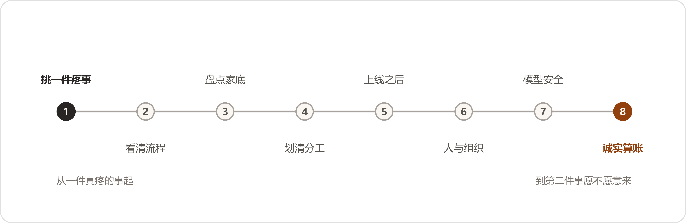
本篇按做事本身的顺序讲述"企业如何把AI用起来"，共八段。其中的说法均有真实出处，来历与边界在篇末交代；这里先把立场说明白——今天没有放之四海的标准答案，只有一批实际做过的企业走出来的路。路有八段：选事、看流程、盘家底、定分工、上线、过人关、置工具、算账。
第一件事选什么，比后面所有的技术决定都重要。常见的错误是顺序颠倒：先问"AI能干什么"，再到全厂寻找可以套用的地方——拿着锤子找钉子，找回来的多半不是最该敲的那一颗。正确的问法是：我们哪里最疼。疼有具体的表现——那件事反复发生，有人天天在承受，耽误的东西看得见摸得着：一笔一笔对不上、要人工核对的账，一张一张看不过来的单据，一项只有老师傅会做、而老师傅明年要退休的活。
挑第一件事，有三条标准。第一条，最疼：不解决它，有人天天在消耗。第二条，最快：几个星期、至多一两个月能见分晓的，不选要做半年的。第三条，账最好算：省下的东西数得出来——省几个小时、追回多少钱、少加几个人，年底能写成一行数。三条标准全占的工作不多见，占住两条，就值得排第一。
选定之后，把开头定性为试验，不定性为工程。一项针对五十一个成功部署的调研显示：七成三的企业刻意从小的做起，六成三直接把项目定性为实验——出了问题便于回头，成了再放大。这项调研还有一条更令人宽慰的数字：六成一做成的项目，此前失败过一回。第一回不成不是谁的责任事故，而是这件事的常规工序。头一回交学费的企业，和头一回就成的企业，相差不大；交了学费就收手的，则和没做过的一样。
最后一条：第一件事不选最炫的。全面转型、智能中枢、行业大模型——这些词写进汇报里好听，放在第一件事上致命。第一件事越不起眼越好，越贴近具体的活越好。成了，第二件事的门就开了；败在一个大词上，往后两年没人再提这件事。
事情选定了，不要急着谈工具，先看这件事现在是怎么做的。有一家做翻译的公司，第一次上AI，流程没动，直接把工具塞进原来的工序，结果原有的毛病被放得更快，项目当年就死了。第二次换了一种做法：先停三个月，把流程里积年的毛病一条一条修掉，再让AI进入修好的流程——三小时的活变成三分钟。同一件事，同一个工具，前后差着一整个流程。这件事有个直白的说法：流程本身是坏的，AI只会让它坏得更快。
看流程的办法是现场观察，不是开会询问。开会问不出真话——一线的人在会议室里，领导在座，能说出来的都是"可以""没问题""挺顺利"。要派人坐在干活的人旁边，看几天：他一个上午跟隔壁位子回头探了几回，哪个步骤曾经卡壳，哪句话问过三遍，什么东西他宁可记在自己本子上也不录进系统。自述的水平与真实的水平相差很远：有一家企业给团队做培训，前期问卷收回来，自评中上偏上；开讲两个小时，发现一半人连最基础的操作都没过关，讲师当场把备了半个月的课件扔了，从零讲起。从那以后这家培训公司的规矩是：问卷只信三成，剩下七成进了场再说。
看完带三个问题回来。第一，这件事里现在谁最累；第二，他愿意把手里的活摊开来给你看吗；第三，他教别人的手艺，有没有落在纸上。三个都答得上，这件事可以动。有一个含糊，先去补那个含糊——它多半就是这件事真正的病根。
家底有两种：一种在系统里存放，一种在人脑子里装着。多数企业两头都缺，又两头都有存货——只是没有盘过。
先说系统里的。数据散在各处是常态，不是毛病。那项调研里，数据散在多个系统、由不同团队各管一段的，占五成九；把数据完全清理干净了才开始上AI的，只占百分之六。这两个数放在一起，结论就出来了：等数据齐了再干，等于永远不干。做成的企业走的是另一条路——不搬家，修路。数据留在原来的系统里，把访问的路修通：能查到、能取出来、能对上。散着的数据，用得起来；用不起来的集中，也没有用。
而且数据是边用边修的。系统运行起来之后，错的单子被纠正，纠正的结果回流进库，库越用越干净。反过来，为了"先把数据治好"停着不动的企业，库只会越放越旧——治理不是一次性大扫除，而是日常的打扫。
旧账不要小看。调研里七成五的做成企业，把多年积累的专有数据当作AI战略的关键；将近一半直接说，这些数据就是自家的护城河——哪怕当年积累的时候，谁也说不清积累它干什么。旧图纸、旧工单、旧台账，先存下来，比先想清楚有什么用更要紧。跟这一条配套的还有一个反面循环要警惕：库里找不到，照流程重新录一条，库里多出一条重复的，越重复越找不到，采购照着错的买。这个循环一旦转起来，病根往往不在录数据的人操作不稳，而在那条找东西的路太差。先把找得到修好，再谈别的账。
人脑子里的那半个家底更要紧，也更容易漏：判断、原委、例外。哪个客户其实是一家、这道工序什么情况下要偏离标准、这批料为什么放行了——这些都在人脑子里，人一走，跟着走。留下来的办法不神秘，只是麻烦：口述录音、把判断写成规程、给岗位写说明书，一条一条来。麻烦是这类家底唯一的取用成本，绕不开。
总的分工一句话能说完：认字、比对、搬运、初筛这类活，交给机器；判断、签字、担责，留给人。不是机器做不了判断——而是判断连着责任，责任必须有个落处，落到人身上才有人认。
第一个要避开的坑是端到端：指望东西从这头进去、答案从那头直接出来，中间全交给机器。这么干的几乎都交过学费。有一家做非标件的厂，第一版系统就是图纸进去、报价直接出来，数字看着漂亮，底稿对不上账，一单交了几十万的学费；后来改成两段——机器管前半段，把图纸拆成结构化的表；后半段接在厂里自己的物料库和规则上，每一单有人校准、签字。改完才立得住。
机器内部也有分工。有一家做物流装载的企业说得直白：能听懂人话的模型管听话、派活、把结果讲成人话；真算数的活交给更老的算法——出数的口子，模型不许碰。他们真封过一次口：模型自己额外估了一个数，与算法对不上，第二天出数的位置就只留给算法了。模型善于理解，算法善于计算，各守各的口。
验收的线，要与用的人一起画。先把这件事里最常出的问题收集起来当考题，让系统跑一遍，看看真实水平在哪里；合格线画在两边都认得了的地方，不画在厂商的宣传册上。线画高了，系统天天挨骂；画低了，废品放行。两边一起画的线，出了问题两边都认账。
能演示和能生产，是两回事。演示是问一个问题答一个问题；生产是同一个问题问八百遍、答案都得是同一个，业务才敢把章盖上去。稳定性不是模型自带的，而是做出来的：加校验、加规则、同一问题反复测，测到答案不再漂移为止。前面那项调研给过一个口径：做成的项目，全部是一小步一小步迭代出来的；按大计划一次成形交付的，一个都没有。
凡是对外见客户的东西——图、单、文——加一道一致性检查。有一家鞋服企业把一致性直接写进了验收：模特的模样要前后一致，衣服的版型颜色要与实物一致，场景不能乱串，三层全对才放行；机器先查一遍，人终审签字。这类检查的道理很朴素：对外的东西错一处就是事故，越是漂亮，客户越是当真。
也有可以让机器自己决定的活，有一个四条的框子：规则写不出来的复杂，人熬不住的重复，判据清楚，错了能退。四条占全，可以放手——有一家连锁超市让系统自己决定买什么、什么时候补、补多少，损耗降了四成，缺货降了八成。四条占不全，人守门。守门守的不是机器的面子，而是"错了退不回去"的那类后果：报价报错了、图纸签错了、钱付出去了——这些没有退货一说。
最后留一条退路：哪个环节机器老是出错，就把那个环节还给人，不要为了全自动的体面硬撑。段段有人把关的流水线，跑得比全自动的黑箱稳。
系统上线不是项目结束。真正的落地发生在上线之后的头几个月，工具与活互相磨：页面难用、答案离谱、流程卡壳，都是这几个月冒出来、也是这几个月能改掉的。有一家培训公司的说法记在这里：系统上线那天，项目才刚开始。
工具进流程，不开新门。给员工一个新入口，发个通知让大家"自己去用"，多半用不起来——多一个入口，多一道登录，多一分"这跟我有什么关系"。长在原来的流程里才有人用：培训照旧打卡，答案长在单据里，机器人拉进已经在用的群。员工在哪里干活，工具就往哪里长。
先让用的人得好处，再谈推广。先把他每天最烦的那一步解决掉——要敲半屏的提示词、自带水印的图、要翻三个系统对的一笔账。这一步解决掉，他第二天自己来找你，问下一步能不能也办了。动员会上讲的道理，不如这一步有用。
头一两个月有人陪。答案不对，当场有人调；页面别扭，当场有人改。这个阶段的陪伴价值在两处：一是把工具磨贴合，二是让用的人知道出了事有人管——这份底气，比工具本身更决定他肯不肯把真活交给它。
用法要留下来。规程、模板、操作说明，写成企业自己的册子，放在新人够得着的地方。不要让活法长在某个能人身上——他休假一星期，系统跟着停一星期。留册子的意思，就是把能人脑子里那部分，趁热倒出来。
真正的验收在半年之后：对方愿不愿意做第二件事。验收会上都好说，锦旗也是那年送的；第二件事愿不愿意接着交给这套人马，才是这一年干得怎么样的实底。
那项调研的第一个数字值得抄在这里：七成七的项目，最难的挑战不在技术，而在人、流程和治理。这篇文章前五段讲的都是活，到这一段讲人——十条难处里，七条在这。
阻力在哪里，与多数人想的不一样。不是一线：一线只占两成三。最硬的在中层和参谋口——法务、人事、风控这类把关的部门，占三成五。道理不复杂：一线怕的是多学一个新东西，中层和把关的怕的是担责任、动地盘。看不清这一层，推行的人会把力气花错地方——天天给一线办培训，真正该谈的人在会议室另一头。
更深的一层是怕被替代。让老师傅把经验教给系统，他的第一反应是"教会了，还要我吗"。这一问不过分，是人之常情。化解没有取巧的办法，就三样：把定位说清楚——替的是活，不是人；把承诺落在纸上——有一家企业把"不因AI裁人"写进制度、盖了章，设计团队这才开口把真话说全；把好处先给——先用起来的人，先得利。空口的保证，在这一关上一文不值。
一把手要真牵头。真牵头不是批预算、不是剪彩，而是出了问题顶在前面，路线吵起来时拍板，败了不换牵头的人。败了之后做成的项目，牵头人一个没换过；反过来，牵头人一换，前面积累的制度记忆跟着人就走了。还有一条配套：让技术部门单方牵头，很少能成；做成的跨部门项目，全是业务和技术两家一起牵头——一家出题，一家答题，谁也推卸不了责任。
每个部门要长出自己会用的人。有一家做半导体的，第一回各建各的库，散了；第二回每个部门指定一个人牵头，把用项写进部门目标，每个季度演示一回，做得好的发奖。数据收集从四十个小时降到一小时。两回用的工具，没有换过。换掉的不是工具，是用法和管法。
考核要跟着改。工具换了、流程换了，考核还按老账算，学的东西三个月就还回去了。有一家企业把研发的考核项从"一个月写多少"改成了"名下的文件齐不齐套"，就改了这一个项，那个组当月的行为就变了。人在哪里使劲，跟着考核走，不跟着号召走。
要AI接哪一摊活，先给它写一份岗位说明——与招人一样：干什么，输入是什么，输出是什么，哪一类自己定，哪一类必须报人。写的人最好是干这摊活的人自己，规矩自己定的，才认账、才肯盯。AI进门的手续办得越像招一个人，落地越顺。
败了不罚人。那五十一个做成项目里，没有一家因为AI项目失败处罚过谁。出了错，第一件事是把流程的窟窿补上、写进规程，然后才谈人的事。这不是心软，而是算账：罚一回，往后所有的错都藏起来了——藏起来的错，比暴露的错贵十倍。
省下的人往哪里去，要在动手之前想好，不要等省下来再想。路子就三条：加速——省下的时间多接活；转岗——有一家企业的安全团队，AI接了警报分诊之后，六个人的活一个半人就干了，一个没裁，腾出来的四个半人转到只有人能干的活上；裁员——这条路摆在那里，但做成的企业多数没走。这些企业的口径值得记下：AI替掉的，是企业本来要新招的人，不是已经在岗的人。也有一笔要如实照录的冷账：有研究基于千万级工资单数据发现，AI暴露高的岗位上，二十二到二十五岁年轻人的招工在下降。门确实在变窄。企业能做的，是把人往判断的位置上挪——这比假装没这回事，对人对厂都负责。
模型不是第一个要做的决定，也不必为它站队。模型圈三个月一翻篇，今天吵得天翻地覆的胜负，年底就没有踪影了。但有几条实在的办法，值得在置办的时候用上。
第一条，按活派模型。粗活、量大的活，派便宜快当的；要紧的活，派强的。那项调研问过"模型是不是可以随便换"，答案分两层：说常规任务里模型随便换的，占七成一；说关键任务里也随便换的，一家都没有。所以不要在"选哪家"上赌身家，要在"怎么派"上花心思。第二条，要紧的事双保险：让两个模型各自独立答一遍，对上了才放行，对不上转人工——多花一份调用费，买一道对账。第三条，应用和模型中间加一层网关，往后换模型的时候，应用一行不用改。这三条都不贵；贵的是当初没留这层余地。
投入由轻到重。先租、先调接口、先小规模验证；价值没有看见之前，不置办一体机，不定制微调。有一家企业差点被推销着买了台一体机，那个价钱够把整个试验做三轮，买回来跑的还是原来那些活。家底也是同理：已有的系统、账号、平台、群，能挂上去就不推翻重来——员工在哪里办公，工具就往哪里长。
安全的账要前置。数据出不出域、敏感字段怎么脱敏、存在谁的机器上——这些在动手之前说清楚、写进方案；做完了再补，返工的是整个项目。有一家银行被合规禁用了公有云，没有被难住：敏感字段出境先清洗掉、换成合成的替代、回来再拼上，把安全的账提前算了，路就通了。安全这道题不挡路，挡路的是没提前算。
上线之前，先给人工记录一次耗时。这件事现在用几个人、几天、几个小时，白纸黑字记下来——这本底账，就是往后所有新东西的对照面。有一家企业项目做完才发现这笔账没法算：系统交付完，对方把访问权限一收，后面的数再也拿不到了；省了多少，谁也说不清，两边都只能含糊。底账要在动手之前记，这是吃过亏的人回头补的课。
口径要诚实。几天的统计，不能当全年的结论；试运行的数据，要说明是试运行；说得出什么、说不出什么，分开讲。做得长久的乙方都自己先泼冷水——几天的数据，如实标注是几天的数据。这不是实诚过头，而是让账立得住：吹出去的数字，早晚要有人对质。
省下的钱，要干这活的人自己认。报表上算出来的节省是一回事；经手的人一句"对，这钱确实就是这么省下来的"，这笔账才算立住。前一个数在财务那里，后一句话在车间里——两样都有，才敢往外说。
回报常常迟到。经济学里有一条老曲线，讲的就是这个脾气：新技术的红利，要等配套设施和用法一样一样长齐了才来，头几年账面难看——电气化走了四十年才走进千家万户。AI摊进企业，一样的脾气：先是一段看不见产出的投入期，然后好处才一段一段浮上来。第一年难看，是这条路的正常天气，不是走错了路。
好处有两种，第二种常常在启动时想不出来。第一种是省下来的：时间、钱、人手，这类好处上线几个月就能对账。第二种是以前根本做不到的：有一家保险公司把出合同从四天压到四小时，靠这个赢回了本来会丢的单子；有一家金融公司把一百万行没人敢动的老代码，几个星期迁移完了；有一家呼叫中心被AI原生的新对手逼到墙角，掉头把AI装进自己的服务里，一年赢回二十几个新项目，行业排名进了前四。第二种好处不写在立项书里——它长在用的过程里，用得越深，长得越多。
最后是失败的原因，也有一本账可对：三成五败在组织没准备好，两成七败在关键知识从来没沉淀过——都在人脑子里，人一走就带走了；一成八卡在法务合规。前两条，恰恰是这篇文章第一段和第六段讲的事。绕了一圈：最难的还是开头挑的那件事，和中间过的那一关人。
这篇文章的说法，来自两份公开材料。一份是 Datawhale 的访谈集《FDE案例100》：二十四个真实项目的对话实录，做项目的和用项目的一起复盘，从进场怎么谈、中间怎么卡壳，到上线怎么翻车、怎么救回来。另一份是斯坦福大学 Digital Economy Lab 的《The Enterprise AI Playbook》：五十一个成功部署的访谈调研，十二个问题上各有一组数字。合计七十五个真实案例。这篇文章把两边的说法拆开、合并在一起，按企业做这件事本身的顺序重排——原文里没有这个结构，结构是为读者服务的。
边界也照实说：两份材料都是做成了一方的讲述，失败的项目没有访谈录，这是幸存者视角；斯坦福那份是征求意见稿，数字以正式版为准；文中所有百分比和金额，按原口径照录，没有外推。所以这一篇是路标，不是保证书——七十五家企业走过来的是这些坎，过坎的顺序和办法如此；走到自家厂里，路还得自己走。
下面这张表，给读过前面二十二卷的读者：这八段里的每一条做法，书里哪一章演过。没读过的读者不需要它；读过的读者拿它对照——哪条对哪章，翻回去就能对上。
| 段落 | 书里的落点 |
|---|---|
| 一、选事：从最疼的问题入手 | 第7章（需求单先挑最疼、最快、账最好算的）；第2章（三条路都败过一回） |
| 二、看流程：现状梳理先行 | 第4章（先清文件、立"什么算数"再放开问答）；第9章（小夏下矿跟岗）；间一（调研只信三成） |
| 三、盘点家底 | 第6章、第22章（人脑子里的家底，口述成册）；第8、11章（数据散在各口，先修访问的路） |
| 四、定分工：机器与人的界线 | 第8章（机器提差异，人定对错）；第10章（端到端之死，改为结构化＋校准）；第20章（错了退得回去才放手）；间二（AI出初稿，字是人签的） |
| 五、上线：落地的开始 | 第9章（培训进流程、照旧打卡）；第14章（各管各的债） |
| 六、过人关：最大的坎在人与组织 | 第13章（执行一号位）；第20章（金岭记了账、没罚人）；第16章（路线之争，两家共同牵头）；第20章（岗位说明、谁能用）；间一（闻姐把不裁人写进制度） |
| 七、置工具：模型与安全的次序 | 第2章（法务脱敏）；间二（"别急着买"、由轻到重） |
| 八、算账：诚实记账，等待回报 | 第7章、第16章（"还不能证明利润提升"）；第11章（企业负责人自己看数）；后记（七仗之二：先记录效果基线） |
上面这张表对的是书里的章节。补记对的是书外。正文里小夏追的那位号主，实有其人：署名叶小钗，做企业AI落地的一线实践者，2026年5月到9月写了一组公开文章（他的方法论笔记整编为附录F）。八段是七十五个案例走出来的路，这位公众号作者和他笔下的企业，在同一年把其中几段又走了一遍。选几处对得上的，原句照录，段名对齐：
| 一、选事：从最疼的问题入手 | "每个完整的业务蓝图都有十几个值得解决的问题，但一期也只能选择帮助最大的一个点做穿。"（企业培训现场，学员得出的结论） |
| 二、看流程：现状梳理先行 | "其实，对于工作流AI项目，比起选择运行载体更加重要的是SOP是否梳理清楚。"（选型长文的第一性原则） |
| 三、盘点家底 | "他们实际上会选个10万级别预算的业务开始"；数据清洗的成本"偶尔会超过50%"。（本体项目的账） |
| 四、定分工：机器与人的界线 | "AI不会补位，他只认上下文。""宁愿让业务人员手动复制粘贴，也要先证明智能体给出的答案真的有用。" |
| 五、上线：落地的开始 | "AI覆盖了对话，并不等于接管了工作。"（两年电商客服复盘） |
| 六、过人关：最大的坎在人与组织 | "我为什么要花额外的时间，去帮公司学习AI？"（一线员工的心声，作者注：不好听，但很真实）"AI暴露的不是AI的问题，而是组织原本就存在的问题。" |
| 七、置工具：模型与安全的次序 | "能写成规则的，不要交给大模型。能固化成Workflow的，不要让Agent每次重新规划。"（分工判词） |
| 八、算账：诚实记账，等待回报 | "结果正确只是及格线，过程正确才是准入线。"（医疗开方系统的判断链） |
边界照录：以上句子出自公众号文章，亲历与转述混杂，句后括号注了来历；其中六处进了正文（第17、18、20章与后记），其余收在这张表里。八段是路标，这一块是路标旁多立的一块——仅供参考。
这一篇和附录E是一对。E讲的是企业把AI用起来的顺序，八段路，七十五个真实案例走出来的；这一篇讲的是用起来之后的事——个人提效撞上组织，流程撞上部门墙，工具撞上账本。材料来自一个人：署名叶小钗的一线实践者，做企业AI落地的咨询与陪跑，2026年5月到9月写了一组公开文章（书里小夏追的那位公众号作者，就是他）。我们把散在十几篇文章里的方法论拆出来，按方便使用的顺序重排。原话是他的，顺序是我们的；他没说过的话，这一篇里找不出来。
他给"AI原生组织"立过一个公式，改过三版。1.0是"员工AI能力＋机制流程匹配"。2.0加了第三项"组织评价匹配"——起因是他亲手做的一套智能销售线索分配系统，效率上是成功的，败给了管理博弈：企业负责人对一个销售团队负责人不满又不能裁人，AI系统太公平，让那个人月月拿奖金，企业负责人直接把系统停了。3.0再加第四项"AI操作系统"。四项合起来，就是他整个体系的地图。
为什么必须逐层推进？他的结构是四层：AI先进任务（个人提效），再进流程（标准与验收），再进组织（边界与调度），最后逼到评价权。每一层的问题解决了，下一层的问题就被推出来——个人提效把团队协作问题暴露出来，流程标准化把组织边界问题暴露出来，组织重构把专业评价问题暴露出来。他的总结是一句话："AI暴露的不是AI的问题，而是组织原本就存在的问题。只是过去这些问题可以被低效率掩盖。"
第一层有个不好听但真实的员工之问："我为什么要花额外的时间，去帮公司学习AI？"——团队要补个人提效的差额，办法常常是加班。而且个人效率不等于团队效率：上游用AI加速生产，下游更难消化，"产品花费之前1/10时间，糊弄出来的需求文档，程序员读不懂，AI也读不懂"。为什么以前能应付过去、现在应付不过去了？"之前靠扯皮、妥协可以正常工作的系统玩不了了，因为AI不会补位，他只认上下文。"
最危险的错觉，是把个人提效当成组织提效。他见过"个人AI提效1000%，组织AI提效1%"的极端案例；见过公司给每人配一千美金Token，发现多出来的时间被虚耗后撤回支出，转头裁掉"无关紧要"的人做岗位合并。全员放开权限而不建评价能力，他列过五种乱象的完整清单："每个人都在开发自己的小工具；同一个业务规则出现多个版本；数据散落在不同表格和知识库里；局部流程效率很高，跨部门协作依然困难；系统越来越多，却没人知道哪些应该继续维护。"他的警示句："底层机制没有改变，越强的AI只会越快地制造垃圾。"
他的落地手艺，一大半在"先把流程说清楚"。培训企业时他反复打断大段介绍，要求学员按条理陈述：业务背景→目标→现状流程→差距与问题→具体需求→AI方案——"背景不是需求，目标也不是需求"。拆解按层级来：整体业务蓝图→总SOP→分项SOP→单一场景→单一关键流程→具体功能。"每个完整的业务蓝图都有十几个值得解决的问题，但一期也只能选择帮助最大的一个点做穿。"
动AI之前先画原流程，七个问题：原来是谁触发？谁提炼和判断？信息转给谁？谁生成结果？谁审核？谁最终发送？异常回到哪里？然后"先看传统做法，再对比AI接入后的流程"。价值没验证前不碰工程化："宁愿让业务人员手动复制粘贴，也要先证明智能体给出的答案真的有用。"正确顺序是：智能体能力验证→工程化→产品化→运营优化。
AI能不能承担一项业务职责，关键不是模型，而是标准。他开过清单：输入标准、判断维度、通过与不通过标准、输出模板、异常规则、下一步行动标准——"没有标准就很难让AI干好，它只能用流程把事情串起来"。人机之分他给过一个最简的切分："确定性动作，交给代码或自动化节点；信息提取、内容生成、语义判断等需要理解的动作，交给大模型；关键环节或高风险动作，采用人工确认。"对外的出口分白名单黑名单：只有确认安全的问题可直接回复、其余人工，是白名单；大多自动、只拦红线，是黑名单——客户价值和错误成本高时选白名单。
一件事的SOP梳理到什么程度算够？他给过标尺：核心文档要接近伪代码的精度——任务边界是什么，实体如何定义，关系如何流转，每个节点调用什么知识，拿不到怎么办，拿错了怎么发现，生产问题如何回流。"文档写不清楚，程序员一定做不清楚，换什么AI都是一样。"
他工程与组织共用的分工律，八个字："确定性下沉，不确定性上浮。"展开是四层：规则与程序处理高确定性的逻辑；Workflow承接已经理解清楚的流程；Skill与LLM节点承接局部判断、语义理解和能力调用；Agent负责目标驱动下的动态规划、跨流程组合和剩余不确定性。"能写成规则的，不要交给大模型。能固化成Workflow的，不要让Agent每次重新规划。"而且不是静止的："随着业务理解加深，原来交给Agent的一部分判断，还会继续向下沉淀成Skill、Workflow甚至规则。"配套一条难度标尺：规则→程序→Workflow→LLM节点→Agent→业务专家，越往左越适合软件，越往右越依赖判断——人与AI的分界不是岗位，是可穷举性。
要"替换一个人"，他定义过完整的工作域，五层：理解（用户在说什么）；查询（从各系统拿到事实）；判断（按政策规则决定处理）；执行（提交申请、触发流程）；负责——"知道哪些事情可以自动完成，哪些必须交给人"。第五层是人机边界的终点。他也拆过"会说几句话"的假象：用户问"拆封了的商品还能不能退"，背后是七步判断——找到订单、确认时间、判断品类、查拆封政策、区分质量问题与主观不满、决定发起售后还是追问还是转人工、写入系统。"一个熟练客服看似只回复了几句话，背后实际上完成了信息理解、数据查询、规则匹配、风险判断和系统操作。"
放权的技术形态：AI获得"查"与"写"两类能力，业务系统的接口封装成工具，每个工具有明确的输入、权限和返回；铁律是"每一种权限都必须绑定已经验证的场景、明确的规则和可检查的结果"。他的项目里有一条底线反复出现："客服团队是一定不能全部裁完的，一定要有一批熟悉业务、拥抱AI的留下来持续配合建设这一切。"
他体系的地基是一条公式：员工整理＝把员工某一段KnowHow程序化，而KnowHow＝SOP×Data。SOP分三档：个人几步走完的低流程，多人协作的中流程，带回路、多部门的网状高流程。数据分四档：无、中、高、极高——极高是数据之间存在关联关系。两个维度一交叉，就是一张选型地图：图谱与本体，只在最高的那几格出现。
他自己两年走过的路是一条五级序列，每一级都由上一级的死因逼出来：工作流AI（最难的不是代码，是把自己的SOP整理清楚）→简单RAG（能服务到九成用户，残留幻觉与失效引用）→Agent平台（把SOP编排做成图形化界面——死因是业务人员"看着那个编排SOP的界面就烦"）→Agent化（一句话生成SOP——死因是不稳定、黑盒不可干预）→Skills（用自然语言描述工作流，确定性部分封成脚本）。最后留下一个他称作"整个AI世界留下的最大工程课题"的未决问题：数据该怎么处理。
RAG用不好，他给过一条垃圾生产线："垃圾解析→垃圾切块→垃圾索引→垃圾召回→模型一本正经地基于垃圾胡说八道。"一个数字离开章节标题，系统就不知道它描述的是哪个市场、哪个年份、哪个口径。
走到本体这一关，他先泼冷水："本体论很好、知识图谱也很好，但它解决的是理得清的问题，而不是搞得定的问题……画出几张实体关系图，反而是整件事里最轻的一步。"难在五道管理关：专业人员脑中的隐性认知，要靠访谈、复盘、异常追问一点点逼出来；各部门的知识天然冲突，统一表达触碰的是部门边界与历史流程；预算有限，所以要克制实体数量、关系数量和知识层级；知识整理出来，还得让AI"拿到、拿对、拿全，同时不拿多"；以及持续维护——"企业如果没有专门团队维护，前期投入越大，后期形成的历史包袱也可能越重。"
三件套的分工，他有一句便于记诵的版本："知识图谱记录这个世界发生了什么，本体规定这个世界应该如何理解，规则引擎决定这一次应该怎么办。"什么情况该上？六条判据：答案需要多跳关系才能得到；存在严重的对象身份混乱；存在继承、例外和组合规则；要求过程、结果可解释；同一套语义被多个业务系统重复使用；结论要进一步驱动业务动作。什么不该碰？七条负面清单：普通知识问答、文档总结与内容生成、一次性研究任务、低风险允许模糊的推荐、业务模式还在频繁试错、数据基础极差，以及——"项目结束后没有长期负责人"。
他做过一个小本体的样板：清洁设备的配件适配，十类对象、五条规则，系统自己能推出"这枚滤芯装得上青春版"——那条具体关系没人维护过，"根据系列归属、型号映射、产品代际和接口兼容关系推导出了新的结论"。但结局照例是维护：甲方没人接手，两个运营给同一型号设了不同归属，厂家不改名字换了接口，旧规则悄悄失效。他的账本很清楚：大模型把抽取成本降了九成，但"AI降低的是知识抽取成本，但实现成本依旧很高"——口径听谁的、指标冲突听谁的，这些最终仍要真正理解业务的人决定。"本体设计表面上是技术建模，底层其实是企业的业务定义权。"
部门墙他有一个反常识的定义："部门墙不是态度问题，而是组织结构允许的结果……这东西从设计上就是个追求局部最优的系统。"每个部门都在优化自己的接口，每个部门都觉得自己已经很配合了。所以一般方法解决不了部门墙，他见过最有效的是"建立更大的部门墙"——合并团队，把目标解释权拿回来。但合并也不是免费的："公司之所以拆成不同部门，本身就是一种信息压缩方式"，业务评价的成本还在那里。
塔尖是评价权四问："谁定义好坏？谁负责验收？谁承担风险？谁拥有最终解释权？"——"当业务判断、专业判断、客户反馈、AI建议互相冲突的时候，谁说了算？"他没给解法，原话是"留给大家思考"。
AI进入组织后的博弈，他写得很直白也很真实：产品用AI草率产出万字需求，研发认真读完给反馈，产品把反馈再交给AI、再出一个万字需求——"用AI糊弄我，我就要用AI糊弄你"；压力传导链一句话："老板少思考一点，产品就多澄清一点；产品少判断一点，研发就多返工一点；研发少自测一点，测试就多执行一轮；最后由客户承担成本。"而企业负责人是最受伤的人：走激进，被说成听信了自媒体；走保守，被说跟不上时代——AI和组织变革是双向依赖，"作为一号位，你只有赢才能堵住他们的嘴。"
全篇的组织总纲，他凝成一句："组织既能让员工使用AI创造应用，也能判断这些应用该不该做、做得好不好，以及什么时候应该被停止。"做不到这句，全员AI化就是虚假繁荣。
FDE这一章他写得最多，先给的是祛魅：FDE被当作"全能选手"的别称，他给出四个原因——AI把岗位边界打穿了而新边界还没长出来；产业早期只能靠超级个体补位；FDE接的本来就是暂时没人接的问题；以及，与其定义FDE，不如先分配问题。分配清单八条：已经高度稳定的，交给产品底座；重复出现能够抽象的，变成方法论；能够自动执行的，交给Agent；规则明确的，交给代码；业务流程有问题，就先改流程；数字基础没做好，就先补数字化；需要很深专业能力的，去找对应专家；需要长期运营的，交回客户组织。"而FDE在这个里面就是去处理那些业务价值足够高，但现在暂时还没有办法分配的问题。"
所以FDE的四项核心能力，第一位不是技术，而是"靠谱"——"在模糊目标中持续校准和推进的能力……在暂时没有答案的时候，仍然有办法和心力把事情持续往前推。"其余三项：基本的业务咨询（在高成本的开发和交付发生以前，逐层检查上一阶段的判断）；轻量应用构造（"AI应用的构建不等于系统开发"——轻量构建归FDE，产品工程化归产研）；熟悉Agent底座（"不一定要自己开发底座，但得知道这个底座能做什么、不能做什么"）。人才模型三件：主能力（钻进去有深度）、跨界能力（听得懂相邻专业）、责任能力（"比传统岗位拥有更高的心理责任半径"）。
两句判词值得单独抄录。一句来自他转述的碰头会嘉宾："FDE不是接口人，而是那个不能把结果丢掉的人。"接口人的工作是转发；Result Owner要防止结果在传递中丢掉，也要防止什么都亲自做——"因为组织分工，最后没人对最终结果负责了。"另一句是他自己的总结："同样的问题，下次最好别再需要FDE。然后FDE继续往前，去处理下一批还没有标准答案的问题。"
产品与FDE的分界，他给过一个切分：产品负责人面对的是"已经知道怎么稳定解决的问题"，FDE负责人面对的是"客户确实有问题，但我们还不知道这个问题怎样才能被稳定解决"。产品体系如何生长，八个字："业务长产品，产品长底座。"先做数字员工，FDE进真实业务探边界，反复出现的共性吃回产品，公共的工程问题沉到底座。"AI产品不是一开始就能被完整设计出来的。它更像是在真实业务里，一边交付，一边生长。"
他陪跑了两年的电商AI客服，最后交的账是反常识的：场景覆盖超过七成，流量接管接近一半，"目前AI的综合成本仍然高于人工"。为什么贵？五笔账：建设期的产研投入；传统系统成本已摊薄、对比失真；双重成本——AI先答一遍、人工再审一遍，同一张工单花两份钱；复杂Agent多轮调用，上下文越长、工具越多、重试越频繁，单次越贵；组织没同步调整——AI接了一半流量、排班和人数没动，省下的只是理论工时。结论："账单从客服人力成本，转移到了产研＋Token的费用。"但他也给了拐点与终局：等成熟场景取消逐条审核、自动解决率持续上升、人工团队随排班调整，边际成本才下来；而"客服人数不再严格跟随业务量增长"——一线从大规模执行队，变成规模更小、专业度更高的兜底和运营队。
验收的口径要分清两个常被混用的数据：场景覆盖率是"具备处理这类问题的能力"，流量接管率是"真实生产环境里实际有多少对话由AI独立承担"——"AI覆盖了对话，并不等于接管了工作。"
买错了是什么样子，他也画过像：几十万做的知识库，三个月后演示还是七十分，乙方的三样老办法——换框架、换单智能体换多智能体、"模型当前的上限就是这样，等新模型"。病根一句话："把一个知识工程项目，买成一个带聊天框的文档搜索工具。"市场报价三档，同一个名字三个物种：不到十万的是文件上传、基础RAG加一套演示不错的Prompt；几十万的加文档解析、混合检索、测试集和少量系统接入；几百万级讨论的已经是历史数据清洗、统一业务对象、知识图谱、本体、规则体系、权限审计和长期知识治理。他的提醒：企业采购时如果只比较价格和Demo，就会掉进上一句所说的局面。
Demo与生产的分界，他一句话断定："Demo证明的是模型会说话，生产系统需要证明每一个结论从哪里来。"项目卡在七十分的病理切片："他们拥有功能迭代，却没有知识迭代，没有把错误转化为数据和评测资产。"评测要把错误拆层——文档解析错误、召回错误、数据口径错误、计算错误、引用错误、推理越界、流程执行错误——"只有知道错误发生在哪一层，团队才知道下一轮应该修改数据、检索、规则、模型还是SOP。"
收尾用他写医疗系统的那句："结果正确只是及格线，过程正确才是准入线。"
这一篇的说法，全部出自公众号作者叶小钗2026年5月至9月的公开文章，主要取自十四篇：《AI原生组织：我总结了一套完整的方法论》（7月7日）、《AI原生组织四阶段》（9月11日）、《万字：AI原生怎么破局》（6月16日）、《AI催生的四个岗位》（6月12日）、《FDE：产品经理管不了的我要管》（9月4日）、《面了100个FDE》（8月20日）、《老板开始用AICoding亲自做产品了》（8月26日）、《从简单RAG到本体论，两年踩完AI知识库所有坑》（8月10日）、《准备上知识图谱和本体》（8月31日）、《为什么开始卷本体论》（8月19日）、《AI竟比人工贵》（9月14日）、《一次WorkBuddy培训》（7月25日）、《WorkBuddy、AI表格、Coze/Dify怎么选》（8月21日）、《老板花几十万做AI知识库打水漂了》（9月7日）。
边界照实说：这些文章亲历与转述混杂——大量框架出自他自己的项目，部分案例是客户转述或明示的推演。我们按"原话照录、只删不增"的原则取用：删减与重排是编辑行为，没有一个字是替他说的；段落顺序是我们排的，原文章里没有这个结构。附录E讲企业做这件事的顺序，这一篇讲用起来之后的病理与方法——两篇对照着读，路和坎就都在了。
Appendix G: Twenty-Four Teams, Six Questions
这一节读的是一本书：Datawhale 的访谈集《FDE案例100》。二十四家企业AI落地的真实项目，每个项目回答同样的六个问题。我们把二十四份答卷按问题横着读——每一问读一遍，读完在那一问下写一篇；六篇的骨架各不相同，长成什么样，由那一问的材料自己决定。
六个问题连起来，正好是一个项目的全程：发现场景，还原旧法，设计方案，对账效果，暴露新坎，沉淀经验。读的时候不必按顺序，每一篇都可以单独读。
三句话交代材料。引号里的话都是答卷原话，照录未改；归派、计数和排序是编辑的手，原书里没有这些结构。二十四家都是做成了的一方，失败的访谈录不存在——这是材料的边界，读的时候记着。案号是案例集的编号，本节末尾附有二十四案的标题目录，随时可对。
读这一问之前，我们以为会看到二十四份场景说明书：每家报上行业和业务，问题列上三条。读完发现对不上。二十四份答案几乎没有一份把场景当成现成的东西来报——七家把客户当初说的第一句话原样写进了答案，一家明说客户从头到尾没提过AI，剩下的几家从进现场写起。这些答案合起来讲的是同一件事：
客户说出口的第一句话，没有一句能直接当需求用；场景是FDE进到现场之后，一句一句翻译出来的。
问法预设FDE带着场景进场，答法显示场景是进场之后才长出来的。这个错位本身就有信息量：对一线做落地的人来说，场景从来和找它的过程绑在一起，过程才是本事所在。
顺着材料自己的叙事，我们把这条线叫翻译线，分三段：
五类之后单说五手独门活，收尾把找场景编成一套能带走的做法。
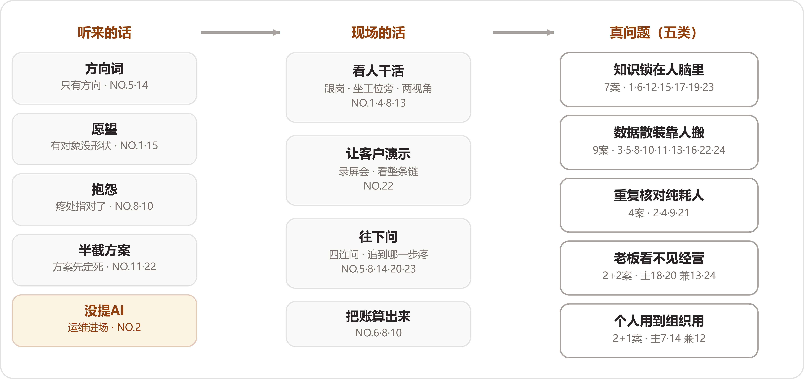
翻译线：进门听到的话分四档，另有一家连话都没说；现场的活全是土办法；真问题收拢成五类。
先把七家留下的客户原话摆在一起。这个摆法本身就值得看一眼——愿意把客户当初那句话原样写进答案的FDE，等于承认整个项目是从那句话起步的：
"我们团队怎么用AI赋能？"
清单外还有两句要记。城市规划研判（NO.4）留下的那条，是领导派活时的口头禅："帮我看看识别下xx区域的潜力用地有哪些？"一句话下去，下面的人要查资料、调数据、做空间分析、跑工具、开会讨论，最后才能形成报告。车管所审材料（NO.2）则连一句与AI有关的话都没有，这家放在下一节单独说。
九句话放在一起，形态当场就能分辨出来：
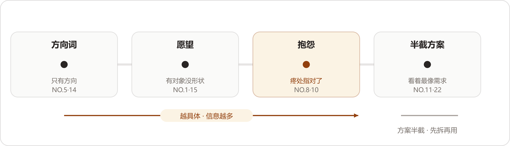
客户第一句话的谱系：从方向词到半截方案，话越具体含的信息越多；看着最像需求的那两家的方案，要先拆掉再用。
为什么客户说不出需求？材料里给了三层原因，各有一家作证。
第一层，企业负责人自己看不见。消防维保数字化（NO.13）里的企业负责人"无法实时掌握一线情况"，"汇报和现场之间，永远隔着一层信息差"。NO.14说得更直白：
"高层不会直接告诉你：'我希望法务少招一个人'，'我希望员工的重复劳动减少'。他只会说：'我们要拥抱AI。'"
第二层，一线习惯了。NO.2里那条人工审核的流程"一直这么运行，所以大家甚至已经习惯了"。习惯了的东西不会被人当成问题说出来，它只是每天发生。
第三层，会议室里问不出来。NO.8的体会是"很多问题，如果只在会议室里问，是问不出来的"，有时候要"直接坐在业务人员旁边，看他实际怎么工作"。
把九句话再读一遍，还有一个反复出现、但我们不敢把它说得太满的次序：越接近抱怨的句子，含的信息越多，顺着挖就有东西；越接近方案的句子，越要先把它里面那半截方案拆掉才用得上。"对账太费人工了"至少指对了疼的地方；NO.5那句话连疼的地方都没指，要从头找起。NO.4给这层意思钉了一颗钉子："如果这些条件都不存在，只是为了'AI First'硬找一个场景，我觉得没有必要。"
所以第一句话的正确用法是当门票：它告诉你门开在哪、谁放你进去。进门之后的地图，要自己画。
进门之后到真问题浮出来之前，二十四家做的事拆开看，工具箱里没有一件高级的工具。看人、开会、录屏、追问，全是土办法；算账的那一路是独门手艺，留到第四节单说。按动作分三种。
看人干活。工业物料采购（NO.8）的做法最有代表性："有时候我会直接坐在业务人员旁边，看他实际怎么工作。"制造业师徒带教（NO.1）连先后顺序都排好了："我进场之后，没有先问'要用什么模型'，先去看他们到底怎么培养新人"。消防维保数字化（NO.13）看的是两层人："我进入现场后，从两个完全不同的视角看到了问题的全貌"——企业负责人看见的是"看不见"，一线维保人员面对的是填表、整理、打印、归档这些纯消耗。城市规划研判（NO.4）看的面最宽：要打交道的大约有10个部门，每个部门有自己的专业工具、业务语义和工作流，他把难点总结成"把业务、数据、空间、工具这四件事情连起来"，外加第五件事——人；不然"AI生成出来的东西看起来很专业，真正的规划师一看就知道不对"。
让客户演示。跨境电商库存补货（NO.22）最典型。客户要的是把SaaS和飞书打通，FDE没有把它当成一个API集成项目接下来：
"我们没有急着开发，连续开了几次会，让客户录屏演示他们实际怎么工作。"
就是在录屏里看到的：物流环节靠拍照识图，员工看照片、填数据；库存靠Excel算补货，数据从聚合SaaS里提取出来，算完填进另一个模板，再生成PDF发给供应商。一句"打通"背后是整条链，"库存只是整条链路上的一个环节"。
往下问。问也有问法。TikTok达人建联（NO.5）没有正面接那个问题，反过来先问了四件事：
"你们现在的业务到底怎么跑？哪个环节最慢？谁每天最累？哪里最容易出错？"
工业物料采购（NO.8）追问的是三件事：到底哪里不好用，平时是怎么操作的，问题发生在哪一步。国企电商子公司（NO.14）把追问列成了纪律——进入业务现场以后继续往下问："做什么？为什么现在要做？哪个环节最痛？这个痛点究竟是人不够、流程不清、数据没有沉淀，还是组织机制的问题？"汽配供应链经营（NO.20）和工程租赁获客报价（NO.23）问的对象最清楚，都先找企业负责人：NO.20"最开始先跟老板聊他到底想解决什么问题"，NO.23的说法是"第一件事其实是先把老板真正想解决的问题搞清楚，再判断这里能不能用AI"。
翻译的产出，是一家一句重新说过的话。NO.8最后把问题定义成"能不能通过改善数据质量和物料查找能力，减少那些原本不应该发生的错误采购和重复采购"——从一句抱怨，到一句业务方和工程师都能接住的话。NO.14的收束更短："先把客户真正的问题找出来，再决定做什么。"
这里要记一个我们的保留："翻译"这个词把过程说得太优雅了。它听着像一次安静的转换，实际做起来是时间和人力的堆积——NO.8围绕ERP及其上下游团队"进行了持续数月的深入访谈"；NO.13的一线维保人员，"有些时候，一个表格的填写和整理就能占用半天时间"。案例集里写得轻，真金白银的是驻场的人天。找场景这份工作，自己就先是一个没有合同金额的项目。
这一节收尾要补一个特殊的进门方式。车管所审材料（NO.2）"一开始客户并没有提出一个'AI需求'"——FDE进车管所，原本接的是一个系统运维项目：原来的承建商倒闭了，源代码不完整，文档缺失，系统横跨.NET客户端、安卓端、Web管理多种技术，"很多公司评估以后都不愿意接"。他把这个项目接了下来，回头看，"运维只是我进入业务现场的入口"。驻场期间他注意到一件事：浙江的政务服务数字化程度已经比较高，群众在线上就能办事，但"前台已经数字化了，后台却还有大量工作依赖人工"——群众上传的身份证、营业执照、合同、发票，全是质量五花八门的图片，工作人员一张一张点开，用肉眼判断对不对、全不全。它给翻译线补了一个入口：门未必由客户来开，脏活也能把门打开。接下没人敢接的烂摊子，换来了驻场的位置和看业务的时间。它还提醒了一件事：客户没开口，未必等于没有问题，可能只是习惯把痛感磨掉了，磨到谁都不再当成问题。
把二十四家拆出的真问题按主要病根归位，一案一个主位，收成五类；一案跨两类的，兼症记一笔，不影响主位。先给全图：
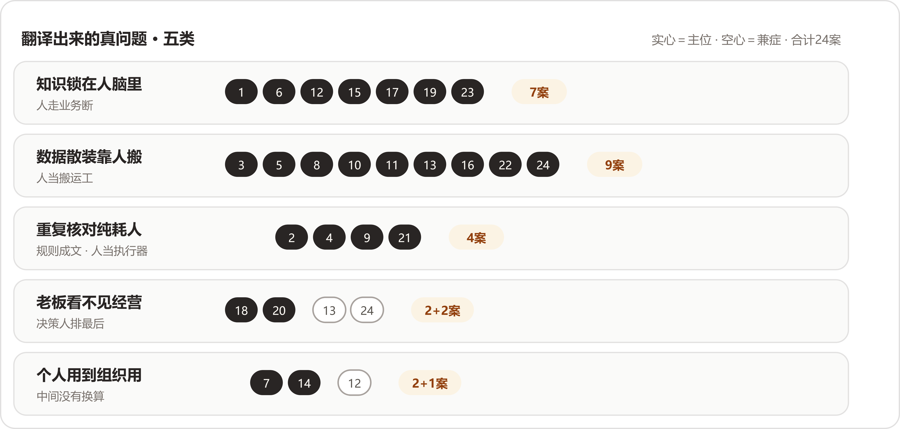
五类真问题与案号分布：实心为主位，空心为兼症；手艺七案、数据九案、规则四案、看不见两案带两兼、组织两案带一兼，合计二十四。
制造业师徒带教（NO.1）、跨境物流装载（NO.6）、鞋服电商素材（NO.12）、本地生活短视频（NO.15）、非标制造报价（NO.17）、消费品包装审核（NO.19）、工程租赁获客报价（NO.23）的主病根都在这里；生物科技上市公司（NO.18）的客户线索问题同源，主位归第四类，这里带一笔。
这一类的开场白出奇地一致，都是同一种假设：某个关键的人不在了，业务会怎样。NO.1的企业"最担心的是，如果人走了，经验会不会也跟着人一起走了"。NO.23的企业负责人"自己有客户，却没有能力把所有客户都接住"。NO.17里"如果某个技术骨干正好在忙，报价卡在那里几天，这个售前节点就可能直接卡死，最后订单流失"。NO.12的素材跟着人走，"一个人离职、换岗，素材也可能跟着断掉"。再往细看，NO.15说的是同一件事的规模化版本："好的内容靠人，规模化生产又离不开人，但人本身就是瓶颈"——他们最高峰的时候，一天要出两三百条文案，会写的人写不了那么多。NO.12补了一句最狠的："企业不可能把整个内容生产体系建立在几个高手身上。"
为什么手艺进不了文档？NO.1的答案是这些经验"很难简单靠一份操作手册完整记录下来"。消费品包装审核（NO.19）说得更细：为什么选这种配方，"可能是过去做了很多次实验之后积累下来的经验"，这些如果没被记录下来，系统里"留下的往往只是一个结果，缺少'为什么这么做'的过程"。系统里存的是结论，值钱的判断理由跟着人走。
这类病还有个不好报价的特点：损失都挂在将来时上。NO.1是"最担心"，NO.23是"原来觉得无所谓的500万，可能明天就真的没有了"——都没有真的发生。带走的判断题只有一道：把关键那个人抽走三个月，业务哪里先停？答得出来的，就是这一类。
律所案件工作台（NO.3）、TikTok达人建联（NO.5）、工业物料采购（NO.8）、线下零售对账（NO.10）、外贸资料整理（NO.11）、消防维保数字化（NO.13）、电信数据分析（NO.16）、跨境电商库存补货（NO.22）、澳洲乳企动销（NO.24）——最大的一类。
这一类最容易被人误解成企业数字化基础差，恰恰对不上。NO.22的客户有现成的多平台聚合SaaS，各平台的库存自动汇总进去；NO.16的客户手里有大量网络数据，还配着数据分析师；NO.8的客户有ERP，十五个团队围着它转。数据都在，散着。NO.22给这类病留了最准的一句话："数据已经产生了，人还在充当那个'数据搬运工'。"
散的位置各有各的。NO.13散在介质之间：检查记录在纸质表格里，维修记录在Excel里，客户信息在某个人的微信聊天记录里，设备档案散落在不同文件夹。NO.5散在系统之间：TikTok上有一部分，Excel里有一部分，财务系统里还有一部分，企业负责人想弄清一个达人从建联到最终产生交易额经历了什么，并不容易。NO.3散在案卷里：一个商事案件动辄数十种材料、总页数上千页，全靠律师逐一阅读、标注、归类，而且诉讼周期一长，"每次重新进入案件都要花费大量时间恢复记忆"。NO.24散在两家公司之间：总部和经销商靠Excel、邮件来回传数据，中间还要过语言转换，"看似只是传递数据，但实际上每一步都会产生损耗"——滞后、失真、人工成本，三样全占。NO.16散得最隐蔽：数据都在，分析师也在，但每个新问题都要人重新写一遍SQL去接一次线。
机理是同一个：系统按部门、按用途、按年份分期建成，没有人负责把它们连起来，连接的活落在具体的人身上。NO.8还给这类病装了一个加速器：员工找不到物料，以为库里没有，重新录一条，数据多一份重复，下一个人更难找——找不到、重录、更脏、更找不到，一路通到买错买重。NO.8留给这一类的那句原话值得记下来：
"我明明知道这个部件数据库里有，我上次还用过，但现在就是找不到。"
现场只要问一句：这个数从哪来？要问过三个人才落到出处的，就是这一类。
车管所审材料（NO.2）、城市规划研判（NO.4）、央国企财务流程（NO.9）、建筑消防施工图（NO.21）。
这一类的活有个共同点：规则成文，对错可判，人在里面出的主要是体力和眼力。NO.2的三个特征说得最完整——慢、累、量上不去：单件业务从头到尾审核下来大概要15分钟；这种工作"谈不上复杂，只是高度重复"，有工作人员直接反馈"眼睛都受不了"；快递企业驻点承接寄递，业务量上不去，这项服务本身就面临经营压力。建筑消防施工图（NO.21）是绘制和核对的对比：同一栋楼里几十个功能相似的空间，每个都要重复类似的布置流程，"设计人员的大量精力消耗在执行重复规则上"，而且"这个核对过程往往比绘制本身更耗时"。央国企财务流程（NO.9）是判断和录入的循环：一笔报销要判断费用性质、项目归属，还要去找出差申请、审批记录、所属部门，这些信息"分散在不同的业务流程里"，业务量上来以后，财务人员大量时间花在重复判断和录入上。
NO.4是这类里最容易被忽视的一家，因为它的活顶着"专业"的名义。领导一句"帮我看看识别下xx区域的潜力用地有哪些？"，最值得先接过来的，是规划师每天反复做、规则相对明确、数据能够追溯的那部分工作。专业的外壳下面，大部分是规则执行。
NO.9还有一层独有的东西：被浪费的是谁。他们服务的科研央企里有大量科研人员，甚至是博士，"真正应该投入的是科研工作，但大量时间被消耗在一个报销流程里"；NO.9的原话是"让高价值的人去做低价值、重复性的流程工作，本身就是一种浪费"。同样的病，落在博士身上和落在普通职员身上，代价差着一个量级。
判断题：这个环节的规则，写不写得成一本手册？写得成、又天天靠人执行的，就是它。这一类也是二十四家里最早被机器接走的一类，接的过程放在第三问里细说。
主位是汽配供应链经营（NO.20）和生物科技上市公司（NO.18）；消防维保数字化（NO.13）和澳洲乳企动销（NO.24）的主病根在第二类，"看不见"是数据病长出来的并发症。
共同形状：必须做决定的那个人，结构性地排在信息链的最后一节。NO.20最典型——ERP里订单、生产任务、采购、库存、发货的数据都有，"但并没有真正形成老板需要的'经营视角'"，企业负责人每天要处理的事情太多，不可能逐条核对，"很多时候只能问下面的人"。NO.18是时间上的断：客户、订单、绩效的数据没有统一基础，提成靠Excel人工统计，"数据延迟1个月以上是常态"。NO.13是层级上的断：企业负责人只能靠周期性的汇报了解业务。NO.24断得最彻底："货发出去，过了国境就断了"——总部看得见发货，看不见动销，而"Sell Through更能反映真实市场需求、营销投入效果和消费者反馈，但在跨境场景下，这类数据往往最难获得"。
值得多看一眼的是，这四家的数据多数都在场。NO.20明说ERP里什么都有，缺的是把它们对到一起的那道工序；NO.24的数据在经销商手里，缺的是按时按口径送回来的那条路。NO.24还点出了口径这一层：总部问"销售情况怎么样"，"有人理解为卖给经销商多少，有人理解为消费者购买多少"——数据送到了，意思还可能对不上。
这类病最隐蔽的地方在于，疼的人没有流程里的痛感。企业负责人的疼是忙、是心里没底，报表上显不出来，所以也很少有人拿它立项。判断题：企业负责人最想知道的那个数，多久能到他桌上？答案是下个月、或者得去问人的，就是它。
主位是基金公司研发转型（NO.7）和国企电商子公司（NO.14）；鞋服电商素材（NO.12）的兼症记在这里。
先说一个读的时候没料到的观察：这是五类里唯一没有"过去"的一类。前面四类的病，二十年前就在；这一类的病，是工具进步本身造出来的——个人先用上了AI，公司层面反而多出一截够不着的东西。
NO.7是标准样本。这家基金公司的研发团队，在FDE接触之前"其实已经在用AI了，而且有些人用得还挺深"，有人用Codex，有人用Claude Code，问题被一句总结点破：
"大家都会用，但企业很难让大家一起用。"
个人的理由也很硬："我用这个工具效率高，你让我换另一个，我反而不会干活。"而管理层要的，是AI"能够成为一种组织能力，而不再只是散落在员工电脑里的个人工具"。NO.12的兼症是同一个走向：每个人自己开AI账号、自己写提示词，"看起来大家都'用上AI了'，实际上只是把一个新工具塞进了旧流程里"。
NO.14在这条线的更远处。它的员工还没怎么用上AI，管理层就直接要组织能力："既然公司的数字化建设在国企中已经领先，能不能再往AI走一步？"拆出来的真问题两句话说完：业务在增长，国企有编制限制，人员不能跟着业务无限增加，真正懂电商的人才又不一定愿意进国企；合规要求严，法务团队只有两个人，却要面对不同业务线、不同合作伙伴的大量合同。
三家摆成一条坡度：NO.12个人都在用、各用各的；NO.7个人用得深、统一反而遇到阻力；NO.14个人还没怎么用，管理层直接要能力。坡的尽头是同一句问话：忙了半天，公司手里落下了什么？机理也清楚：个人效率和组织能力之间没有自动换算，工具越好用，个人越有理由守住自己那套习惯，公司的流程反而越插不进手。判断题：让团队各自报一下在用的工具。答案五花八门、谁也不肯换的，是NO.7那种；答案整齐的，接着往下查编制和内控，是NO.14那种。
五类收纳归位了二十四家，但还有五件事情，分类装不下。它们是五家各自多走的半步，值得一家一句单说。
跨境物流装载（NO.6）把场景定义成了一本经济账。很多人看这个项目，会以为它只是一个装箱问题，算算怎么摆能多装就行。NO.6进场后先算的却是钱：跨境运输的运费按"方"计算，一辆约110方的货车，老师傅靠经验通常能装到95～98方，而98方是保本线，每超过保本线一方，能多收100美元运费。这本账算完，场景自己站住了：
"装载率不是技术指标，是利润开关：装不满98方就亏，装得越满、越过保本线越多，赚得越多。"
别的家还在找疼处，这家直接把疼换算成了单价：问题从空间利用率不高，挪到了每一方没装满的空间都是钱，评审的时候谁都驳不倒。
线下零售对账（NO.10）把价值的方向翻了个面。这个案子进场时听上去最不值得做：对账太费人工了，一个周期一两个人天，省也省不出多少。往下翻却翻出了收入：
"过去总部甚至会给门店设一个'容忍区间'，因为大家都知道人工对账太麻烦，如果差异在一定比例以内，就干脆不再追了。"
机器接管核对之后，容忍区间里的差异重新变成能追的钱，NO.10的原话是"真正让我觉得这个问题值得做的，是我们后来发现：它除了省人工，还可能直接影响收入"。同一个场景，从成本项翻成了收入项，值不值得做，答案完全两样。
外贸资料整理（NO.11）把信任列成了问题。这家企业负责人的需求单看着具体：一句话找模板、看阿里国际站数据、给网站发文章、产品图自动进海报模板。FDE拆下去，前两个真问题是数字资产没组织起来、企业缺AI能跑起来的环境，第三个反而被点成了最重要的：
"第三个问题反而最重要，就是信任。"
企业负责人听过AI概念，甚至知道Agent是什么，但不知道这些东西跟自己每天遇到的问题有什么关系。把信不信这件事当成问题来管理，二十四家里只此一家——别家的问题清单里全是业务，这一家把开场的第一道关也算了进去："你不能说今天买一个大模型账号，明天企业就AI化了。"
电信数据分析（NO.16）要的东西都有，缺的是组合。客户有数据、有分析师、也有AI工具，三样全在场。NO.16的判断把这些家底一语概括：
"客户已经有数据、有分析师，也有很多AI工具，但这些东西还没有真正组合成一个可靠的业务流程。"
它说明第二类的病根查起来，不能停在问数据有没有，要问下一环节拿不拿得到；再往深一层，还要问已有的东西串没串成流程。真问题有时候一件东西都不用添，全靠重排。
生物科技上市公司（NO.18）是反向案例：场景筛出来了，家底没准备好。这一家的前半程走得又快又标准——"通过4维模型帮他们筛选出了价值最高的几个场景做先行试点，销售部门是第一个选中的"，理由也现成，"销售离收入最近、痛点也最集中"。按翻译线的说法，这一步走得很漂亮。但拆下去，问题挪了地方："管理层想看清销售大盘，但当时客户、订单、绩效这些数据，并没有形成一个统一的基础"，结论摆得很清楚：
"企业已经产生了AI转型的需求，但销售的数据、系统、人才和认知还没有准备好。"
它给这一问的结论补了后半句：场景为真、地基为虚，照样开不了工。翻译的产出除了真问题，还附一张地基的体检单，NO.11说的环境、NO.18说的数据和认知，都在这张单子上。
把二十四家的进场动作合起来，找场景可以被编成五步。前三步走翻译线，第四步对号，第五步上保险：
五类自查清单，每类一道现场判断题：
| 真问题 | 现场判断题 | 案号 |
|---|---|---|
| 知识锁在人脑里 | 把关键那个人抽走三个月，业务哪里先停？ | NO.1／6／12／15／17／19／23 |
| 数据散装靠人搬 | 这个数从哪来，要问过几个人才问得清？ | NO.3／5／8／10／11／13／16／22／24 |
| 重复核对纯耗人 | 这套规则写不写得成手册？是不是天天靠人执行？ | NO.2／4／9／21 |
| 企业负责人看不见经营 | 企业负责人最想要的那个数，多久能到他桌上？ | NO.18／20（兼：NO.13／24） |
| 个人会用，公司用不上 | 让各人报一下在用的工具，谁肯换？ | NO.7／14（兼：NO.12） |
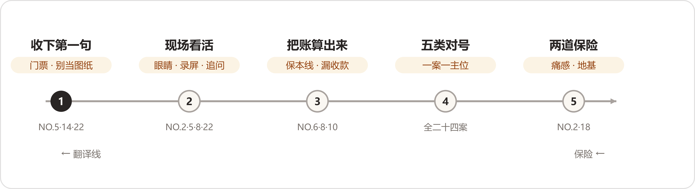
找场景五步：前三步走翻译线，第四步对号，第五步上两道保险。
读这一问下来，我们最大的收获是把找场景从一件靠灵感的事，看成了一件有动作、有判断题、有清单的手艺活。二十四家里进场动作最扎实的那几家——NO.8的数月访谈、NO.22的录屏会、NO.6的经济账——拆出的问题也最立得住。反过来看，客户第一句话里最像需求的那几句，恰恰要先拆掉再用。
"很多时候，真正的需求并不会自己跳出来。你得先进入现场，看业务是怎么跑的，看人在做什么，看哪个环节每天重复发生，再去判断这里有没有值得被AI重新改造的地方。"
这一问读下来，最先站出来的是一个姿态问题。问的是“过去是怎么解决的”，二十四份答案本可以把它答成一场对旧世界的控诉——FDE进场之前的烂摊子，正好拿来抬高现在的东西。没有一家这么写。逐家数过去，二十四份里有二十二份，把“能够运行”“有它的合理性”“并没有错”这类话直接写进了答案，连给得最勉强的那家也给了“勉强可以维持”；剩下两份在平静地记录过去的做法，没有一句贬低。这一问是六问里姿态最齐的一问，齐在替过去说话。
替过去说话，因为过去经得起替它说话。把二十二句好话连起来读，一个总判断自己站了出来：
旧解法没有错。它们在原来的规模里是合身的；撑破它们的是规模和复杂度；AI接手的，是从合身解法里溢出来的那一部分。
师徒制带得动两三个月一批的新人，只要老师傅还在、还有时间；企业负责人亲自报价谈得下大客户，只要订单还集中在少数几个身上。旧解法跑不动的那一天，压垮它的东西几乎全部落在业务侧——量涨了，材料变样了，懂行的人要退了。这些“过去”可以按企业为这件事走到过的地步分成四层：
阶梯从下往上，旧解法里“系统”的分量一层比一层重。走到第四层的顶上，“再买一套工具”这条路也就走到了头——顶上溢出来的部分，就是AI接下来要接的。
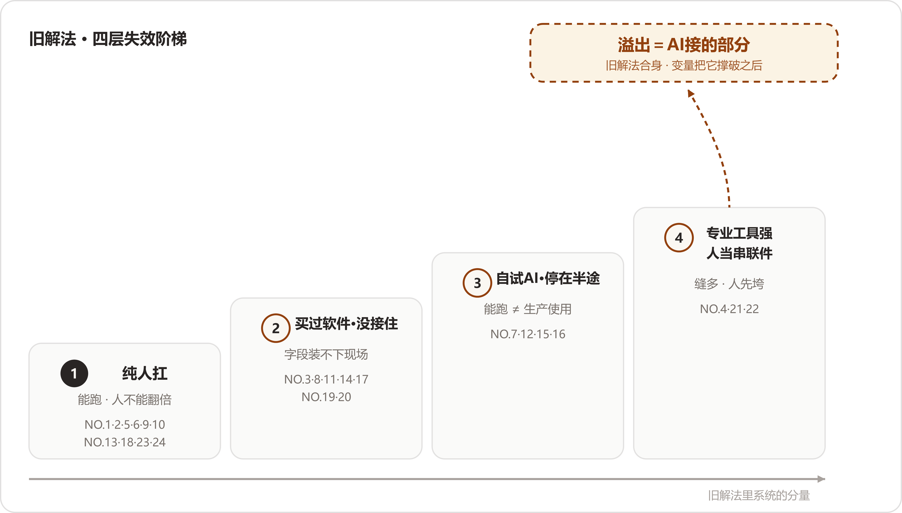
四层失效阶梯：从纯人扛到专业工具强、人当串联件，越往上系统的分量越重；顶部标出的，是从合身解法里溢出、由AI接手的那部分。
这一篇按一份辩护词的顺序走：先替旧解法立传，再请四层证人上阶梯，然后查压垮它们的变量，最后单说两个旧解法没有失效的特例。
立传之前，先把传主的群像记下来。二十四家的“过去”各是什么样子，一行一家：
把清单读一遍的感受：这些办法一点都不含糊。它们多数已经运行了很多年，运行得有章法，好话也一句句写在了答案里——
“过去这套方式其实完全可以运行。”
“所以传统方式其实有它存在的合理性：专业人员掌握规则，专业工具保证计算精度，人的经验负责最终判断。”
“其实过去这种方式完全可以运行，而且在业务增长期甚至是比较合理的。”
“所以，过去的方法本身并没有错，问题在于业务复杂度超过了人工方式的承载能力。”
“制造业里的很多经验，本来就是在长期实践中形成的，老师傅不仅知道标准答案，还知道什么时候不能机械地照标准答案执行，所以过去依靠师徒制，其实是一种非常自然的知识传递方式。”
为什么姿态这么齐？我们的读法有两层。浅的一层是分寸：旧解法里坐着具体的人——老师傅、财务、企业负责人本人，他们明天还要接着干活，进门先数落他们的办法，后面的合作就难了。深的一层是准确：这些办法确实运行了很长时间，多数到FDE进场那天还在运行。替旧解法说话，先把话说对了，然后才谈得上礼貌。
把两个最“原始”的摆在一起看最有意思。制造业师徒带教（NO.1）和工程租赁获客报价（NO.23），一个是行业里最老的传授办法，一个是企业里最原始的定价办法，两案的FDE分别给了它们“非常自然的知识传递方式”和“最有效率的方式”两个评语。旧解法干的往往正是难的那部分活：师徒制传的是“什么时候不能机械地照标准答案执行”，企业负责人报价背的是价格不透明、金额大、因素复杂的判断。这些活当初只有人做得来，旧解法等于先把难题接了下来。
立传还有一层实用价值：传立完了，哪些东西动不得也就清楚了。城市规划研判（NO.4）把这层意思直接说了出来——
“因此我们做AI改造的时候，没打算把传统流程推翻。我的思路反而是，原来正确的东西尽量留下，把机器更擅长的部分接过去。”
传立完了，该查失效。二十四家按“企业为这件事走到过哪一步”归位：没动过系统的进第一层，买过软件的进第二层，自己上过AI的进第三层，专业工具齐全的进第四层。有几家跨层——生物科技上市公司（NO.18）有老旧的ERP和OA，消防维保数字化（NO.13）引入过监控平台，澳洲乳企动销（NO.24）上过BI，跨境物流装载（NO.6）的行业试过装载类数字化工具——都按主病根归位，另一层的旧账在下文带一笔。
十家：NO.1、2、5、6、9、10、13、18、23、24。
这一层的失效方式高度一致：每一单都占一个人，业务翻倍，人就得翻倍。央国企财务流程（NO.9）把整层的失效方式一句话说完——
“业务量增加一倍，就增加一倍的财务人员，这条路很难走得通。”
财务的活分两段，前面要有人判断，后面要有人执行：一张发票过来，要结合出差申请、部门、项目判断这笔钱怎么记；判断完还要打开集团网站，创建单据，一行一行填了再提交。判断时间加执行时间，两段都长在人身上。
“一个运营每天维护几十个达人，自己记得住谁聊到哪一步、谁收了样品、谁还没有拍视频，再配合飞书和Excel，业务就能够正常运转。”
撑破它的是复杂度：选品池从几百个商品变成上万个，运营不可能再靠经验一个个匹配；达人多了，不可能每天人工翻Excel找谁要催；数据散在不同系统里，管理者看不到整个业务漏斗。这家的收束语把整层的分界画得最清楚：旧解法管的是业务能不能跑起来，规模上来以后还能不能高效地跑，要另想办法。
读这一层最容易犯的错，是把“纯人扛”读成“落后”。读下来的感受正相反：这十家扛得有章法——运营记得住几十个达人的进度，财务知道每笔钱进哪个科目，老师傅清楚哪种工艺大概多少成本。人扛的办法本身没有毛病，毛病在业务的量翻上来之后，人这种容器有上限。
七家：NO.3、8、11、14、17、19、20。另有四笔外账：NO.6的行业试过装载类工具，NO.13试过监控平台，NO.18守着老旧的ERP和OA，NO.24上过BI。
“这类系统擅长的是‘你把字段填进去，我按规则往下跑’，最难的第一步，也就是把客户五花八门的输入理解成标准数据，始终没人解决。所以系统最后只能覆盖标准件和固定SKU，非标部分照样回到人，模板反而多填一遍表。”
一句“模板反而多填一遍表”，把买软件买成负担的滋味写到了极处：系统接走了标准件，接不住非标；非标还得人来，人反而多了一道填表的活。
“但问题在于，这些工具只能处理已经结构化的数据，而海外经销商的原始数据恰恰是非结构化的。工具上线后，数据清洗和整理仍然靠人工，系统只是换了一个地方看Excel。”
这家还有一句更尖锐的：
“BI解决的是把数画成图，解决不了两个市场口径不一样——把两份不可比的数据画成漂亮的图，只是让不可比这件事更隐蔽了。企业花了钱，但没有解决核心问题。”
“企业遇到个性化问题以后，后续没有人继续陪他往下走，也没有人告诉他这个工具怎么和自己公司的工作方式结合。”
这家的碎需求多到写不成需求文档：
“更关键的是，很多问题甚至没有清晰到可以直接写成需求文档。老板知道‘这里不太顺’，但他自己都不知道应该开发什么。”
有个例子很形象：客户给来一个类似三角尺的产品，上面一排不规则的刻度；找过美工，做过3D打样，一直没搞清那排刻度是什么，准备人工照着抄，又抄不准。这一单后来怎么解开的，效果那一问再算账。
“但这些工具解决的只是‘查’和‘生成’两个单点动作。真实案件是持续变化的，律师需要反复回到同一个案件，补充分析、更新判断。”
每个工具只解决一个单点问题，律师在五六个系统之间切换，案件上下文被割裂；工具的使用门槛又和律师自然的工作方式有断层，要学特定的检索语法。最终，大部分工具沦为查法条的辅助手段。
“所以这笔账，不能算在一线员工头上，先顶不住的是那套搜索系统。”
原文接下去一句：“于是数字化的工具本身成了新的瓶颈。”
“但它有一个天然的限制：系统记录的是结果，人负责输入信息。”
“只要信息需要人主动输入，就一定会发生损耗。”
消费品业务偏偏有大量非结构化的信息，表单装不下；SKU增加之后，待审核的包装堆起来排队。这家给旧SaaS的结论只有一句：“过去的SaaS解决的是上一阶段的问题。”
“于是就出现了一个很典型的情况：数据都有，但老板还是看不清。”
“这套方式过去完全能跑通，但它的前提是软件行业几十年的最佳实践，能被信息化覆盖的业务部分，是能被讲清楚、流程相对固定。”
而企业知识大量没有被讲清楚——法务审过很多合同，留下的只有一份修改后的合同，为什么这么改、哪些条款关键，都在法务脑子里；客服在脑子里形成了一套知识体系，没有落进AI能用的数据系统。
“很多企业知识根本没有被沉淀，被结构化。”
这一层最值得研究，因为七家用行动证明了自己不保守：钱花过，决定做过，买的动作在当时都是理性的。接不住的位置倒出奇地一致——工具要的是能填进字段的东西，现场长的偏偏是装不进字段的：五花八门的图纸（NO.17）、名称各异的物料（NO.8）、口径不一的海外报表（NO.24）、写不成需求文档的碎需求（NO.11）、没人讲得清的企业知识（NO.14）。买软件的钱，断在了结构化的门口。
NO.17的模板和NO.24的BI是同一件事的两种样子：钱都花在了下游——按规则跑、把数画成图；卡都卡在了上游——输入五花八门、口径不可比。NO.11的5万元断在同一个门口，只是断法多了一层人情：标准化产品交完就走，“没有人继续陪他往下走”。
所以见到“买过系统没用起来”的企业，先不要急着下“不重视数字化”的结论，先问断在哪里。断在结构化门口的企业，恰恰是AI最对口的客户——大模型接的正是这一段。
四家：NO.7、12、15、16。
这是四层里最少人注意的一层，也是读起来最感慨的一层——这四家不等谁来推，自己先动了手。他们的半成品，等于替所有企业先试了一遍错。
“客户自己做的Agent，可能就是给模型一个提示词：‘你现在是一个数据分析师，我给你这些数据，请帮我分析。’”
看起来合理，跑起来结果不满意，底层模型很好也一样。这一层的题眼也出自这家：
“‘能跑起来’和‘可以生产使用’，是完全两回事。”
客户里有人把问题归结成大模型本来就不确定、答案不一样很正常。这家的FDE不认：
“如果我是一个企业老板，我问一个Agent两遍‘我们公司哪个班的成绩最好’，我希望它在数据没有变化的情况下告诉我同一个人。模型本身具有随机性，不代表我们做出来的业务系统就必须是不稳定的。”
“以前是‘人做图’，后来变成了‘人盯着AI做图’，人还得自己反复调整。更麻烦的是，这种方式会把人的差异继续放大。同样一套工具，不同的人用出来，结果完全不同。所以从企业角度看，这依然谈不上稳定的生产能力。”
“我后来在项目里发现，AI味其实很大程度上来自一种‘固定范式’：给AI一套固定模板，让它不断模仿。这样做在单个案例里可能有效，但当面对不同商户、不同题材、不同场景时，就容易机械地重复。”
“这也是我后来越来越明显的一个感受：AI真正进入企业之后，很多时候改变的不只是工具，还有工具背后的工作方式。”
四家的半途形态摆成一排，恰好是一组“个人用AI”的失效标本：个人在用、组织没用上（NO.7）；人在盯AI、差异被放大（NO.12）；模板在跑、味道不对（NO.15）；Demo能演示、生产不敢用（NO.16）。四种形态指向同一处——AI工具买得到、装得上、跑得起来，把“跑得起来”变成“敢在生产上用”的那门手艺，市面上买不到。
把NO.16和NO.12对照着看最有意思：一个败在系统的不稳定，问两遍给两个答案；一个败在产出的不稳定，一套工具不同人用出不同结果。两家要的都是稳定，半途的AI给不出来的也都是稳定。NO.16把要做的这件事说成了自己的任务：
“所以我们真正需要解决的，是怎么设计一个系统，让模型能够在业务流程里被可靠地使用。”
这一层的存在，还顺带校正了一个流行说法——“企业不用AI是因为抵触”。至少这四家不抵触，自己就试过。真正的断层在试完之后：试完停在半途，往前那一步需要的手艺，正是FDE这个角色的职责范围。
三家：NO.4、21、22。
先摆一个会颠覆直觉的事实：被人当串联件卡得最死的三家，恰恰是全卷数字化程度最高的三家。城市规划研判（NO.4）的原话可以直接作证：
“其实规划设计院原来的数字化程度并不低。他们不缺软件，使用的专业软件反而非常复杂。规划师本身也是典型的高数字素养人群。”
“这也说明，规划院的数字化工具其实一直在，只是它们解决的是单个环节的计算精度，没有一个角色把业务、数据、空间和工具真正连接起来，于是跨部门、跨工具的流程依旧靠人来串联。”
“但这些工具通常只解决单点问题（如自动计算间距），无法覆盖从图纸理解到成果输出的完整流程。设计人员仍然需要在多个工具之间切换，实际效率提升有限。”
“工作人员先把数据从一个系统里扒下来，填进Excel；Excel算完，又誊到另一个模板；物流照片到了，再一张张人工看；广告又在另外的平台上跑。”
“每件事单独看都不重，可一旦连成一串，就是一条非常长的人工链路。”
SKU涨到几千个，人一天的时间大量耗在“看、抄、填、核对”上。这一问开篇那句被反复引用的话，就是这家的：
“最累的，是那个在各个工具之间来回搬数据的人。”
三家摆在一起，“数字化程度低才需要AI”这句流行话就站不住了。每一段工具都强，工具之间的缝全归人；缝多了，人先垮。AI在这层的角色因此也清楚：它来顶的是“串联件”这个位置，专业工具一个都不用换——城市规划研判（NO.4）后来的做法正是让AI去调度专业工具，计算仍留给工具。
把第一层和第四层对照着看，还能看出一件事：从什么系统都没有，到什么专业工具都有，卡人的位置换了模样，卡法没有变过——第一层卡在“人不能翻倍”，第四层卡在“缝不能翻倍”；两层中间隔着的所有投资，都没有碰过“串联”这个动作本身。判断一家工具齐全的企业要不要AI，别看它缺什么工具，看它的缝：谁在工具之间来回跑，跑的量在涨还是在跌。涨，溢出就已经发生了。
四层证人都上完了，该查真正的凶手。把二十四段收束语摆在一起，压垮旧解法的东西自己浮出来，翻来覆去就三样：量涨了，材料变形了，懂行的人不在了。给它们正式的名字：规模、非结构化、经验不可复制。三样各管一头——数量、形状、载体。
这一根的证据几乎不用挑，每一段收束语里都有它：央国企财务流程（NO.9）的业务量增加一倍就要增加一倍财务人员；TikTok达人建联（NO.5）的选品池从几百个变成上万个；跨境电商库存补货（NO.22）的SKU从几十几百涨到几千；非标制造报价（NO.17）的订单越来越多、非标需求越来越多，人的处理能力不会同比增长，售前链路排队；鞋服电商素材（NO.12）的SKU、图片、视频越来越多，内容产能和人力数量绑在一起；线下零售对账（NO.10）的门店数量增加，每个周期重复核对；本地生活短视频（NO.15）的客户数量多起来；消费品包装审核（NO.19）的SKU增加，待审核包装堆积；建筑消防施工图（NO.21）的项目集中到来；跨境物流装载（NO.6）的跨境贸易规模增加；澳洲乳企动销（NO.24）的业务规模扩大；生物科技上市公司（NO.18）的管理层从算清提成要看实时趋势。
规模的残忍在于它不破坏任何一环，只把每一环都乘以一个倍数；人恰恰是链条里唯一乘不动的那一环。非标制造报价（NO.17）把它写成了那家要解的新问题：
“所以我们真正想解决的，是一个新问题：当业务规模继续扩大时，能不能不再靠增加更多人、更多老师傅来撑住报价能力。”
判断这一根到了没到，就看一句：业务再翻一倍，人怎么办？答“再招一批人”的，还没到；答不上来的，到了。
第二层七家断在结构化门口的账，全记在这一根名下：非标制造报价（NO.17）最难的第一步，是把客户五花八门的输入理解成标准数据；工业物料采购（NO.8）的同一物料有不同名称、描述、单位、录入习惯；消费品包装审核（NO.19）有大量表单装不下的信息；外贸资料整理（NO.11）的碎需求写不成需求文档；消防维保数字化（NO.13）的顾虑也在这一根上——“很多外部方案功能列表看起来很完善，但没有真正理解企业现场的监管流程和实际执行方式”；律所案件工作台（NO.3）的案件上下文在五六个系统之间被割裂，也是材料的形状和工具的形状对不上。澳洲乳企动销（NO.24）给这一根留了最具体的一笔：
“字段名称不统一、销售单位不一致、促销活动规则不同、买赠、返利等业务信息难以结构化。”
有些数据来自Excel，有些来自PDF，有些甚至是图片或手写凭证。
非结构化这根稻草专压第二层——买软件的钱花在下游，卡在上游。它还有一个隐蔽之处：企业自己往往说不清它。企业负责人只知道“这里不太顺”（NO.11），要把它说成需求，得先把材料翻一遍。第二层的学费单看起来都像“软件不行”，原因就在这里：软件行的部分都行了，不行的只是门口那一段。看到一家企业说“我们上过系统，没用”，先看它系统的入口收什么。收字段、收表单的，非结构化材料堵在门口；堵住的那段，正是大模型的活。
这一根的原始判词出自跨境物流装载（NO.6）：“首先，经验无法复制。”一个优秀装车工人的经验需要多年积累，新人很难快速掌握。往后数：制造业师徒带教（NO.1）的老师傅一端生产任务重没时间带人，一端接近退休；非标制造报价（NO.17）的经验长期握在少数人手里，企业很难把这种能力复制出去；建筑消防施工图（NO.21）培养一个合格的消防设计人员需要较长时间，同类型空间的布置还因人而异；生物科技上市公司（NO.18）的新人靠老带新手把手教，客户关系由销售自己维护；本地生活短视频（NO.15）的经验存在运营脑子里，没写进标准化文档；TikTok达人建联（NO.5）的商务沟通里那些微妙的东西，过去靠经验丰富的BD去判断；国企电商子公司（NO.14）的企业知识没被结构化，留在法务和客服的脑子里。
这根稻草和前两根的分别，在于它带一根时间引信：规模今天不涨它也在走——老师傅在变老，BD在流动，客户关系跟着人走。前两根变量企业看得见，订单多了、报表杂了；这一根要等“那个人”请假、离职、退休才看得见，所以最容易被拖着。问一家企业“这件事谁最懂”，如果答案是一个人名，这一根就已经在位；再看这个人多大、忙不忙、走不走，紧迫程度就出来了。
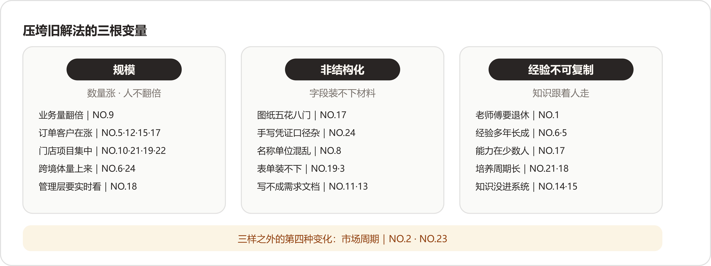
三根变量各管一头：数量、形状、载体；三样之外另有第四种变化——市场周期，只有两位案主，单独立案。
三根稻草很少单独落下。非标制造报价（NO.17）一案三样全占：订单在涨（规模）、图纸五花八门（非结构化）、经验在老师傅脑子里（不可复制）。多数案子的失效都是几根叠上来，这也是旧解法撑破的过程显得缓慢的原因——每根落下时都还能忍，叠够了就到了换法的时候。摆完三样还剩两家对不上号，它们的变量来自市场周期，在阶梯之外，下面单说。
二十四家里有两家，旧解法到FDE进场那天还谈不上被撑破。一家的问题一直存在、痛感从来没到；另一家的旧解法至今还是最优解。它们站在阶梯的两端当界碑。
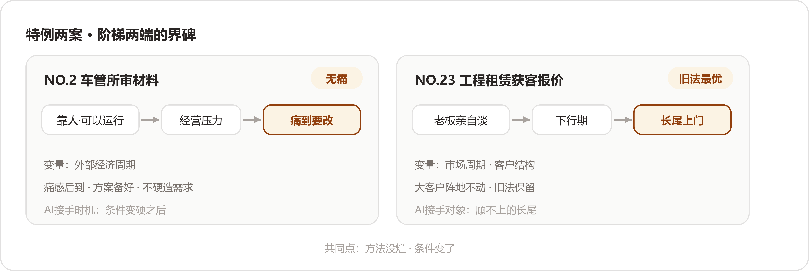
两案的共同点写在图外：方法没有烂，条件变了。
“其实没有特别的解决方案，就是靠人。”
群众把材料上传，工作人员打开图片肉眼审核，再人工处理后面的业务。“这个流程已经运行了很长时间，对车管所来说，它甚至不被认为是一个特别需要解决的问题。”FDE还特意补了一句：这点很重要。今天回头看，会觉得这么明显的重复劳动为什么不自动化；站在当时业务部门的角度——
“我们今天回头看，会觉得‘这么明显的重复劳动，为什么不自动化？’但站在当时业务部门的角度，它是可以运行的。”
FDE第一次提出用视觉技术替代一部分人工审核时，对方没有马上接受，第一反应是：“现在这样不也能干吗，为什么还要再花钱上一套新东西。”变化来自业务条件：经济环境变化，驻点服务企业面临经营压力，要减少人员投入，同时把业务量做上去。“原来‘不够痛’的效率问题，一下子变得现实起来。”这时候，前期准备的方案才真正有了落地机会。
这一案的理论贡献，是这一问里被引用最多的一句：
“很多AI需求一直都在，只是还没有痛到需要改变。”
后半句同样值得抄：
“FDE要做的，是提前看见这个问题，在业务真正需要改变的时候，已经有一个可以验证的方案放在那里，不去强行制造需求。”
这一案回答了读第一层时留下的疑问：企业为什么会一直忍受旧解法？答案在账上——换解法要花钱、要学习、要担风险，旧解法的痛是慢性的、能忍的；两边的账一天不平，企业就一天不动。把企业推过线的是经营条件把账算反的那一天，问题本身没有这个力气。和第一层别家相比：别家是业务自己长大了，从里面把自己撑破；这一家是外面的经济环境把成本线抬上来，从外面挤破了平衡。方向相反，落点相同——人都扛不住了。见到“明显该自动化却在靠人”的企业，先替它算那笔账：痛感每月值多少钱，换法一次性花多少钱、担多少险。账没反之前，方案备着就好；这一案的FDE把这套动作做完了全程。
“其实过去这种方式完全可以运行，而且在业务增长期甚至是比较合理的。”
“因为大客户的价值足够高，老板亲自谈、亲自报价，是最有效率的方式。价格不透明、订单金额大、影响因素复杂，这些事情交给老板判断，反而比做一个复杂系统更靠谱。”
全卷二十四案，把旧解法推到“最有效率”这个最高级的，只有这一家。而且这个评语经得起推敲：大客户报价要的是信任、分寸和对复杂因素的拿捏，做个系统去替代企业负责人，反而更不可靠。旧解法在这块阵地上没有任何毛病。
毛病出在阵地外面。小客户进来，企业负责人同样要把需求、车型、运输成本、人员、油费过一遍再定价；企业负责人在谈大客户，小单就顾不上——“如果企业负责人正在谈一个大客户，这个小订单就只能放掉。”增长期这算不上问题，放弃就是了。下行期来了，企业开始重新重视那些过去没有被充分服务的小客户：
“所以过去的问题，是随着市场环境变化，原来合理的人工分工开始出现了瓶颈。”
“这个时候，原来的模式就出现了矛盾：老板最应该做高价值客户，却被大量低价值、但不能完全放弃的订单占用了精力。”
这家还留了全卷最清醒的一段自我提醒——站在技术视角，很容易得出“做个智能报价系统”的结论，进了业务现场才发现不是：
“但真正进入业务现场以后，你会发现，问题其实是老板的时间应该花在哪里，以及企业有没有能力把老板不应该亲自处理的事情接下来。”
AI在这案的进场方式，全卷独一份：它没有去动旧解法评了“最优”的那块阵地，大客户照旧企业负责人亲自谈；它接的是旧法顾不上的长尾。改造做完，最有效率的那部分一行没改。把NO.23和其他家比，其他家多数在接走人扛不动的部分，这一家接的是企业负责人顾不上的部分——被服务的对象换了，最优的旧解法原地保留。判断一个旧解法该不该动，先看它服务的对象变没变：这家企业负责人的方法没变没坏，变的是客户结构，长尾上门了。方法跟着对象走，对象变了，方法才需要跟着挪。
两案合起来，把这一问的边界画完整了：旧解法的失效未必从企业内部发生，也可以从市场周期那边来。查失效的时候，光在企业内部找规模和非结构化，会漏掉这两种。
线下零售对账（NO.10）在答案里留了三问，是这一问方法论的种子：
“真正应该问的是：原来的方式为什么能够运行？它在哪个节点开始失去效率？AI究竟应该接管哪一部分？”
二十四案读下来，我们把这三问扩成动手前的四问，一问一层，正对着失效阶梯的四层和压垮它的变量：
| 问 | 在问什么 | 锚点（谁家教过） |
|---|---|---|
| 一、现在靠谁扛 | 旧解法的承重墙在哪：哪个人、哪张Excel、哪个岗位 | NO.22 那个搬数据的人；NO.1 老师傅；NO.18 算提成的Excel |
| 二、买过什么、没接住 | 学费交在哪年、断在哪个门口 | NO.17 模板多填一遍表；NO.24 BI换了个地方看Excel；NO.11 五万元标准化服务 |
| 三、自己试到哪儿 | 半途的AI停在哪个形态 | NO.16 自搭Agent；NO.12 人盯着AI做图；NO.15 本地部署DeepSeek；NO.7 个人提效 |
| 四、什么变量变了 | 规模、非结构化、经验不可复制，还是市场周期 | NO.9 业务量翻倍；NO.24 手写凭证；NO.6 经验无法复制；NO.2、NO.23 周期 |
四问答完，溢出的位置自己浮出来：问一指出溢出的出口（扛活的人在哪儿），问二画出工具的边界（接不住的门口在哪儿），问三标出别人停下的地方（半途的形态是什么），问四给出撑破的方向（变量在哪头使劲）。四问合起来，就是NO.10那三问的展开——为什么能运行、在哪个节点失去效率、AI该接哪一部分。
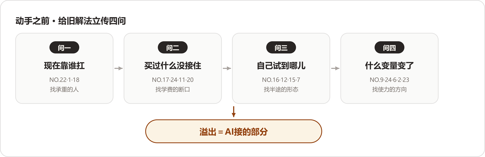
四问对着四层：问一问第一层，问二问第二层，问三问第三层，问四问变量与周期；四问走完，AI该站的位置自己出现。
照实记一个读时的保留：这些替旧解法说出来的好话，我们没有办法逐条核实。“完全可以运行”运行了多少年、运行中出过多少错、忍过多少返工，多数答案没有给数；只有NO.11报出了一个约5万元的数字，其余各家买系统、上SaaS的学费多半没有细账。传记的这一部分，受访者讲的是自己客户的过去，读的时候值得留一分。这也提醒用这份材料的人：四问里的第二问，往往要自己进场翻账才问得出来——答案里现成的很少。
最后把TikTok达人建联（NO.5）的收束语抄来收尾。这一篇从立传写到验尸，它一句话兜了底：
“我的理解是，过去这套方式解决的是‘业务能不能跑’的问题，而AI要解决的是‘业务规模起来以后还能不能高效地跑’的问题。”
这是六问里篇幅最长的一问。二十四份答案连着读完，先把结论放在最前面：
没有一份方案是先设计好再执行的。
二十四家，从车管所到律所，从装车的到画消防图的，做事的骨架是同一副——
方案都是顺着这副骨架、被现场一处处逼出来的，没有一份是先画好图纸再照着做的。为什么二十四个不同行业的人会走出同一副骨架？读下来我们的解释是：AI落地的难点长在业务侧，而业务侧的难——人、流程、数据——家家是同构的；技术上千差万别，难处倒都出在同一批地方。
有一个旁证：技术选型在多数答案里排在很靠后的位置，一两句带过；篇幅写得多的那些答案，从头到尾都是业务。
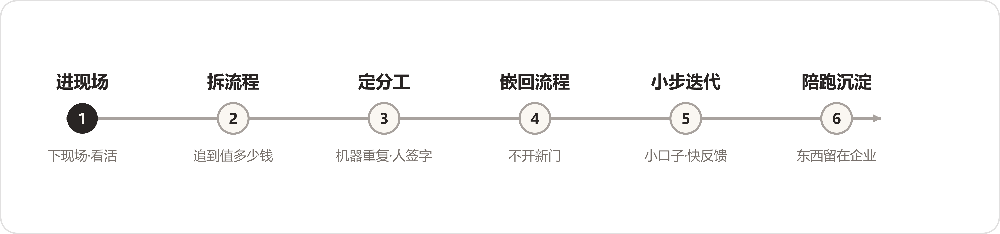
六步骨架总览：没有一份方案是先设计好再执行的，二十四家都踩在这条路上。
下面按这六步走一遍：每一步先说多数派怎么做，再说分歧在哪里；少数独门的做法，单独记一笔。
这一步给我们最大的触动是：二十四家没有一家抱怨"客户说不清需求"。说不清在他们那里不构成障碍，它就是起点——FDE这个角色的本职，就是把说不清的东西变清楚。
为什么会这样？想明白之后觉得平常：会议室和工位是两个世界。人在会议室里会不自觉地把工作"整理"过再说，说出来的已经是表演版；工位上的活才是原版。NO.9那句话是证据——"做了十几年，很多判断已经成为了下意识动作"，连本人都不知道自己在做判断，访谈又怎么问得出来。所以"不信访谈信眼睛"背后有一个更硬的理由：说出来的工作和真实的工作，是两份材料。
多数派的做法出奇地一致，而且理由相通：
"直接跟着员工走一遍他每天的工作流程，看他一天具体在做什么、在哪里停下来、哪里需要问别人、哪些问题不断重复出现。"
分派的地方在跟什么：多数案例跟的是人，城市规划研判（NO.4）跟的是行业。第一步"先把自己逼成'半个规划师'"，到不同部门去聊，把指标、空间计算、业务流程一点点搞清楚——
"这一步看起来不像'做AI'，但我觉得恰恰是FDE最核心的工作。"
独门两招：
这一步的题眼是NO.9那四个字：下意识动作。做了十几年的判断长在手上，不长在嘴上，访谈问不出来，眼睛看得见。工程师的本能是先要一份需求文档，这二十四家全反了过来——他们并非不想问，只是问了也没有用。
跟岗还有一笔账可算：它看起来是最贵的进场方式，按人天守在现场，不如发问卷来得高效；但要是按"照着错误需求开发一轮"的代价来算，它反而最便宜——NO.1从访谈换成跟岗，省下来的就是后面的返工。NO.4补的是另一头：光看动作不够。它家业务的专业壁垒最高，术语听不懂就跟不上话，所以逼着自己当"半个规划师"。NO.19那招更妙：顾问本人待在群里，业务人员会拘谨；换一个不说话的Agent进去，看到的才是日常。观察者自己也是个变量，这家算是用土办法把它解了。
"两种东西"是我们读完二十四份答案之后自己归纳的分法，原文没有这个说法。有意思的主要是第二种：好几家的"AI方案"，前半段干的根本与AI无关，全在补课——读之前没想到，拆流程会拆出一张采购清单（NO.18的CRM）和一张网络改造单（NO.11的路由器）。
为什么一拆就露出家底？流程没画出来的时候，每家都默认自家的流程是通的；一画，断点自己浮上来。是在被拆的时候，才第一次看清自家的活是怎么干的——这话听着有些刺耳，材料里就是这个样子。
"先梳理流程，再做Agent。"
工业物料采购（NO.8）没有停在"搜索不好，做个更好的搜索"，而是往下追：搜索不好，为什么会产生损失？追出来一条链——
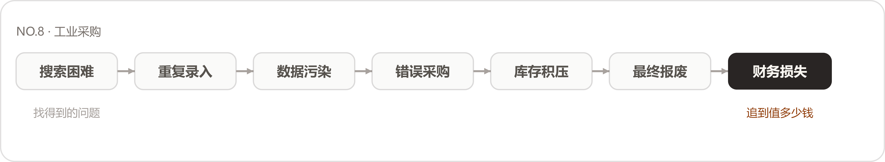
拆流程的尺子：从"找得到的问题"一路追到"值多少钱"，七环里缺了哪一环，这笔账就立不住。
"只有这条链路成立，我们才知道这个AI应用到底值多少钱。"
"这一步看起来不像AI，但它决定了后面的AI能不能真正进入业务。"
拆到哪里算够？拆到钱为止——说"效率低"就停下的，后面的价值全是估的；追到财务口径的，方案才有轻重。NO.14那句"先梳理流程，再做Agent"反着读也成立——流程没梳理清楚就上Agent，Agent继承的是一笔糊涂账。
NO.8的损失链还有一层用处：它把"痛点"从形容词变成了账本。"效率低"是形容词，"搜索困难一路连到报废、最后是真实财务损失"是账本——形容词立不了项，账本立得了。这一问读下来我们甚至觉得，损失链比方案本身更值得借用：方案各家没法照搬，追账的思路家家能用。NO.7的四本账是同一个道理的另一面：同一家公司里，企业负责人、研发、产品经理、HR对"做成"的定义各不相同，拆到角色那一层，才知道方案要同时平四本账——只算了企业负责人一本账的项目，多半死在其他三本上。
这一步读出来一个反直觉的发现：留人的理由，没有一家说是"AI能力不够"，全是责任问题。分工的边界画在责任上，不画在能力上——这是我们在这一问里最想把读者拉过来看的地方。
这个现象顺带解释了AI进企业为什么慢：模型可以做到九成九正确，但剩下那一次错了谁签字？没人签字的东西，组织不敢让它进流程。把二十四家的分工表摆在一起看，它们其实是一张张责任地图——每个"留给人"的格子里，都站着组织里一个要认账的人。FDE画分工的时候，手上做的已经是组织设计的活了。
总原则二十四家几乎一致，留人的理由各家说得很实：
往细里分，各家有自己的设计：
这批设计里我们最想单独说一句的是NO.15的回退机制：给系统留了退路，人才敢往前走——没有退路的系统，能力再强也没人真敢把活交给它。NO.16和NO.24是从另一头逼近同一件事：一个把Agent当工程系统做，求重复执行的稳定；一个给每个数字立溯源，求说得出处。两条路都通向"出了事查得到"——而"查得到"，正是机器的活和人签字的活能接在一起的接口。
学费最贵的一课来自非标制造报价（NO.17），也是"分工怎么定"这一课最好的教材。第一版想得直接：模型看懂图纸、抽取字段、按规则一算就出价。现场运行起来才发现，"端到端直接出价，出来的数字经常对不上真实成本"。改成分两段——模型只做图纸信息结构化，报价回到企业自己的物料和规则库里匹配，每一单人工校准后才能对外。改完顺势搭了一个飞轮：AI生成、人工校准、数据回填，下一次的结果更准，人工要校的部分越来越少。NO.17的学费还回扣了开篇那句话：分工也是长出来的，没有一家是先想明白再动手——端到端好看，两段式能用，这个道理全是账对不上之后才懂的。
会说话的管说话，会算数的管算数——这句通俗的说法放在今天的AI热里听，几乎有点扫兴。二十四家的方案里，大模型多数时候的角色是听懂人话的调度员和翻译官，离"替代决策"很远。我们倒觉得这恰恰是这份材料可信的地方：真在一线做落地的人，给模型安排的都是它确实干得好的位置。
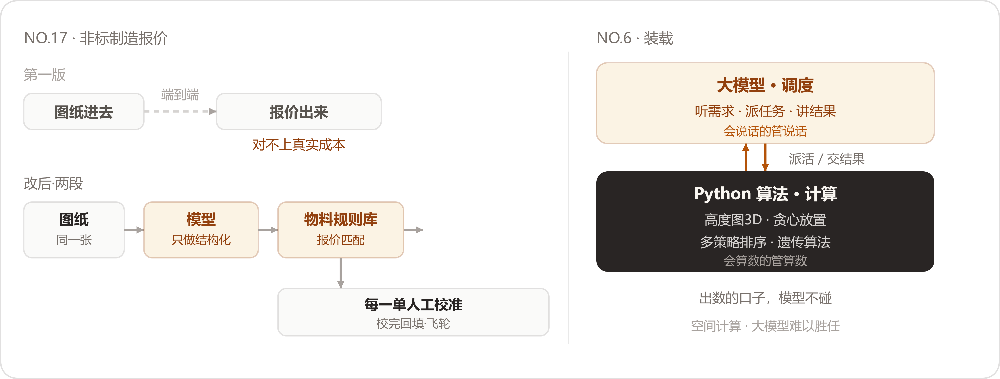
左：NO.17 端到端之死与两段式改造；右：NO.6 调度与计算分车道。
这一步是六步里局外人最看不见的一步——Demo做完就算交付的人，想不到二十四家在这里花的心思最多。一个明显的观感：离"用"最近的环节，往往技术含量最低，却最关键。
为什么嵌回比新建难？新建是技术活，嵌回是记忆活加政治活——原有流程里沉淀着习惯和利益，动哪里都要先问过。NO.13的教训最直白：再造一套系统，员工就得在两套系统之间重复操作，等于给所有人加活；给所有人加活的项目，没有出路。电信数据分析（NO.16）说得最直白，"想办法让AI进入客户已经存在的工作流"——客户原来怎么用就继续怎么用，网页、Teams、Slack都行，那个案子的客户，到最后就是继续以聊天的方式在用。注意这不是聊天框对不对的问题：电信分析师干的活本来就是提问和取数，聊天就是他的工作台。
其余各家的落地方式：
NO.5和NO.20的主动提醒还翻了个方向：从"人找事"，变成"事找人"。翻之前的运营，每天要打开几张表挨个核对截止时间；翻之后，人只在被提醒时出现。这一翻省下的可能只是一小时，卸掉的是"心里始终惦记着"的那份占用——流程级AI最被低估的好处，大概就在这里。NO.10那句"不要让用户先看到自己的投入，再等待未来的收益"也值得抄在本子上：人对先付出、后回报的东西天然抵触，落地设计要把收益放到最前面。
这一步里有两个转弯。
律所案件工作台（NO.3，产品叫法索AI）最初给律师的入口是智能对话框，登录就能提问，看着顺理成章；现场观察一段时间后发现，律师每次提问前都得先向AI重新描述案件背景，而"一个案件的信息量巨大，律师不可能在每次对话中都完整复述"——对话式交互帮了倒忙。入口改成案件工作台：材料先传上去，系统自动构建案件知识图谱，AI在完整上下文里等人开口，律师用专业语言提需求就行，不用再解释背景。
跨境物流装载（NO.6）的入口干脆是一张纸：现场调研发现工人装车"并不适合频繁操作手机或者电脑"，最后把算法结果转成一张装车指导图——货物编号、摆放方向、截面示意、装载顺序。
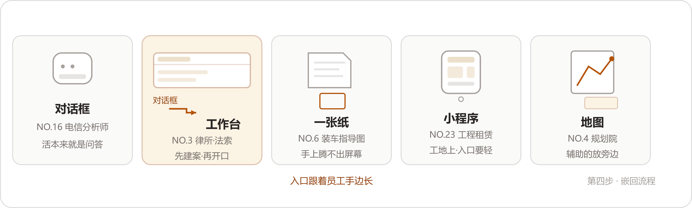
五种入口各有其主：对话框配的是本来就问答的活，法索AI从对话框改道工作台（卡二），装车工人手里是一张纸（卡三）。把入口摆成一排就看得出：入口长什么样，跟设计者的口味关系不大，跟干活的人手边有什么关系很大。
这一排入口是整个案例集给我们启发最大的一幅画。法索的转弯还带出一个比入口更深的问题：聊天框的毛病不在聊天框，在上下文——一个每次提问都要重新交代背景的活，就不适合聊天框；上下文能预先建好的活，工作台才立得住。这个判断可以从入口推广开去：AI产品长成什么形状，不取决于技术，取决于使用者的手边。一张纸那案读完最触动我们：算法是案例集里最先进的之一，落地的样子却是最朴素的一张打印纸。
五种入口摆完，我们在本子上记了一句：设计入口之前先要问的，是使用者干活时处于什么状态——手上腾不开的（装车工人），给他一张纸；脑中装着全案的（律师），给他一个工作台；习惯一问一答的（分析师），让他继续聊。入口形态选错，后面的功能再对也没有用——它挡在人和AI中间，人过不来。
二十四家都在切小，但没有一家把小当成终点——小是第一口的吃法，不是这顿饭的规模。NO.10只有几个门店的时候，就把几百个门店的扩法想好了，这个细节我们读了两遍。
为什么第一刀一定要甜？想通这一点，觉得"摘桃子"的比方比它看起来深：第一刀换回来的主要东西并非效率，是信任——业务的人真用了一次、真省了力，后面的配合才谈得上。多数项目挑最炫的场景开局，等于把建立信任的第一仗，打成了表演。
"我会先找离业务最近、最痛、最容易产生ROI的那个场景。就像摘桃子一样：先摘离自己最近、最甜的那个桃子。"
"场景足够小，数据才有可能搞干净；数据搞干净，结果才可能足够精准；结果足够精准，业务人员才愿意相信。"
"与其让客户相信我们的PPT，不如让他先看到真实效果。"
NO.14那个跟头值得单独琢磨：它错在把"做AI"当成了搭建——底座搭好，等人来用；其他家把它当成生长——先在活里发一个芽。第一刀切哪里，答案一致得意外：离钱最近、见效最快的那一块。多数企业的直觉恰恰相反，先挑最炫的做。
NO.7那句"第一次不必追求100分"，背后的账也值得算：工程师文化里，交70分的东西有心理障碍；但探索性的项目里，70分快跑比100分慢走换到的信息多——第二期改什么，要等第一期跑起来才知道，三期的节奏等于给学习留了位置。NO.10的两阶段则是另一头的分寸：验证阶段尽可以轻，规模化从第一天就在图纸上——轻量和不规划，是两件事。
最后一步各家做的长短差得很大，但底线一致：东西留下，人撤得出去。FDE这个角色的成功定义有点反常识——干得越好，越早不被需要。
为什么"撤得出去"是最硬的验收？人走了系统还在用，才证明活是流程在推；人一走系统就停，说明这一年一直在推着走的，其实是FDE本人。验收会上的评价做不得准，撤场三个月后的使用率做得了准。
"如果AI只是帮员工今天多做了十张图，明天还要重新开始，那它只是工具。"
NO.12那句"十张图"是我们全程划线的话之一：它把"用上了AI"和"留下了资产"分成两件事，多数企业停在前面一件。还有一条材料里没有直说、但摆在一起很明显的事：陪跑最久的那几家——NO.1的两个月、NO.7的三期、NO.18干脆扩编——恰好都是把东西留得最多的。是不是规律，留给读者自己判断。
NO.19的岗位说明书，越想越觉得不止是个技巧：给AI写岗位职责、划边界、定交接，等于把AI当员工在管理，而非当工具在采购。企业里的AI越用越多，"管理AI"这门手艺就会越来越像"管理人"——那张说明书算得上这个方向的一个雏形。把二十四家的"留下来"归拢一下，其实就三种形态：留资产（NO.12的素材库）、留能力（NO.18的团队、NO.11送进去的开发）、留规矩（NO.19的说明书）。效率会过期，这三样不过期。
把六步骨架从二十四家的做法里提炼出来，每一步留一道判断题，就是这一问的方法论。这六道题的版权属于二十四家——每一道都是他们用学费换出来的公约数，我们只是把它编成了问句。如果你正要做企业AI，可以直接拿它当自查表，每一步的答案，这二十四家已经用真实项目替你试过了：
| 步 | 判断题 | 二十四家的答案 | 锚点 |
|---|---|---|---|
| 1 进现场 | 信访谈还是信眼睛？ | 眼睛 | NO.1/3/9/13/24 跟岗；NO.4 当半个专家 |
| 2 拆流程 | 拆到哪儿算够？ | 追到值多少钱 | NO.8 损失链 |
| 3 定分工 | 哪些活必须留人？ | 签字担责的、错了退不回去的 | NO.13/14/21/23 |
| 4 嵌回流程 | 员工手边有什么？ | 入口跟着手边长 | NO.3 工作台；NO.6 一张纸；NO.16 继续聊天 |
| 5 小步迭代 | 第一刀切哪儿？ | 最快见分晓的那一块，同时从第一天起想好怎么扩大 | NO.9 桃子；NO.10 两阶段 |
| 6 陪跑沉淀 | 陪到什么算完？ | 企业自己接得住，第二件事不用你催 | NO.18 二十个编制；NO.11 能力送进去 |
这六步的原图，在二十四家的脚下——公共路径是他们一步一步走出来的，我们做的只是把它描下来；各家的本事，全在每一步岔路口的选择上。岔路都画在下面这张图里。
照实记一个读时的保留：这些思路都讲得太顺了——第一版错在哪里、中间回了几次炉，多半一句带过。翻车和救火的细节收在第五问里，那一问负责事故；两问对照着读，才是全程。
读到最后，六步骨架在我们眼里串成了另一条线，一条信任的积累线——进现场，挣的是开口说话的资格；拆流程，挣的是定义问题的资格；小口子跑通，挣的是扩大规模的资格；陪跑沉淀，挣的是全身而退的资格。每一步都在为下一步挣资格，跳过哪一步，后面的资格都不成立。二十四家没有人这么总结过，这是我们读出来的。
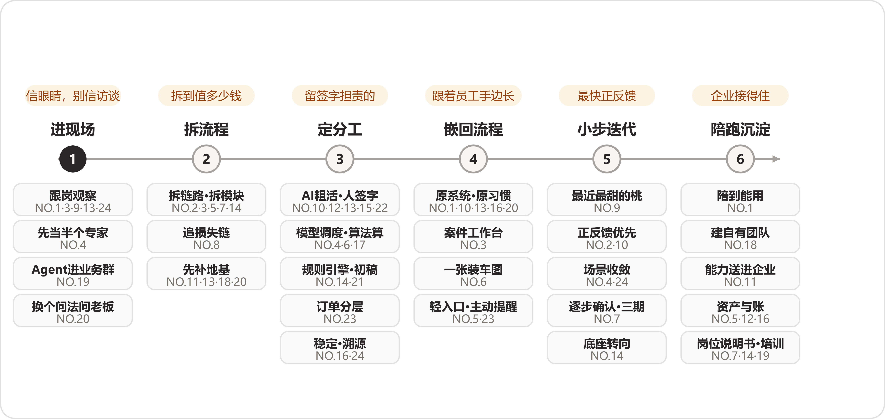
六步主线，每步上方是那道判断题，下方是岔路与走过这条岔路的案号。
"企业AI落地很少是'系统上线=项目结束'。真正的落地，往往发生在上线之后。"
这一问收到的二十四份答卷，读下来印象最深的没有任何一串数字，而是报数字的手法：这一行把"怎么报效果"本身做成了专业。数字只算最浅的一层，越往上走越值钱；二十四家里过半在做同一个动作——先把数字端出来，再亲手把它按下去。
这个动作在答卷里反复出现，几乎成了这一问的固定句式：
"但我觉得，比数字更重要的是人的工作发生了变化。"
"但效率数据只是表层结果，更重要的变化发生在流程层面。"
"但我后来慢慢意识到，这个项目真正的价值远不止'3—5天变成20分钟'。"
同一个转身，TikTok达人建联（NO.5）写的是"这个数字并不是这个项目最大的价值"；跨境物流装载（NO.6）说"这个项目最大的价值并不只是装载数字本身"；央国企财务流程（NO.9）的判词是"这个项目真正有价值的地方，在于它改变了人的工作方式"。线下零售对账（NO.10）的句子更直接——"如果只把它总结成'省人工'，我觉得还是低估了这个项目"；非标制造报价（NO.17）同款——"如果只把'节省50%工作量'当成全部价值，还是低估了这个项目"。报得出可核数字的十三家（NO.2/3/4/5/6/9/10/14/17/18/21/22/24），加上把自己短期统计也按住的NO.7，没有一家让自己的数字当结论收场；剩下十家，有的只肯定性，有的直接明说还没有ROI。
把二十四份答卷摊开来看，效果在他们笔下分成四层，一层比一层难拿，一层比一层值钱：
这张阶梯是材料自己走出来的：二十四份答卷几乎都从第一层起笔，逐层往上写，写到自家的最高层收笔。本文沿这条主线走；阶梯旁边另有一条平行线——同样是报效果，二十四家的报法分三档，诚实的姿势各有各的——单独拿出来看；再往后是三个不合拍的变奏。合起来，这一问的二十四案全部在档。
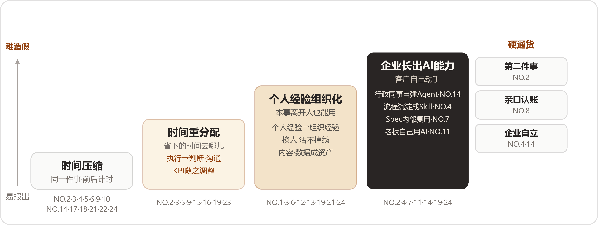
价值四层阶梯：答卷几乎都从时间数字起笔，逐层向上写；右侧三样硬通货，都要对方用行动投票。
时间是这一问的通用货币。凡有效果可报的，答卷第一句几乎都在计时，而且家家都报得具体：
电信数据分析（NO.16）没有给到分钟，但给的是同一根刻度：以前一个新的数据分析问题，一个人甚至两三个人按天计算，现在很多分析在分钟到小时级别内跑完。
这一层有两处值得停下来多看一会儿。
第一处，数字都穿着口径的外衣。NO.6开头就声明项目"已经完成原型验证"、2小时是"预计"；NO.21写明30分钟出自"项目方反馈"、且落在"初步结果"上；NO.24直接把声明写在了数字前面：
"先说明一句，下面的数字做过脱敏，量级是对的，绝对值做了处理。"
敢把数字写死的人，把口径也一并写死了。精确与诚实在这一层是同时出现的，七种口径在平行线那节列成表。
第二处，数字几乎全长在时间轴上，金额基本绝迹。全文只有两处碰到钱：NO.14折算到一人年的综合成本，NO.6给出"超1方+100美元"的计费结构。为什么？想明白之后觉得平常：时间是FDE自己计得准的口径——同一件事、前后计时，不需要请示任何人；钱要过财务的账，科目、分摊、归属，每一样都要进财务的解释权，FDE既拿不到也说不清。NO.6能碰到钱，因为它把经济账建在了物理量上——方数、车次、美元，全是现场数得出来的东西：
"把5小时压成2小时，多出来的车次、多出来的方，工人、物流公司、货主三方一起分，三方共赢，做增量部分。"
账的左边——旧流程那些"半个月""3—5天""一个月"——细看还有一层意外：旧值大得反常，反常在说明这些流程在被AI量之前，从来没有人认真计过时。工业物料采购（NO.8）把这层说破了：
"没有人真正把历史数据库里的记录找出来，仔细分析这些错误到底每年造成多少损失。"
照这个说法，不少第一层数字的功劳，有一半属于第一次认真测量本身——AI上线，顺手替企业补记了一本从来没记过的账。
这一层可抄走的是一条读法：看一份效果汇报，先找"从多少到多少"——只有"到多少"、没有"从多少"的，基线多半被吞掉了；连旧值都没人计过时的项目，上线后的每个百分比都没有分母。
第一层报完，答卷几乎立刻上二楼。这一层各家用的词不一样——转移、转向、释放——事情是同一件：把省下来的时间安顿到别处去。NO.2把这一层的地位说到了极处：
"所以这件事的本质，是重新分配人的时间，让一个人审核得更快只是表面收益。"
各家的安顿法：
为什么FDE急着上二楼？我们的读法是：时间数字一报出来，下一个问题几乎是必然的——那是不是要裁人？第二层挡的就是这个问题。二十四家在这一层用的词高度一致，释放、转向、投入更高价值的事，他们在共同防止自己的效果被读成裁员通知单。NO.17还专门声明"企业并没有简单地把剩下的人裁掉"，说这家企业处在上升阶段，企业负责人想的是把人的生产力释放出来。NO.18则把这一层立成了标尺，问得比谁都尖锐：
"所以我评价AI项目，习惯先问一句，被AI释放出来的时间，有没有重新变成企业的生产力。在这个案例里，答案是有的。"
把NO.2和NO.17摆在一起看有个巧合：一家在政务大厅，一家在工厂车间，讲的是同一件事——省时间相对容易，把省下的时间安顿好难。真正区分项目高下的，是第二层有没有安排；第一层的数字，只决定项目有没有资格进入这场讨论。
这一层可抄走的是一个问法：评估自己的项目，别问"省了几个人"，改问"那几个人现在每天在干什么"。答不上来的项目，省下的人力和流失的士气多半正在互相抵消。
爬到第三层，答卷换了一个主语：组织。第一、二层的受益者是干活的人，这一层的受益者变成了企业——个人手里的本事，开始搬到组织名下。制造业师徒带教（NO.1）的总结是这一层的定音鼓：
"对我来说，这个项目真正的价值，在于企业原本高度依赖个人的经验传承过程，开始变成一套能够沉淀、检索、学习和追踪的组织流程。"
具体的变化有三笔：过去分散在老师傅个人经验里的知识开始被系统化整理，企业第一次能比较完整地知道哪些经验不能随退休流失；老师傅从重复回答所有问题，转向关注新人学习进度和处理更复杂的问题；培训本身变得可追踪，新人学到了哪里、掌握了多少，不再依赖带教师傅的肉眼。
其他各家的这一层：
"以前的周会，前一个小时是在对数，这个数对不对、你那份和我这份为什么不一样。现在数已经在那儿了，会议直接从要不要动预算开始。"
提问方式也变了：以前说"给我一份报告"，现在直接问"这个SKU为什么掉了，是价格、铺货，还是渠道出了问题"。NO.24的评语是："能问出这么具体的问题，说明他们开始信这套东西了。"
这一层为什么难报？它没有"从多少到多少"。效率有计时器，经验没有计量器，组织化的证据要等压力测试——老人走、新人来——才显形。所以这一层的答卷全部改用描述性语言，而且家家都把话说在"开始"上：开始沉淀、开始变成、开始服务于，没有一家敢用完成时。跨案对照之下，NO.24把这层的验收写得最具体——不看文档存了多厚，看周会上的人还问不问"这个数对不对"。这一层可抄走的是一条硬标准：检验经验有没有组织化，只看老人离职那天活掉不掉线；掉线的，说明经验还在人身上，系统里存的只是文字。
阶梯爬到第四层，答卷换了叙述者——效果的主人从FDE换成了客户。前三层讲"我们帮客户做到了什么"，第四层讲"客户自己做了什么"。
国企电商子公司（NO.14）把这一层的最高战果，记在一个小得不能再小的工具上。企业里有办公用品自助柜，员工刷工牌领电池、笔、本子；柜子方便了员工，麻烦留给了行政——电池没了，员工发消息问，行政什么时候看到、什么时候补货，全凭运气。这个需求按惯例要走IT部门提需求、排期、开发、内部结算工时的老路；这次没有。负责行政物品的同事在全员培训之后自己发现了这个需求，基于数据中台的MCP能力，用提示词做了一个简单的Agent：员工在IM上直接问机器人"我今天要领两节电池，还有没有"，系统去查库存；库存不足就提醒行政补货，补完发信息给需要的员工。NO.14对它的评语，原样抄在这里：
"这个工具本身的业务价值并不大，但它让我们觉得特别重要，有一种特别的含义。" "这时候，FDE交付的就多了一层意义：它在企业内部培养出了新的AI使用者，新的FDE。"
他还补了一句："这可能比我们这些外部团队替他做一个Agent更重要。"
其他各家爬到这一层的样子：
为什么一个业务价值不大的补货Agent，被当成了最高战果？我们的读法是：它的每个环节都对——需求是业务自己发现的，工具是业务自己做的，FDE全程不在场。它是"能力留在企业里"最直接的物证，比培训场次和满意度打分都硬。跨案对照还有一层意思：NO.11的企业负责人和NO.14的行政，站在同一个转折点的两端——一端是决策者换脑子，从买工具到重新想工作方式；一端是执行者换手，从提需求到自己动手。NO.19两件都占了。这一层可抄走的是一个数法：想量企业AI化到了什么程度，去数那些FDE不在场时发生的使用——自发提问、自建工具、自己办的黑客松。这个数字比登录量诚实。
四层摆完，回头再看塔尖那半句"越往上越值钱"——值钱在哪里？在这一行公认的三样硬通货上：第二件事、亲口认账、企业自立。它们全都长在客户的手上，而不在FDE的汇报里，造不了假，因为每一样都要对方真金白银地配合。
"只有客户说出那句'对，这笔钱确实是因为这个应用被节省下来了'，我们才认为价值真正成立。"
"第二个项目愿不愿意"为什么比ROI硬？ROI是算出来的，第二个项目是真金白银投出去的，后者做不了假。这一条也是评审案例的筛子：先找这三样，三样全无、百分比却写得很漂亮的案例，值得多问一句基线在哪里。
主线之外，把二十四份答卷按"怎么报"重新归一次档，正好三档，二十四案全部在册。
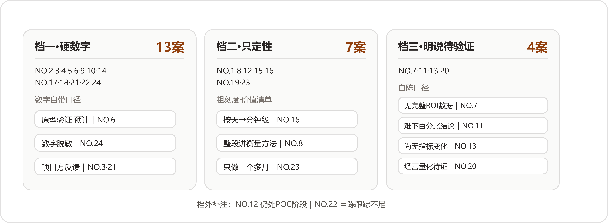
同样是报效果，三档报法把二十四案分干净：档位跟项目年龄高度相关，跟效果大小未必相关。
NO.2、NO.3、NO.4、NO.5、NO.6、NO.9、NO.10、NO.14、NO.17、NO.18、NO.21、NO.22、NO.24，第一层列过的那批硬数字全部来自这十三家。细看会发现，凡给了数字的答卷——含主档在档三的NO.7那笔短期统计——几乎没有不带口径的，七种口径原文全部随数自带，一个都不是别人替他们补的：
| 口径 | 原话 | 案 |
|---|---|---|
| 原型验证 | "目前项目已经完成原型验证" | NO.6 |
| 试点 | "在已经跑通的试点流程里" | NO.4 |
| 试运行 | "项目试运行之后" | NO.5 |
| 短期统计 | "客户在短期几天内做的内部统计" | NO.7 |
| 脱敏 | "数字做过脱敏，量级是对的，绝对值做了处理" | NO.24 |
| 范围 | "目前我们落地的还是上海部分门店" | NO.10 |
| 转述 | "项目方反馈" | NO.21 |
这十三家占了过半，却没有一家把数字当成答卷的结尾。
NO.1、NO.8、NO.12、NO.15、NO.16、NO.19、NO.23。这七家不报百分比，把答卷直接写成了价值清单。NO.1的三个变化全在组织层面；NO.8整段答卷在讲衡量方法；NO.12报三个变化——员工真用起来、内容变成企业资产、生产有了质量边界。NO.19自评三层；NO.23从效率、增收、人的方式三个层面看价值；NO.16只给粗刻度，按天到分钟到小时级。这一档的定性发言人是NO.16："我觉得这里不能简单理解成'AI替代了几个分析师'。"
"这家基金公司没有向我开放可以对外披露的完整ROI数据。"
"如果只从一个软件项目的角度看，现在其实还很难给这个案例下一个'效率提升了多少百分比'的结论，因为项目本身还处在第一阶段，交付也还没有全部完成。"
"目前项目仍处于持续推进阶段，尚未形成大规模的业务指标变化，但已经可以看到几个层面的实际价值。"
"现在还不能证明企业的利润、成本或者其他经营指标已经发生了明确的量化提升。"
档外还有两笔交叉账要记：NO.12自陈项目"仍处于POC测试、内部试用和持续迭代阶段"，NO.22承认"这个案例的效果跟踪还有不足"——这两家的主档在别处，诚实的尾巴一样露在外面。
值得单独点名的是三种诚实话术。第一种是NO.2的"堵自己的便宜话"：办件量涨到1100件左右，他先声明——
"这里需要说明的是，AI并没有凭空创造这些需求。很多群众原本就有办理需求，只是过去受制于审核产能，业务处理不过来。AI把原来卡在人工审核环节里的产能释放出来以后，这部分需求才真正被承接。"
需求原本就在，AI释放的是产能：这句等于亲手把"需求增长归功于AI"的便宜话堵死了。第二种是NO.7的"给数字贴期限"：客户侧明明统计出了好数字——三个小组用Spec Coding方法和模板后，"写代码的时间节省了约1/3，写文档的时间节省了一半多，测试时间则基本持平"——他还是按了下去：
"这个数据是客户在短期几天内做的内部统计，因此我认为它可以作为真实反馈，但不应该被理解成长期、完整的ROI结论。真正有价值的效果评估，还是需要持续两周、一个月甚至更长时间。"
第三种是NO.20的"整段职业守则"。这家把不能证明的先说清楚，能感知的照报——ERP里"有数据但看不清"的情况重新呈现出来：还是那个4980个扳手的例子，原来因为没达到5000个的标准数量，ERP没法很好反映真实库存，现在可以告诉企业负责人实际库存里已经增加了4980个；财务应付款也能追溯到对应哪些客户订单、哪些上游采购。然后才是那段话：
"做FDE不能为了证明AI有效，就把刚上线的项目包装成已经产生巨大经营收益。业务价值需要时间验证，能明确解决什么、还不能证明什么，都应该讲清楚。"
这一节的观察收在三个判断上。其一，过半FDE主动降格，我们的解释是：他们的数字早晚要站到客户面前对质。答卷是公开的，写出去的每个百分比都会被客户的相关部门拿着账本核；吹出去又对不上的数字，杀死的是下一个项目。降格做熟了，就成了这一行的职业习惯。其二，三档的分布跟项目年龄高度相关——NO.23实际开始做这类业务只有一个多月，NO.11处在第一阶段交付未完，NO.20上线时间还比较短——报法档位更像时间轴上的自然切片，跟项目成败高低反而看不出关系。其三，"值钱的难量化"这个困局，NO.23摆到了明面上：这家想按增收分成收费，谈不下来，"因为增收分成在实际谈判里比较难量化"。最容易量化的时间压在第一层，最值钱的自立长在第四层，两头几乎不重叠；二十四家的应对出奇一致——能量化的报准、带上口径，不能量化的用行为和原话报，中间的缺口自己承认。
照实记一条保留：二十四份效果汇报，严格说都是二十四份自述，全部出自FDE一侧，客户那边的账单一页都没有。NO.8替客户立的认账规矩，反过来正好量这份材料自己——这些数字和这些"真正价值"，客户方有几位会签字认账，档案里看不到。这个保留不动摇上面的读法，只提醒读的人把成色折一折。可抄走的筛子也在这里：挑AI服务商，先翻案例集里有没有"还不能证明什么"这一类句子；满册成功学的供应商，要么没做过难项目，要么没打算做第二个。
三份答卷在主旋律之外各唱各的调：一份报出了数字之外的第二落点，一份把效果记成没花的钱，一份先报了一条坏消息。
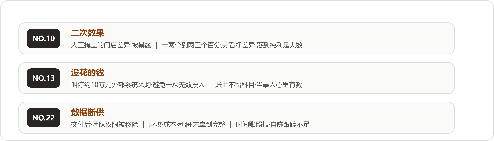
三个变奏：二次效果、没花的钱、数据断供——都落在"效率提升百分之多少"的回答框架之外。
线下零售对账（NO.10）的时间数字本可报得漂亮——一两个人天压到几个小时——它的答卷却把重音放在了别处：
"真正让我觉得意外的是，AI把原来被人工流程掩盖的问题暴露了出来。在实际数据里，有的门店差异在一两个百分点，有的能达到两三个百分点。这里面既有少收，也有多收，最终需要看净差异。但对于一家线下零售企业来说，即使只有一两个百分点，如果落到纯利层面，也已经是一个非常大的数字。"
对账变便宜之后，先现形的反倒是门店之间的差异。这份答卷把"效果"的边界往外推了一步：工具的直接效果是省人工，工具的连带效果是让被成本挡住的视力恢复——从前核对不起，那一两个百分点的差异既不知道、也没法管；现在知道了，管不管、怎么管，成了企业自己的新题目。NO.8从采购端讲的功课，和NO.10在零售端看见的东西，做的是同一件事：
"所以我们工作的一部分，是把过去不可见的问题变成可以计算的问题。"
消防维保数字化（NO.13）的答卷末尾，记了一笔在任何效果报表上都查不到的账：
"此外，我还帮助企业避免了一次无效投入。此前企业曾考虑花费约10万元采购一套外部业务系统，但经过现场调研发现，对方方案没有充分考虑行业监管流程和实际执行方式，真正上线后无法使用。经过重新梳理，这笔采购被及时叫停。"
这笔账的奇特之处在于它没有科目：报表只记发生了的支出，被叫停的采购在账上不留痕迹，效果只存在于当事人的记忆里。要是按NO.8的严格口径，这笔避免的浪费甚至走不到"客户亲口认账"那一步。它提醒效果账里存在一类影子科目——没花的钱、没招的人、没犯的错，全都不会自己开口，要有人替它们记着。
跨境电商库存补货（NO.22）的答卷，第一句就是：
"这个案例有一个特别的地方，交付结束后，客户把我们的团队权限移除了，后续的营收、广告成本和利润数据，我们没有拿到完整的。"
这句话放在任何一份售前材料里都活不过第一稿，它就这样躺在效果问答的开头。在这句之后，NO.22照报了自己的时间数字（每天4～5个小时压到1小时以内），照概括了三个变化——从"人工搬数据"变成"数据自动流动"，从"人工计算"变成"AI计算、人工确认"，从"库存、补货、广告各自决策"变成"库存开始影响广告决策"——并且承认："当然，这个案例的效果跟踪还有不足。"
交付之后断了联系，在AI项目里到底算什么？材料没有给出答案。往好处读，客户不需要你了——NO.4说的"客户自己开始长出AI能力"，也许长成了连数据都不必向你交代的样子；往坏处读，合作到期、各走各路。两种读法都通，档案停在"效果跟踪还有不足"六个字上。我们把它记在这里，也把这份没有答案留给读者——二十四案读下来，敢把坏消息写进答卷的，只此一家。
把二十四家的报法收拢成一张自查表。报效果之前先过四层账，每层一问；数字出口之前，再过三个诚实口径。
四层账——一层一层往上问，问到哪层答不上，项目就做到哪层为止：
| 层 | 这层的账 | 验收的一问 | 锚点 |
|---|---|---|---|
| 一 时间 | 同一件事原来多久、现在多久 | 计时口径前后一致吗 | NO.2/4/9/22 |
| 二 人 | 省下来的时间去了哪儿 | 那几个人现在每天在干什么 | NO.17/18/21/23 |
| 三 组织 | 本事离开人还能不能用 | 老人走的那天，活掉不掉线 | NO.1/12/19/24 |
| 四 企业 | 客户自己做了第二件事没有 | FDE不在场时，有没有使用在发生 | NO.4/11/14/19 |
诚实三口径——数字出口前的三道闸：
| 口径 | 做什么 | 锚点 |
|---|---|---|
| 先掐基线 | "我们会从历史数据中建立基线，再通过小规模实验逐步扩大范围"，每个阶段验证几个问题 | NO.8 |
| 标注口径 | 原型还是正式、短期还是长期、脱敏与否，随数字一起交代 | NO.6/7/24 |
| 亲口认账 | 业务价值算完，让客户自己的业务人员确认，确认了才算成立 | NO.8 |
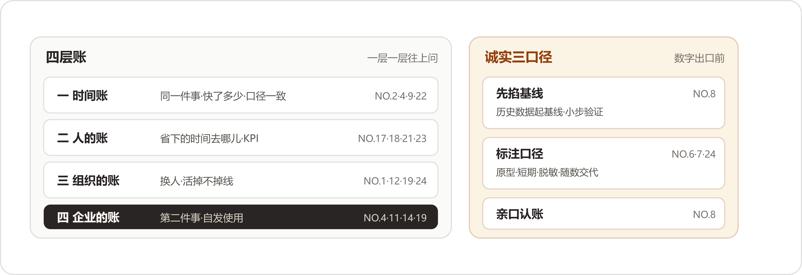
四层账往上问，三个口径往外守；这张表的每一条，都是二十四家用真实项目换来的。
这一问读到末尾，我们记住的反倒很少是数字本身。时间数字绑在当下的流程上，流程一改，数字就旧了；上面三层安顿的是人、经验和能力，这些跟着企业走。过半FDE主动降格，做到最后是一种自知：知道自己报的东西里，哪些明年就作废，哪些才算数。
"一个AI项目真正成功的标志，是验收通过之后，客户还愿意继续和你做第二个、第三个项目。"
第三问收尾留过一个保留：那些思路讲得太顺，第一版错在哪里、中间回了几次炉，多半一句带过。这一问就是补齐另一半的地方——二十四份答案里装的全是事故，坎在哪里，怎么翻的车，怎么救的火。
而这一问最显眼的东西还轮不到事故，是开头。二十四份答案，有十六家的第一句话在说同一件事——难的东西不在模型那儿：
同一个意思往下数还有八家：工业物料采购（NO.8）说"这个项目真正困难的地方，其实大部分都不在模型本身"，国企电商子公司（NO.14）说"我们踩过最大的坑，其实不在技术"。央国企财务流程（NO.9）和非标制造报价（NO.17）各有一句变体。本地生活短视频（NO.15）的原话是"这个项目最大的难点，其实不是开发"，汽配供应链经营（NO.20）的原话是"FDE真正难的地方，很多时候在AI技术之外"。外贸资料整理（NO.11）把这句话放在了收尾——"回头看，这三个挑战没有一个直接关于模型，但每一个都能决定项目能不能真正跑起来"；电信数据分析（NO.16）的版本最有画面："这个项目里最大的挑战，恰恰是很多AI演示不会暴露出来的东西：稳定性、准确性、成本，以及规模化。"
十六家，头一句各自措辞，意思完全一致。这种一致本身值得停下来看一眼：它不像是商量好的口径，更像是各自栽过跟头之后，摸到的是同一堵墙。有两家还把这句断言往后多算了一步，算出了数：
"在AI时代，我甚至认为，一个项目如果单纯从技术上已经能够落地，其实已经成功了80%。真正容易让项目'死掉'的，是业务、人和组织。"
"如果让我给企业AI落地的难度排个序，我现在的排序是：人最难，其次是组织，再是数据，最后才是技术。"
NO.14同一段还替大家认领了老印象：从前总讲万事俱备差个技术，现在技术反倒成了不难的那一环。NO.24连比例都给了——"我们自己的说法是：难点不在技术层，技术大概只占20%"。断言、排序、比例，三样对得上，这一问的塔尖可以一句话断定：坎不在模型；难度从人到技术一路递减，人最难，技术只占两成。
把二十四份答案里的坎摊开、合并、归位，剩下六类，每一类里都有名有姓：
一家往往不止一道坎，上表按主坎归位，次要的坎在正文里带出；六类合计二十四家，一家不缺。
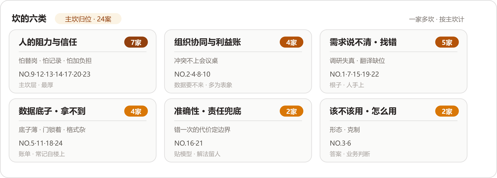
六类坎与主坎归位。人的坎一类挂了七家，贴着模型的两类加起来只有四家——这座塔头重脚轻，收口会把它画出来。
下面一类一类走：每类先看坎长什么样，再看他们怎么解；解法里只此一家的五招，最后单独说。
先说一个读了材料才改正的印象："员工抵触AI"这句话太大，装不下现场的东西。二十四家写到的抵触，没有一处是抽象的反对，每一处都长在具体的怕上，而且怕的东西五花八门：
"比如一个岗位原来要3到5个人完成，现在老板说上AI以后可能只要1到2个人，员工第一反应常常是担心自己是不是要被优化、系统上线以后还有没有位置、是不是要被调去不想去的岗位，很少会先想到'这个系统真先进'。这种抵触非常真实。"
这一家的总结也尖锐："技术是相对静态的，人的反应是动态的。"乙方在这里还有一层天然吃亏：员工看你，看的就是那个来动他岗位的人。
"员工最初对数字化心存顾虑。他们担心这意味着更严格的管控，担心自己的工作过程被完全记录，也担心需要学习一套全新的系统。"
"业务人员本来每天已经很忙了，你突然给他增加一个新系统、新流程，他第一反应很可能是'你为什么又给我增加了一个负担？'"
"一种人觉得，'我们现在挺好的，为什么要折腾AI？它到底对我有什么价值？'另一种恰恰相反，觉得AI无所不能，甚至会期待'花10万元，就应该给我做出100万元的效果'。"
它家还补了这一类里最刺痛的一句——员工的情绪没解决，连你拿到的输入都是坏的：
"如果这种情绪没有解决，你拿到的需求可能都是假的，最后产品上线以后也没人愿意真正使用。"
解法各家不同，方向一致——不辩解，先给：
把这些怕摆在一起，能看出一层东西。NO.17的员工在算岗位，NO.13的员工在防记录，业务人员在护自己本来就排满的日程（NO.9）。NO.12那两种极端，一头在防白折腾，一头在抬不现实的期待。怕的对象各不相同，算的其实是同一本账：这件事动了之后，我亏什么，出了错谁担着。解法也就全部长在这本账上——先把小麻烦解决了（NO.12），让人亲眼看见省下的时间（NO.9），把岗位去向和KPI重新谈过（NO.17、NO.18），或者让制度来接住人（NO.14）。能抄走的判断有一条：员工的抵触是一本没算清的账，帮他把账算清，比把模型调准有用。
组织这一层的坎有一个统一的长相：它几乎从不打着"组织问题"的旗号出现。它表现为数据要不来、需求回得慢、项目推不动——顺着表象往下挖，挖到的都是部门和利益。
"一个项目刚进去的时候，你可能只跟一个部门、一个负责人打交道。但真正开始落地以后，会涉及不同部门、不同角色甚至外部合作伙伴。信息化、数字化、智能化一旦真正改变流程，就一定可能影响某些人的原有工作和利益。"
它接着开出的能力清单里，技术只占一项："所以FDE除了做技术，还必须会沟通、协调、项目管理，甚至要会'算利益账'。你要让不同角色看到，这个变化对他意味着什么，谁会获得收益，谁的工作会改变，出现冲突以后谁有最终决策权。"（它家最独特的那道坎——AI把审核尺度里的"放宽"照了出来——留给独门解法单说。）
"10个部门里，有人天然支持AI，也有人心存顾虑，担心这套东西上线以后会影响自己的岗位和价值。所以我们去问业务规则、要数据的时候，有的人回复会很慢，甚至直接说：'这些网上都有，你们自己查。'"
而实际上，很多规则只有真正做业务的人才知道。它的第一个解法是换人推动：
"项目发起人可能是副院长，但真正能协调10个部门、知道谁最难推动、谁掌握什么数据的人，往往是下面那个负责总调度的人。我们必须先跟这个人聊透。"
第二个解法是给方案留容错，不要让任何一个部门握着整个项目的生死：
"如果某个部门暂时不给数据，我不会让整个项目因此停下来。少一个部门，就先少做一个场景；少一类数据，就先让这一部分不参与计算。但是最后整体链路必须能够跑通。"
它给自己定的交付底线是"一文、一图、一表"——缺一个节点，核心交付形态仍然成立。
"有些AI应用甚至会改变部门之间原来的工作流程，因此天然可能产生冲突，而且很多冲突不会在会议上直接说出来。所以我们会做多轮讨论，不仅开大会，还会提前和不同利益相关方单独沟通，把这些没说出口的顾虑提前化解。"
它还把组织坎的时间轴拉到了上线之后——项目要移交给业务部门，由他们决定是否真正采纳，而"FDE不能是'东西做完、钱到账、人撤走'。如果业务部门最终不用，或者三个月之后效果消失了，那这个应用就不能算真正落地。"
四家的解法摆在一起，有一个共同动作：把暗处的利益摆到明处谈。NO.8把会上不说的顾虑放到会前单独说，NO.10把每个层级的目标和责任在开工前讲清，NO.2算利益账算给所有人看。NO.4那两招最值得抄走：与其跟十个部门挨个较劲，先把那个真正能协调所有部门的总调度找出来聊透；方案里始终留一道容错，缺一家也还能交活。能抄走的判断：组织坎的入口通常是某个流程节点卡住了，不要在节点上使劲，去找那个能拍板也肯拍板的人。
说需求是坎，听上去跟第三问记下的那笔打架——那边说二十四家没有一家抱怨客户说不清，说不清就是起点。两边其实不矛盾：起点归起点，成本归成本。说不清照样要花真金白银去解，而且这一类坎最隐蔽的地方在于，它伪装成"已经说清楚了"——调研记下来的、客户答应的、演示点头的东西，进现场才发现是失真的。
"有一次，我们提前了解到客户团队使用AI Coding的能力比较深，所以准备了很多高阶内容。结果真正到了现场，发现大家连一些基础问题都没有解决。"
"那怎么办？只能现场降级，从基础开始。"反过来也一样，本以为能力一般，到了发现用得非常熟练，就把最深一层的内容拿出来。它对不确定性的态度也在这类坎上："我的解决办法，是把不确定性暴露出来，然后通过小步验证降低风险，不假装自己已经知道答案。"
"一个适合FDE落地的问题，至少要同时满足几个条件：它必须是业务同学真实存在的问题，必须有业务价值，而且解决之后最好能够找到可以衡量的指标。这几个条件同时成立，其实非常难。"
它还看穿了需求方的一般状态："因为业务方不可能把一个需求完整、准确地定义出来，更不可能期待AI稳定地100%满足一个没有边界的需求。"
"以前软件工程时代，这叫产品经理需求没定义清楚，研发不断返工；到了AI时代，本质没有变，只不过后面的'返工成本'还可能直接表现成大量Token消耗和交付成本。"
这一类里最该抄走的是NO.10那句账单：AI时代的需求返工没有打折，还涨价——返工直接烧成Token和交付成本。机理跟第一问对得上：客户给的说法是他对自己的认识，现场的动作才是实况，两者中间的缝隙就是这类坎的藏身处。三件顺手就能带走的工具：筛问题时用NO.19的三条件（真实存在、有业务价值、可衡量），追问不出就换NO.22的演示加录屏，反馈模糊就学NO.15把"感觉不对"翻译回业务语言。
难度序里数据排第三，落在组织后面。把这一类读完就明白为什么：数据坎十有八九是别的坎结出来的账单——底子薄是历史欠账，拿不到是组织不让拿、企业负责人不放心、系统锁着门。真到了数据本身那儿，反而不算最难。这一类坎长着三种长相。
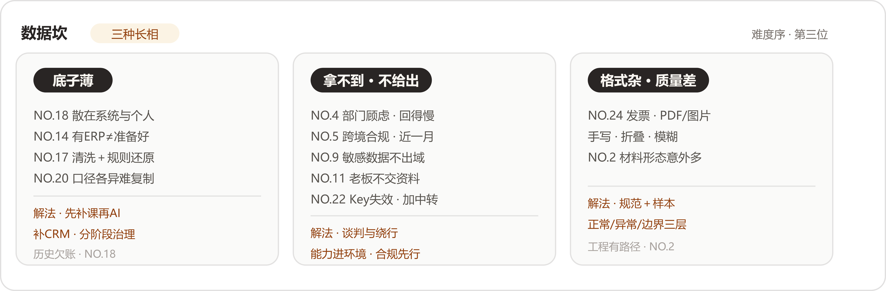
三种长相，三种解法，没有一种在模型侧。
"真正走进去才发现，业务领先和数字化领先完全是两回事，销售数据散落在不同系统和个人手里，IT团队也没有足够的人力承接AI转型。"
它的选择是接受现实，先补课再上AI："所以我们的做法是接受现实，不跳过信息化和数据化，该补CRM就补CRM，该把销售数据先汇总就先汇总，该建数仓就建数仓。"补课的节奏也讲方法："我们的办法是分阶段推进，先把最关键的数据跑通，再逐步把其他数据接进来，边接入边治理。"
"我们光数据这一块就花了接近一个月，数据申请会被打回来再重新申请，权限账号要重新确认，服务器怎么部署也需要确认，甚至数据能不能离开所在国家、应该留在哪里，都需要提前搞清楚。"
它的建议是把这些搬到最前面："所以如果要做境外业务，我会特别建议FDE提前把数据合规和数据流向研究清楚。不要等系统都做完了才发现数据拿不到。"
"现实世界里的AI落地，很多时候卡在模型之外，企业原有系统的开放程度、数据结构和接口限制，往往才是真正的门槛。AI本身可能已经能做了，但数据根本拿不出来，还是落不了地。"
三种长相看完，回头再看数据为什么排在组织后面，答案就在类目里：长相一（底子薄）要花钱花时间补课，长短取决于家底；长相二（拿不到）基本是组织坎的账单，NO.4的门、NO.11的企业负责人、NO.22的系统、NO.9的红线，没有一道是靠模型解决的，全靠谈、靠送、靠绕；只有长相三（格式杂）离技术最近，而NO.2说得明白，这类问题麻烦归麻烦，工程上有路径。能抄走的判断：进场先给数据做个体检，问三句——有没有、给不给、干不干净；该补的课就先补，不要指望模型替你把欠账背过去。
六类坎里，这一类听起来最像技术坎——识别率、稳定性、生成质量，字面全是模型的指标。把答案读完会发现，他们兜的其实是责任：错一次的代价有多大，决定留多少给人、把边界画在哪里。
"原因是消防设计涉及责任问题。设计人员需要对最终图纸的合规性和安全性负责，他们不能接受一个'大概对'，或者'完全黑箱'的生成结果。"
它的解法是分层："我们的应对方式是提供分层设计：对于常规空间，提供默认参数的一键生成能力，降低使用门槛；对于专业用户，开放危险等级、K值、喷头间距、布置方式等参数的调整入口。让系统既能够快速产出，也能够精细控制。"边界则写进了系统："因此，我们在系统设计中明确了边界：AI负责基于规范规则的自动化生成，但不做超出规则范围的'创造性判断'。最终方案必须经过设计人员审核确认，系统在关键节点设置人工确认环节。"
"但我们的做法，是通过系统设计，把这种随机性放进一个相对可控的业务流程里。就像汽油本身不稳定，但汽车工程的意义，就是让汽油可以安全、稳定地驱动车辆。"
成本那一半也说得直白："如果架构设计得不好，就像一辆漏油的车，你根本不用谈省油，因为油一直在往下掉。"
"对总部团队，先让AI做辅助标记，保留人的最终决策权。每一处风险标记都附带依据（历史对比、区域参考、行业规则），让审核人员能看到判断逻辑，每个结论都有迹可循。"
这一类摆完能看出一个结构：NO.21的分层（一键给常规、参数给专业）、NO.16的系统设计（给随机性造容器）、NO.24的依据链（每个结论有迹可循）、NO.1的验收共定，四家干的是同一件事——把"错了怎么办"提前设计进系统。NO.16那个汽油的比喻值得整个抄录，而且它管的不只是模型：数据进门之前先过规范（NO.24），结论出门之前先挂依据、留人审（NO.24、NO.21）。能抄走的判断：准确率指标谈不拢的时候，先谈错的代价——代价定了，兜底的设计自然就定了。
最后一类坎问的事情最朴素：这件事到底该不该用AI来做。它分两半，一半是形态（用什么样的AI），一半是克制（要不要AI）——这个分法是我们读完归纳的，原文没有这个说法。
先看克制的那一半，答案几乎全是否定句：
"这种情况下，强行做多智能体，不但架构更复杂，上下文在多个智能体之间传递还可能带来歧义、丢失和污染，结果反而不够收敛。"
它最后把自己的职责改写了："这个过程让我越发笃定，FDE的职责是帮客户判断，什么地方真的应该用AI，什么地方不应该。"
"如果一个行业里已经有公司专门靠某个问题生存，那就应该先认真研究：它到底解决了什么难点？它掌握了哪些信息差？为什么这个事情值得一家公司的长期投入？"
它给自己下的诊断只有七个字："本质上还是行业认知不够。"
再看形态的那一半：
这一类读下来，印象最深的是"放一放"出现的密度：万能问数放一放，多智能体不硬做，脚本够用就不上Agent，投入由轻到重，最优解让位给可操作。替客户挡掉不合适的AI设想，本身就是交付的一部分，NO.4把这句话直接说成了职责。NO.10的教训补上另一头：克制不只针对自己的冲动，也针对难度本身——已有公司靠这个问题生存的领域，先研究明白再进场。能抄走的判断是一道三连问：规则算法能不能干？脚本定时任务够不够？轻量验证能不能先跑？三问都过了，再谈Agent。
六类坎里的解法大多是公约数——小切口、留人审、先补课、给依据。另有五家的解法，二十四案里只此一家，值得单独记一笔。这五招未必搬得走，但每一招都长在一道只属于那家企业的坎上。
"自动审核跑起来以后，我们发现有些业务过去人工审核时存在一定程度的'放宽'。这时候问题从'模型能不能识别出来'，变成了'识别出来以后到底应该怎么办'。"
严格执行，可能影响业务量和合作关系；保持宽松，自动审核就失去了意义，而且"这种事情技术团队自己不能拍板"。他们的做法是算账给甲方看："我们的做法是把问题和数据客观呈现给甲方，哪些材料存在问题，按照不同审核尺度每天能处理多少业务，业务量会发生什么变化，然后让甲方结合实际经营和管理要求做最终决策。"跑了一段时间、有了真实数据，效率、合规和业务量之间才找到平衡。这条解法的边界感是全文最清楚的一句："我们的职责是把技术能力做出来，把问题暴露出来，把不同选择可能产生的结果说明白；但涉及业务利益和管理规则的最终决策，必须交给业务负责人。"
"后来我们自己开发了一个远程通道，让我们的AI可以在后台连接客户电脑上的AI，在不影响员工正常工作的情况下完成一些任务。很多长任务放到晚上跑，双方都节省了大量沟通和等待时间。"
自己这边的AI隔着一条自建通道，去调用客户电脑上那个数据不出企业的AI，长任务夜里跑——"等老板有时间"这件事，被他们当成工程问题解掉了。
"所以今年我们让人事部门牵头，从培训开始重新推进。这个转变看起来有点反直觉，但恰恰是我们服务两年以后踩坑踩出来的经验。"
AI项目归口人事，道理在它家的第一道坎里：员工为什么愿意参与，AI接走重复工作之后人去做什么，有没有晋升路径和新的激励——这些全是人事的问题。
"我们的办法是给识别加一道人工校准兜底，业务人员只审那些模型把握不大的字段，审完再把修正结果回填到模型和数据里，识别准确率随着真实数据越滚越高，人工要审的部分越来越少。"
把握大的字段直接过，把握小的才请人，审完的修正回填回去——同一个兜底，既兜住了报价对外的责任，又不会把省下的人力原样退还。
"因为FDE的核心成本就是人的时间。如果一个项目需要投入大量人力做数据治理、长期维护和定制开发，那么即使客户觉得项目很好，对FDE团队来说也不一定是一门好生意。"
这道坎要对付的东西，长在自己的账本上。它后来开始主动寻找更标准化的场景，方向就是从这道坎里长出来的。
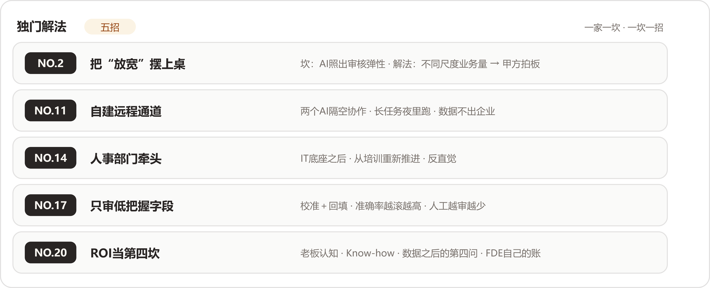
五招对五坎，一家一招。公约数负责大方向，这五招负责那道具体的坎。
五招放在一起有一个共同点：每一招都贴着那道坎的形状长，换一家就失效。放宽的账只有审材料的算得出来，远程通道只在外贸小企业那种企业负责人即全部决策人的地方值得修，人事牵头只在知识型组织的转型里成立，递减的校准只救得了报价这种错一个字段就赔钱的活，ROI那一坎更是NO.20自己的生存题。能抄走的与其说是招式，不如说是做法：先看清坎长什么样，再决定解法长什么样。
把六类坎挂回NO.14的难度序上，这座塔的样子就出来了。人这一层挂着两类：阻力与信任七家，说不清与失真五家，合计十二家，二十四家里的一半。组织四家，数据四家，技术层挂着准确性与该不该用两类，四家。
需求那一类挂到人层，需要交代一句理由，理由在材料里：说不清的根源是活长在人手上。NO.1的隐性习惯连本人都不自知，NO.7的调研拿回来的是客户对自己的想象；外勤维保人员在会议室里只会被动应答（NO.13），"感觉不对"这四个字连本人都翻译不出来（NO.15）。坎的名字叫需求，坎的位置在人的脑子里和手上。所以人这层的坎其实长着两副面孔：一副是不肯给——怕丢岗位、怕被记录、怕多干活；另一副是给不出——说不清、说失真、说不准确。两副面孔加起来，占了二十四家的一半，这才是"人最难"三个字在材料里的实际分量。
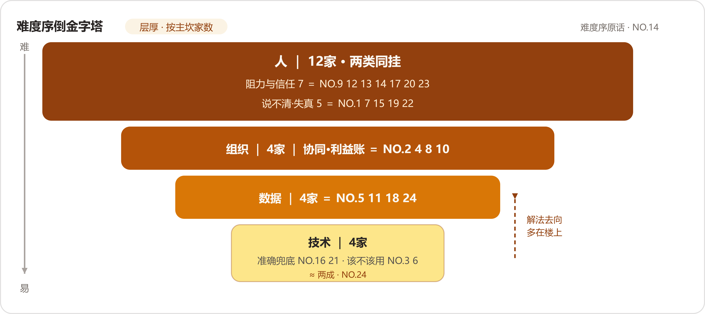
四层倒金字塔，层厚按主坎家数。人层两类同挂十二家；技术层最薄，且解法多半不在本层。
塔上还有一处细节值得看：挂在技术层的两类，解法多半不在技术层。准确性坎的解法是人签字、是验收跟客户共定（NO.21、NO.1）；该不该用的答案是业务判断（NO.4）；数据层的解法也常常要到楼上去找——补课要花钱花时间（NO.18），拿不到要跟部门谈、跟企业负责人谈（NO.4、NO.11）。NO.4在收尾把这件事说破了："模型能力只是整个系统的一部分，真正决定能不能上线的，还有数据、工具、评估和兜底。"所以这座塔从下往上读更顺：底下两层的坎，药大多存放在顶上。头重脚轻已经够吃力了，脚下两层还存不住自己的解药。
照实记一个读时的保留：这二十四份答案出自FDE之手，二十四个项目到最后都做成了——模型真的不行、项目半途放弃的案子，进不了这本文集。所以两成这个数，是活下来的人报的。立项那一刻的技术风险并没有凭空消失，只是被挪到别处消化了：先用小口子试出来，再用三层评估样本把出丑的地方圈住。换句话说，技术只占两成有一个前提——另外八成的功夫先花到位，技术才有资格只占两成。
把这一问的经验收成一张表，就是坎的分类清单加难度序判断：
| 层 | 坎类（主坎家数） | 怎么认出它 | 解法锚点 |
|---|---|---|---|
| 人 | 阻力与信任（7）＋说不清与失真（5） | 员工开始算岗位、防记录、护日程；调研拿回来的和现场对不上 | 先递小恩再谈转型 NO.12；小痛点换真ROI NO.9；一把手加调KPI NO.17；人的去向讲在前 NO.18；一号位采用 NO.23 |
| 组织 | 协同与利益账（4） | 数据要不来、需求回得慢、冲突不上会议桌 | 执行一号位＋方案留容错 NO.4；顾虑会前单独化解 NO.8；层级责任先讲清 NO.10；利益账算给各方看 NO.2 |
| 数据 | 底子薄／拿不到／格式杂（4） | 有没有、给不给、干不干净，三问定长相 | 先补课再上AI NO.18；能力送进门 NO.11；合规搬到最前面 NO.5；规范＋三层评估样本 NO.24 |
| 技术 | 准确性兜底（2）＋该不该用（2） | 错一次的代价大；形态跟现场对不上 | 分层设计留参数 NO.21；系统设计框住随机 NO.16；脚本够用就不上Agent NO.22；投入由轻到重 NO.7 |
至于总解法，二十四家给出的答案一致得出奇：不辩解，不硬推，小切口让人亲眼看见。NO.3说得最白："这个过程中，我们发现让用户亲眼看到价值，比任何解释都有效。"NO.21的做法是"让设计人员在实际使用中体验价值，而非强行说服"。NO.23的路线图是"这条路是边做、边证明、边挖下一步需求，先让客户看到结果，再去谈更大的蓝图"。NO.9那边的转折，也发生在业务人员亲眼见到省下的时间之后。六类坎、四层塔、几十种招式，收口处是同一个动作——把话收起来，把效果端出来。
读到这里，再回看开篇那句被二十四家轮流说过的回声，它多了一层意思。坎不在模型，第一次读像在替模型说好话；读完这些翻车和救火再读，它更像一张工作分配单——技术那两成，工程师自己能扛；剩下八成，要有人进到现场去，跟怕丢岗位的员工、不给数据的部门、没补完的信息化，一道坎一道坎地把账算清。
"AI转型的第一步，往往发生在AI之前。"
二十四份答卷连着读，读到中途会起一种错觉：同一份答案被打印了二十四遍，只是换了抬头。审车管所材料的、给诉讼律师做工作台的、在黑河口岸装车的、替工程租赁企业接长尾订单的、给澳洲乳企盯动销的——行业隔着千山万水，翻过页来，条目对得上。先把总判断说定：
二十四份答卷，重叠成了一套。重叠本身就是结论：AI落地的难点，早已不在AI那一侧。
三个观察撑这句话。
第一个观察是版式。问题问"怎么做"，答卷几乎全部自带编号，第一、第二、第三，一路数到第五的都有。没有人商量过格式，是各家自己把经验压成了清单交上来的——原料就是清单体，这一问的综述也只能跟着长成清单体。
第二个观察是词汇的位置。模型、Agent、RAG这些词在答卷里也出场，出场的方式几乎全在被排位：工业物料采购（NO.8）说，找到真正值得解决的问题之后，快速做一个AI应用"反而排在后面"；制造业师徒带教（NO.1）说，技术指标"漂不漂亮退居其次"；非标制造报价（NO.17）说，挑场景时"模型能力排在后面"。被反复交代的，全是业务侧的事：真问题怎么找、现场怎么进、第一刀怎么切、流程怎么嵌、判断留在谁手上、企业最后怎么才会自己走。
第三个观察是收尾的漂移。答卷答到后半段，经验之谈普遍滑向职业自述，"FDE该是什么人"占了大量篇幅。问的是部署，答的是人——这个集体动作本身，就是难点所在位置的一次自证。
为什么隔行如隔山的二十四个人，会交出同一套答案？我们的读法是：题目问的是AI怎么部署，他们答的其实是组织怎么接受一件新东西。业务、现场、信任、流程、责任人、判断——把"AI"两个字遮掉，这份清单拿去问二十年前上ERP的人，大体也用得上。行业千差万别，组织消化一件新工具的路径就那几步，二十四家答的全是那几步。反过来，替"各自独立作答"作证的证据也有：讲到同一件事时，各家用的比喻完全不同——桃子、锤子找钉子、自行车、破冰、楼层、护城河，没有共享过一个比方。结构撞在一起，词汇各走各的路；这批人没有互相抄，是难处本身长一个样。
跟第三问的关系也顺便说清：那一问我们从他们做过的事里拆出一副六步骨架，是动作的复盘；这一问不用拆——他们自己把经验编好了号交上来，是忠告的原件。骨架六步，忠告九条，形状不同，走向一致。
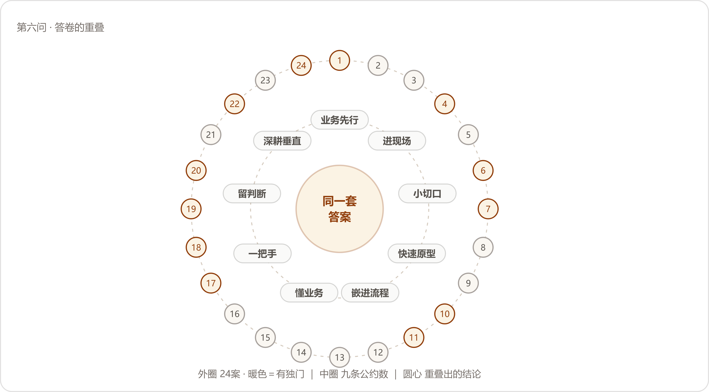
重叠的地形：二十四份答卷收拢成九条公约数，圆心只剩一句话；个体差异没有消失，被挤到了边缘。
把二十四份答卷里的建议逐条登记、归并，得到九条。口径交代在先：同一案可以在几条里同时出现；每条下面点名几家，按"明确把它立成一条经验"数，顺带提过的没有计入；家数咬得紧的条目，先后次序里有编辑的裁量，名单开在下面，读者可以自己数。
还有一件事值得先记：九条里过半自带"别"字——别拿AI找场景、别一上来做大、别停在Demo、别把落地理解成替代人、别急着做标准化产品。问的是怎么做才好，答出来的多是别怎么做。我们的读法是：这批忠告多半是学费换来的，学费都记在错误那一侧，所以开口就是"别"字当头。
多数答卷把它放在自己的第一条讲，位置本身就是态度。讲的人分三种讲法，说的同一件事。
换问题的一派：消防维保数字化（NO.13）转述企业常问的"我们哪里可以用AI？"，说该问的是业务流程里哪里存在真实的成本和效率问题；车管所审材料（NO.2）进企业先只问一件事——
"我现在更习惯先问企业一个问题，你能不能先列出企业经营过程中最重要的十个问题。"
换座位的一派：工程租赁获客报价（NO.23）说"我们不会刻意要求自己每个项目都必须“AI味很重”"，能用传统数字化解决的就用传统数字化；律所案件工作台（NO.3）给出了对仗的两句："不了解业务，就无法判断什么问题值得解决。不了解技术，就无法找到合适的方法。"
点名错误的一派：汽配供应链经营（NO.20）的句子最直——
"我现在越来越觉得，企业做AI，最容易犯的错误就是为了AI而做AI。"
工业物料采购（NO.8）给这个错误起了名字："这很容易变成拿着锤子找钉子。我们更希望反过来。"生物科技上市公司（NO.18）把同一层意思走成了否定式："FDE真正重要的能力，是知道哪里不应该使用AI。"国企电商子公司（NO.14）补上验收线："技术做不到的不要硬做，做出来没有价值的也不要做。"此外，TikTok达人建联（NO.5）、基金公司研发转型（NO.7）、建筑消防施工图（NO.21）、澳洲乳企动销（NO.24）、制造业师徒带教（NO.1）都在答卷开头交代了同一个意思：先理解业务在解决什么，再谈AI放哪儿。
为什么各家几乎都把它放在第一条讲？因为二十四家进场时见到的第一面长得一样——
"老板知道AI很重要，信息部门也知道AI很重要，但你问“你具体想解决什么问题”，很多人反而说不清楚。"
AI先摆在那里、再找活给它干，项目从第一天起就立反了。能抄走的判断跟着就出来：听项目的开场白，开口先讲模型讲架构的，先缓一缓；开口先讲一笔损失、一个数字的，可以往下谈。
这一条与第三问的"进现场"同源，姿态变了：那一问里它是进场动作，这一问里它成了被反复叮嘱的经验——当年怎么进的场，如今就主张别人怎么进场。讲这条的有央国企财务流程（NO.9）、鞋服电商素材（NO.12）、车管所审材料（NO.2）、律所案件工作台（NO.3）、城市规划研判（NO.4）、跨境物流装载（NO.6）、工业物料采购（NO.8）、消防维保数字化（NO.13）、建筑消防施工图（NO.21）。NO.9把方法和原因一起给了：
"别坐在会议室里等业务人员告诉你需求，真正需要做的是跟着他工作，看他到底怎么做。很多业务规则，业务人员甚至自己都很难一次性讲清楚，但你跟着他做一遍，就能发现大量隐藏在流程里的判断和经验。"
NO.12的一句话可以当这一条的门牌："很多需求在会议室里是问不出来的。"NO.13补了另一头的难处："老板不知道具体需求细节，员工在正式场合未必敢表达真实想法。"两头都堵着，剩下的路只有现场。NO.3把这一步抬到了资格的高度："当自己不了解一个行业时，没有资格替行业定义问题。"
摆在一起看，九家走出了三档深度：看一遍（NO.21守着CAD看设计师逐条核规范、为一个参数反复改图）；跟着干（NO.9的业务陪跑）；派驻（NO.2把驻场做成了制度——"所以我们现在也会把人员派驻到客户现场，因为只有靠近现场，你才能知道工作人员每天到底在做什么，什么事情最耗时间，哪些流程大家已经习以为常，却可能正是最值得AI改造的地方"）。NO.2那个材料审核问题，就是驻场时一点点看出来的，客户起初没觉得它算个问题。能抄走的判断：评估一个AI项目，先问它的需求从哪儿来；从会议室来的，降一级再用。
这一条一半是方法论，一半是生意经。讲这条的有央国企财务流程（NO.9）、线下零售对账（NO.10）、工程租赁获客报价（NO.23）、外贸资料整理（NO.11）、车管所审材料（NO.2）、城市规划研判（NO.4）、工业物料采购（NO.8）、非标制造报价（NO.17）、澳洲乳企动销（NO.24）。
买方的心思，NO.11写得最清楚：
"很多老板一开始只愿意拿一个点试，做出结果以后，才会把后面的十几个、几十个问题交出来。"
卖方的处境，NO.23算得最露骨：尤其对没有品牌、没有咨询溢价的小团队，一上来谈企业AI转型基本没戏，只能先拿出一个小而具体、客户马上看得到效果的问题，先做出结果，再谈路线图。第一单又小又甜，是两头共同的避险动作。挑第一单用的尺子，NO.10交了一整把：
"一个企业可能同时给你十个需求，但第一个项目不能只看哪个最有意思，需要综合判断：业务价值是不是足够显性、正反馈是不是来得足够快、涉及的人是不是足够少、业务流程是不是足够清晰、用户需要投入多少、技术成本是不是可控、最终价值能不能算出来。"
他自家给这把尺子的结论是"没有所谓的“六边形完美任务”，最终一定是权衡"。NO.9的三条标准更顺口：业务真的痛、实现相对可控、ROI能够快速被看见，先把第一个项目做成“破冰项目”。NO.8的版本讲组织信心：一开始尤其应该选择能够快速产生结果的场景，早期的结果不只是技术验证，也在给组织建信心。NO.17给的是推广次序：先找关键人和业务骨干用真实订单试，再让一个小组试，结果稳定以后才扩大到部门。
能抄走的判断：第一单做成什么样算成，往第二单上想——NO.5的经验正好放在这里当注脚，一期做完以后二期需求自己长出来，因为第一个问题解决之后，企业会看见下一层问题。
讲这条的人少些，讲出来的全是节奏感：基金公司研发转型（NO.7）、本地生活短视频（NO.15）、非标制造报价（NO.17）、鞋服电商素材（NO.12）、线下零售对账（NO.10）、TikTok达人建联（NO.5）、外贸资料整理（NO.11）。NO.17把理由放在前头：
"B端客户很多时候并不知道自己到底需要什么，所以我习惯边干边改，快速做出一个阶段性成果让客户看到，再通过真实反馈不断修正。"
NO.15把投入的重心挪了个位置：
"第一版Demo往往并不难，真正决定项目能不能落地的，是前期需求理解、后期打磨，以及客户能不能持续参与迭代。"
NO.12的说法最短："调研之后，尽快做出一个能用的东西，让客户用起来，反馈之后再改。"NO.10盯的是循环："当第一个正循环跑起来之后，信任就建立了。"NO.5把两种项目周期摆成了两条链：传统项目是"需求来了 → 做系统 → 验收 → 交付"，FDE更像"进入业务 → 理解问题 → 做第一版 → 让业务使用 → 根据反馈继续改 → 找到新的业务问题 → 再迭代"。
同一条忠告，三种时间尺度：当场（NO.11把企业负责人眼前的问题解给他看，"概念听过以后很容易忘，但一个真实问题被当场解决，老板会立刻知道AI跟自己有什么关系"）、几天（NO.12调研完尽快做出能用的）、一期（NO.5做完一期等二期自己长出来）。尺度不同，道理是同一个：方案里缺的信息长在用户的用法里，坐着讨论够不着，跑起来才够得着。NO.7在这条上还往前多推了一步，把原型当调研用——这一笔只此一家，单记在独门里。
"Demo"这个词在答卷里出现时，前后几乎总跟着"停"字。讲这条的有制造业师徒带教（NO.1）、车管所审材料（NO.2）、鞋服电商素材（NO.12）、本地生活短视频（NO.15）、消防维保数字化（NO.13）、电信数据分析（NO.16）、跨境物流装载（NO.6）、建筑消防施工图（NO.21）、澳洲乳企动销（NO.24）。什么算进了流程，NO.2的判据最清楚：
"AI真正落地，是它成为业务流程的一部分，旁边不用再单独多一个AI工具。"
各家给"停在Demo"画的像，拼起来是五幅。NO.12画的是账号："如果原来的工作方式完全没变，只是每个人多了一个AI账号，那谈不上真正的AI改造。"NO.15画的是个人使用："真正能够形成企业级价值的，是让AI在流程里承担一个稳定的节点，甚至重新设计整个流程。"NO.16画的是半成品："现在做一个Agent并不难，难的是把它做成生产就绪。"NO.13画的是中间那段路：一个Demo很容易做出来，从Demo到真正融入日常使用，中间有大量需要验证和调整的环节。NO.21画的那格最小也最硬：
"在这个案例中，如果AI生成的图纸格式不符合设计院的标准，即使内容正确也无法进入实际流程。"
内容全对，格式不对，图照样进不了设计院的门。验收嵌没嵌进去，看的正是这种小格。能抄走的判据：AI上线之后，原来的流程少了一步没有？多了一步没有？一步没变，就还停在Demo。NO.1给这一条起的名字可以直接刻在验收单上："AI一定要进入流程，不能停在Demo里。"NO.6则把它说成了信念："未来真正有价值的AI，一定长在企业的真实流程里，而不是停在Demo上。"
前五条讲项目，这一条讲人，也是答卷后半段最集中的话题。点名这条的名单最长：制造业师徒带教（NO.1）（"FDE最重要的能力其实不在“知道多少模型”上"）、城市规划研判（NO.4）（做完项目最大的理解变化，是"不再觉得FDE首先是一个“懂模型的人”"）、跨境电商库存补货（NO.22）（"FDE真正的壁垒并不在“会不会搭一个Agent”"）、工程租赁获客报价（NO.23）、外贸资料整理（NO.11）、电信数据分析（NO.16）、线下零售对账（NO.10）、央国企财务流程（NO.9）、车管所审材料（NO.2）、律所案件工作台（NO.3）、TikTok达人建联（NO.5）、跨境物流装载（NO.6）、基金公司研发转型（NO.7）、消防维保数字化（NO.13）、汽配供应链经营（NO.20）、建筑消防施工图（NO.21）、澳洲乳企动销（NO.24）。
口气最硬的一句来自NO.10：
"会做就是会做，不会做就是不会做；懂这个行业就是懂，不懂就是不懂。"
懂行这件事装不出来，问三个业务问题就会现形。NO.16给这个判断配了一个我们全程最喜欢的比方：
"如果你只知道自行车，那么你看到一个很远的地方，就只能想办法骑自行车过去。但如果你同时了解汽车、飞机以及其他交通工具，你才能真正判断什么场景应该用什么工具。"
只认得一种工具的人，看什么问题都长着那个工具的形状。这一条的另一半说法叫翻译：NO.5说要"把技术语言翻译成业务语言，把业务问题再翻译成可以落地的技术方案"，NO.7的版本是"把AI的能力翻译成企业真正能用、能跑、能沉淀的工作方式，比单纯把一个AI工具带进企业更重要"。
为什么这条点名最长？我们的读法：模型那一头，大家买到的东西一样；业务那一头，每家都得从头来。能拉开差距的部分，恰好都在买不到的那头。这条也是九条里唯一讲人的，其余八条讲事；讲着讲着经验滑向人，前文提过这个漂移——落地的事做完，剩下的难关多在人身上，第五问把那一层铺开过。
讲这条的人最少，用词最重。国企电商子公司（NO.14）的原话是：
"中大型企业的AI落地一定是一号位工程。"
他把反面也写全了："如果老板只是说一句“我们要AI化”，然后把事情扔给IT部门，最后很容易变成一个技术项目，最后大概率面临失败。"非标制造报价（NO.17）的版本语气相同，理由也给足了：
"企业AI落地不是交付一个软件就结束了，当AI真正开始改变业务流程，它一定会继续影响岗位职责、KPI、部门协作甚至组织架构，这些事情不是一个乙方FDE能独立推动的，老板必须站出来。"
生物科技上市公司（NO.18）说大企业的AI转型"本质上一定包含组织建设"；汽配供应链经营（NO.20）从业务侧撑腰："真正每天承受业务问题的人，才最清楚什么地方值得改。"央国企财务流程（NO.9）把"一把手"翻译成了可操作的版本——让业务团队共同承担结果，"甚至在条件允许的时候，把AI改造和业务部门的KPI、OKR结合起来，让业务部门自己也有动力把项目推下去"。
说这五句话的五家，项目全在中大型组织里动过组织本身：编制、KPI、部门协作。项目小的时候这句话用不上；一旦AI动到岗位职责和考核，它就从建议变成前提。频率低的原因也在这里——组织代价没付过的人，说不出这句话。
方案层的分工怎么划，第三问铺开过；这一问问经验，忠告集中在两个字上——留人。讲这条的有TikTok达人建联（NO.5）、建筑消防施工图（NO.21）、跨境电商库存补货（NO.22）、生物科技上市公司（NO.18）、本地生活短视频（NO.15）。NO.22的一句话可以印在所有AI项目的开工纸上：
"我认为这是比较现实的AI落地方式，AI负责处理大量重复工作，人负责最终判断。"
NO.5把分界线画得具体："它适合接手高频、重复、有明确规则的事情，但高度依赖信任、关系和判断的工作仍要留给人。"NO.21用的是责任语言："规范化的绘制和规则检查适合AI承担，但最终的专业判断和责任必须保留给设计人员。"NO.18把这张分工表往组织里推了一格：
"AI上线以后，人的职责是什么、绩效怎么变、原来的流程哪里该取消、哪里需要新增人工判断、什么事情让AI做、什么事情必须由人负责，这些问题如果没回答清楚，企业买再多工具，也很难真正变成生产力。"
这一条里最值得记的是默认值的方向。五家里四家把默认值设在人这一头，只有NO.15把默认值设在AI那一头：
"我现在做项目时，会默认电脑、手机上能够规模化完成的事情，都值得先尝试AI。然后再通过实际测试，把做得不够好、不够稳定的节点逐渐交还给人。"
方向相反，划线的方法相同：都靠实测，都留退路。这也替这一条留了个省事的用法——分工表不要在会议室里定稿，先按一头的默认值跑起来，让测试结果改它。
最后一条讲项目结束之后的事。讲这条的有TikTok达人建联（NO.5）、工业物料采购（NO.8）、鞋服电商素材（NO.12）、跨境电商库存补货（NO.22）、工程租赁获客报价（NO.23）、消费品包装审核（NO.19）、汽配供应链经营（NO.20）、央国企财务流程（NO.9）、律所案件工作台（NO.3）、澳洲乳企动销（NO.24）。NO.5把这条的账算成了数字：
"当你足够懂一个行业之后，第一次做这个场景可能需要100%的成本，第二次可能变成80%，第三次可能变成60%，你不断把经验、工作流、技能和业务理解沉淀下来，才能真正形成自己的壁垒。"
NO.24看的是竞争的那头："未来企业之间竞争的重点，将逐渐从模型能力转向对业务的理解深度。"NO.8在攒什么上立场分明："先标准化的应该是方法，产品可以先放一放"，攒的清单他也开出来了：
"怎么做问题发现，怎么做根因分析，怎么判断用例，怎么定义ROI，怎么做小规模实验，怎么和业务部门一起验证，怎么持续衡量。"
NO.12给这件事立了验收线：
"如果每做完一个AI项目，只有客户拿到了一个系统，而FDE自己什么都没有沉淀下来，那这个项目其实还没有真正结束。"
这条里有一处小分歧，值得单独看。NO.8和NO.20劝人先别急着做产品（NO.20的原话是"先进入真实场景，把一个问题真正解决掉，再从多个项目里找到共通的方法，最后再判断哪些部分值得标准化"）；NO.19和NO.23说底层可以通用、业务必须一家一家定制（NO.23的版本是"底层能力标准化，业务解决方案保持一定程度的定制化"，NO.19补了边界："底层的模型、架构、知识库、Skill这些能力可以复用；但每一家企业的人、流程、组织、经验和决策方式，都需要重新理解"）。两派合起来的意思并不冲突：攒得动的攒成家底，攒不动的不要硬压成产品。往企业那头的留法这一问里也有人讲（NO.11想让客户遇到新问题时，第一反应从“找人”变成“自己先试”；NO.18协助企业建了自己的团队），本篇不重开那本账。
重叠到什么程度，有个笨办法可以量：把只有一家讲、其他家没碰过的单独捡出来。捡出十二件，全是手法，没有一件是方向——方向早被公约数占满，独门只长在操作上。连例外都长在边缘，这算是重叠的又一个旁证。
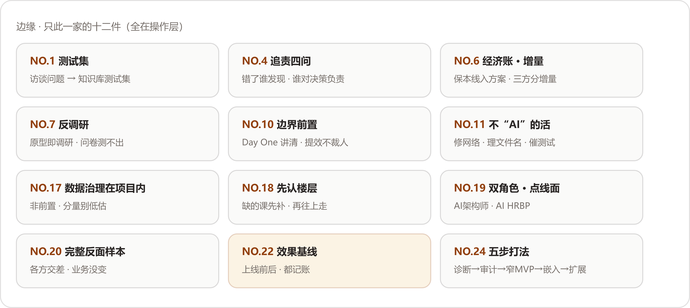
十二件独门全是操作手法；方向性的独门一件也没有。
先记三件我们觉得最有价值的。
第一件，制造业师徒带教（NO.1）：问题清单直接变测试集。
"这个案例里，新人高频问题在访谈结束后没有停留在报告里，直接变成了知识库测试集。"
多数项目的调研记录交完就归档，这家把调研的副产品直接焊进了验收——AI最终验证的是"能不能解决真实业务问题"，测试集从第一天起就是真的。
第二件，跨境电商库存补货（NO.22）：效果基线。二十四案里唯一一处答卷人给自己记过的段落：
"这个案例最大的遗憾，就是我们当时交付完以后，没有把后续效果完整追踪下来。"
补救的办法他想好了："所以如果让我重新做一遍这个项目，我可能会在一开始就设计好一套“效果基线”。"上线前记下人工要花多少时间，上线后接着记，价值才有对照的依据。
第三件，汽配供应链经营（NO.20）：唯一完整的反面案例。他以前所在的金融机构上过一套本地部署的AI作图系统，图片生成出来实际不能用，结局是这样的：
"最后IT部门完成了“AI转型”，合规部门完成了数据安全要求，领导也可以说企业完成了AI转型，但业务部门还是回去找设计师做图。"
"从企业经营的角度看，什么都没有改变。"
这份材料为什么反而最值得读？因为它是对照组。九条公约数在这个案子里被反着犯了一遍：从AI出发、业务部门没有动力、系统停在各方交差上。二十四家几乎全是幸存者，只有这一案把公约数缺位的失败方式完整演了一遍；清单的可信度，有一半是它垫的。
其余九件列在下面：
九条公约数是他们的经验；把每条翻译成项目上能对账的一问，就是这一问的方法论。从前往后过，一道卡住，先停下补课，不要急着开下一道——次序这个讲究是NO.24给的："顺序不能乱，理解业务永远在技术选型前面，赢得信任之后才扩面。"
| 查 | 问什么 | 怎么算过 | 谁教的 |
|---|---|---|---|
| 一查方向 | 先有业务问题，还是先有AI | 问题讲得成一笔损失：一年几次、占几个人、值多少钱 | NO.2/8/20 |
| 二查现场 | 需求从哪儿来 | 来自工位：能复述员工一天怎么过 | NO.9/12/13 |
| 三查第一刀 | 第一个口子切在哪儿 | 又小又甜：反馈快、人少、账算得清 | NO.9/10/11 |
| 四查原型 | 第一版拿去做什么 | 先给人用，跟着反馈改 | NO.7/12/17 |
| 五查嵌入 | AI进流程了吗 | 原流程少了一步或多了一步，旁边没有多出来的AI工具 | NO.1/2/12 |
| 六查自己 | 干活的人懂不懂这门生意 | 用行业的账和行话，把客户的事讲得清 | NO.10/16/24 |
| 七查当家人 | 一把手在不在场 | 编制、KPI、预算，至少动了一样 | NO.14/17/18 |
| 八查签字 | 最后谁签字 | 签字担责的格子里写着人名，分工表跟着绩效改 | NO.5/18/21/22 |
| 九查家底 | 项目结束留下什么 | 客户留下能力，或自己攒下方法，至少占一头 | NO.5/8/12 |
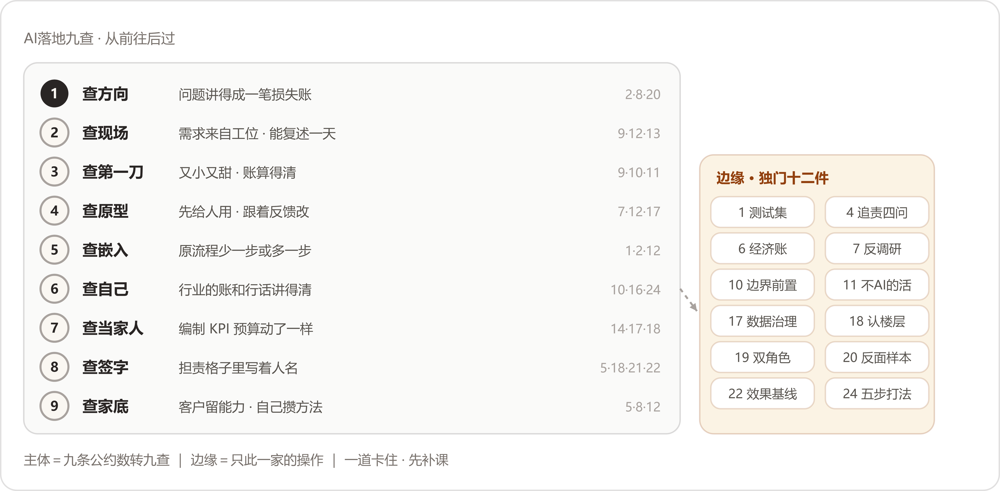
主体是九条公约数转成的九查，右侧的坡上是长在边缘的十二件独门；从前往后过，一道卡住先补课。
照实记两条读时的保留。其一，二十四家都是做成了的，NO.20那个反面也是别人家的失败被他讲成了自己的经验——九查教怎么把项目做对，教不了这个项目该不该接，后一门功课在选场景的手里。其二，九条的先后有编辑的成分：各家交卷时，业务先行多放在第一条，懂业务多用来收尾，中间各条的次序五花八门；材料给了内容，没有给排序，排法是我们的裁量，使用时按自己的项目改即可。
收尾想把NO.24的两句话留给读者，九条公约数，十几个字就装下了——
"模型是入场券。领域加交付，才是护城河。"
| 案号 | 案例标题（Datawhale《FDE案例100》） |
|---|---|
| NO.1 | 从师徒带教到AI辅助培训：FDE用AI破解制造业经验传承难题 |
| NO.2 | 从人工审材料到自动化办件：FDE用AI提升车管所网办效率 |
| NO.3 | 从案头工作到智能协作：FDE用AI优化诉讼律师的案件处理能力 |
| NO.4 | 从人工研判到智能调度：FDE用AI重构城市规划研判流程 |
| NO.5 | 从大海捞针到全链路提效：FDE用AI重构TikTok达人建联与履约 |
| NO.6 | 从经验装车到智能规划：FDE用AI优化跨境物流装载效率 |
| NO.7 | 从个人提效到组织能力：FDE用AI推动企业研发转型 |
| NO.8 | 从物料难找到精准定位：FDE用AI减少工业企业采购浪费 |
| NO.9 | 从"表哥表姐"到智能执行：FDE用AI重构央国企财务流程效率 |
| NO.10 | 从人工核对到智能对账：FDE用AI让线下零售对账又快又准 |
| NO.11 | 从文件散乱到随取随用：FDE用AI帮外贸企业把资料变成可用资产 |
| NO.12 | 从人工盯图到公司级生产：FDE用AI重塑鞋服电商素材工作流 |
| NO.13 | 从纸质流程到数据驱动：FDE用AI推动传统消防维保企业数字化转型 |
| NO.14 | 从技术交付到业务自驱：FDE用AI推动国企工作流程真正落地 |
| NO.15 | 从经验写稿到稳定量产：FDE用AI重构本地生活短视频内容生产 |
| NO.16 | 从人工分析到分钟级洞察：FDE用AI重构电信网络数据分析 |
| NO.17 | 从老师傅报价到AI深度协同：FDE用AI重构非标制造售前链路 |
| NO.18 | 从纸质台账到AI经营：一家生物科技上市公司的0帧起手数智化 |
| NO.19 | 从人工排队到审核前置：FDE用AI重构消费品研发协同与包装审核 |
| NO.20 | 从看不清订单到看清经营：FDE用AI让制造企业的经营流程更透明 |
| NO.21 | 从人工绘图到智能协作：FDE用AI重塑建筑图纸交付流程 |
| NO.22 | 从库存割裂到业务联动：FDE用AI打通跨境电商的库存、补货与广告决策 |
| NO.23 | 从企业负责人报价到长尾承接：FDE用AI打通工程租赁获客与报价 |
| NO.24 | 从发货到动销：FDE用AI打通跨境快消的海外数据断层 |
以上二十四家的解法速查（按方案分类），见附录K。
先从一个十几分钟的小场面讲起。
一家做外贸礼品的公司，企业负责人手里拿着一张照片：一个像三角尺的东西，上面一排不规则的刻度。客户要订这个产品。美工看过，3D打样打过，没人说得清那排刻度是什么；准备人工照着抄，又抄不准。企业负责人估计，这件事需要研究一两天。
后来有人把照片交给AI。十来分钟，查清了：那是一把角度尺，刻度代表角度。
这位企业负责人随后提出了十几二十个新需求。AI是否管用，他已经亲眼见过。
这个场面出自一本案例集。案例集收了二十四家企业的AI落地经历，作者是替企业做落地的工程师（FDE，前沿交付工程师的缩写，下文统称FDE）。律所、车管所、电信运营商、十几人的外贸公司、年流水十亿的鞋服电商，都包含在内。
将二十四家的标题排在一起，会发现同一种句式：从师徒带教到AI辅助培训，从人工审材料到自动化办件，从纸质台账到AI经营。二十四行"从……到……"，说的都是同一件事：原先完全依靠人力的工作，现在由AI分担。
做法也相近。四个小组分头把二十四家的原文逐字读全，做法拆开、归拢，再派四组人回头对原文查遗漏，补全之后画成一张图。
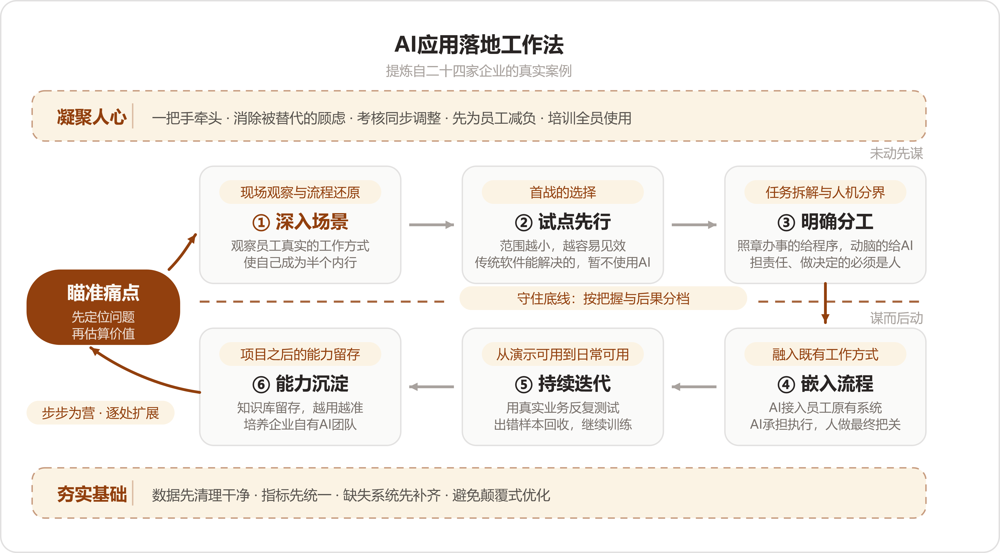
这张图叫AI应用落地工作法。中间六个格子是主轴六步：深入场景、试点先行、明确分工、嵌入流程、持续迭代、能力沉淀。围着主轴还有五个部件——入口的瞄准痛点，上面的凝聚人心和下面的夯实基础两条保障线，中间一条守住底线虚线，左下角回环上的步步为营。十一个词连起来，就是口诀：
瞄准痛点、深入场景、试点先行、明确分工、嵌入流程、持续迭代、能力沉淀；凝聚人心、夯实基础、守住底线、步步为营。
读图从左边的瞄准痛点进入：上排三格对应动手前的问题梳理，下排三格对应实施落地；两条保障线从头贯到尾；守住底线那条虚线界定机器与人的分寸；左下角的回环，一处做成再扩展下一处。
本附录的读法：分三篇讲完十一个部件——上篇四节（瞄准痛点加上排三步），中篇三节（下排三步），下篇四节（两条保障线、红线、回环）。每节里出现的案号（NO.X）指向案例集里的案例，案名对照表见附录G末尾。各家的独有招法分两层安排：正文讲到哪家的招法就地记录，篇末另收一张总表。公共的进骨架，独有的进变招。
动手之前有四件事：找准问题，看清问题，选准小切口，明确分工。二十四家案例中明写走过弯路的有十几家，弯路多半出在这几步上：问题判断有误，场景了解过浅，切口过大，分工不当。技术本身反而排不上主因。
NO.20是一家汽车零部件企业。企业负责人的ERP（企业管理软件）数据齐全，但他始终心中无数：客户订单进行到哪一环节，采购是否超量，应付供应商的款项能否对上——事项过多，只能逐件向下属询问。
FDE进场后的第一件事不是演示AI能做什么，而是提出三个问题：
企业负责人顺着这三个问题，将订单、生产、采购、库存、发货、回款中真正放心不下的事项逐一列出。AI后续所做即对照这份清单：应付款与客户订单核对，库存数字异常监测，异常发生时主动推送。
换一种问法，结果完全不同。问"你想要什么AI功能"，得到一张功能清单；问"每天最担心什么"，得到企业的真实痛点。两张清单外形相近，实际用途截然不同。
痛点还须能折算为金额。NO.8是一家管理大量物料的海外工业企业，所有部门抱怨的是同一句话：ERP不好用。这句话无法作为开工依据。FDE将"一个物料找不到"沿链条下追：找不到，便重新录入一条；录入后便形成重复数据；数据库质量日益恶化；随后便是采购错购与重复采购。工业采购错购通常不退，物品在仓库搁置数年，最终按规则报废。
沿此链条追踪到底，"ERP不好用"转化为"每年浪费多少采购预算"。后者才可作为项目的起点。NO.8开工前先立账本：一年能减少多少损失，数字如何计算，数据来自何处，最终由谁确认。价值算出后，还须由客户方的业务人员确认"对，这笔钱确实是因为这个应用被节省下来了"，这笔账才能成立。
也有项目并非从明确的痛点开场。NO.2的FDE进车管所，接手的是一项无人愿接的遗留系统运维。驻场期间，他将网办业务完整摸清；真正促成立项的是业务条件变化——经济环境收紧，驻所内负责打包寄递的快递企业经营压力上升，原先不够痛的效率问题随之变得现实。痛点可以问出来，也可以在驻场中积累出来，落点相同：足够痛，且金额可算。
| 问"想要什么AI功能" | 问"每天最担心什么" | |
|---|---|---|
| 得到什么 | 一张功能清单 | 一张担心清单 |
| 清单来源 | 对AI的想象 | 每天真实发生的业务 |
| 照单实施 | 容易做出无人使用的功能 | 每一条都关联资金与责任 |
痛点找对了，下一步是看清这个问题在真实工作中的具体形态。二十四家在这一步上的做法高度一致：先到现场观察，会议室里问来的信息不作数。
主案看NO.1，一家德国斯图加特的零部件厂，七八十人，想把老师傅的经验留下来。FDE最初的做法很标准：访谈，高层、中层、一线逐一交谈。
实际做下来发现行不通。一线员工不愿意花时间受访，很多细节自己也说不出来。
他改了办法：跟着员工走一整天的流程。看他一天做什么，在哪里停下来，哪里需要问别人，哪些问题翻来覆去地出现。这些反复出现的停顿和提问，正是新人培训真正缺少的内容，后来知识库的骨架即照此搭建。
NO.13把这层意思说得最直白。消防维保企业的一线人员常年在户外作业，被叫进会议室面对企业负责人，只能被动回答被问到的问题；FDE走出会议室，看他们怎么填检查表、怎么交接资料、哪个步骤反复出错，用现场流程反推真实痛点。这家企业负责人的痛点本来只有一个字：看不见——哪些项目的维保执行到位了、哪些客户的风险还没处置，"汇报和现场之间，永远隔着一层信息差"。
再看一个更彻底的变体。NO.22是一家东南亚服装跨境电商，客户主动找上门时说的是"能不能把这个SaaS（订阅制的在线软件）和飞书打通"，这话照办就只是一个接口项目。FDE让客户把每天的工作录屏演示，连看几轮才发现接口背后压着一整条链：物流靠拍照识图、人工填数据追单号，补货靠人从SaaS里提取数据填Excel按公式算，广告每天在消耗而库存见底也无人过问。客户口述的需求，距离真实的困境还很远——录屏里那条链才作数。
案例讲完了。做法归拢为下面这张清单——从这里起讲普遍做法，不再指向具体案例。
去之前：摆正身份
在现场：至少跟一整天，从开工跟到收工
跟岗时记四样东西：
第4样最有价值：说得出来源的道理在文档里，说不出口的，正是老师傅的经验显露之处。
此外在现场还可以做两件事：
看完之后：两件事
问题看清了，不要急着摊开做。二十四家几乎都从一个小口子起步。
NO.11就是本附录开头那家外贸礼品公司——十来分钟解开角度尺之后，企业负责人提出了十几二十个新需求。第一仗的价值在这里：事情本身不必大，做完要让客户觉得值——信任由此建立。
"小"的选法各不相同。NO.24是澳洲乳企的中国生意，第一版只做中国、只做一条产品线，只回答一个问题：这条线上投入的钱值不值。就这一条线做到底——数据能进来，数字可以点开，结论能进周会。跑通了，才把越南业务接进来。NO.4（一家城市规划院）从全市缩到一个区，再缩到米市巷，只挑两条业务流验证。NO.10在客户提的三个方向里选了对账，理由很实际：对账省了多少人工、少漏了多少钱，几个星期就看得见；自动客服和竞品分析，见效都要等太久。
还有一种切法要说明：小，指的是范围窄，不等于浅。NO.5做达人建联，一期建联、匹配、履约、数据四件事一起上，但只围着自己最熟的一条业务线；NO.21做消防图纸，从头就贯穿识图、规范、生成整条流程，没有停留在做一个辅助小工具。窄线做深和单点做小，都是切法。
| 选法 | 具体做法 | 适用情形 |
|---|---|---|
| 先解眼前一题 | 当场解决客户正头疼的一件小事，换取信任 | 客户尚未下决心，先让其见到成效 |
| 一条线端到端 | 范围收窄到一条产品线或一个门店，从数据到结论做完整 | 客户想做，但担心铺得过大 |
| 选取最近的目标 | 在几个候选里挑离业务最近、最快见效的那个 | 手里有多个候选，不知道先做哪个 |
第一个项目要做到八个月后才见效，多半是选错了。第一仗要快出结果，后面的合作才有基础。
前三节都站在企业一侧，这一节是技术进场的第一个判断：这批任务怎么分配。
最有代表性的拆法看NO.2。车管所的人工审核，统称"审材料"。FDE将这项工作拆开，看工作人员到底在干什么：看图片，识别材料类型，读取关键信息，判断材料合不合格，填写数据，在系统之间搬运信息——六类活。然后按工作性质配置工具：要"看"的交给机器视觉和OCR（文字识别），从合同这类复杂文本里提取信息的后来交给大模型，重复填写和搬运的交给RPA（按规则自动操作电脑的软件机器人）。一摊"审材料"拆成六类，各配各的工具，自动化才能落地。
拆的对象还有人的经验。NO.15是一家抖音本地生活代运营，高峰期一天要产两三百条文案。会写的人有，但能力复制不了。FDE把优秀运营头脑中的东西拆成一张输入字段表：门店什么类型，主推什么菜品，有什么活动，想突出什么卖点，内容什么方向。把依靠人的环节转化为一张张字段，AI才接得住。NO.9（一家央企科研机构的财务报销）拆得更细——员工报销一张发票，真正费时的环节在判断：
费用算差旅还是招待、记在哪个项目下，这些判断拆解清楚，AI才接得下这一环。
拆完之后分三摞，图上那三句说明：照章办事的给程序，动脑的给AI，担责任、做决定的必须是人。NO.19（一家消费品公司）把包装上的热量表和NRV（营养素参考值，食品标签上那个百分比）的计算逻辑固化成确定性代码——蛋白质2.9克、每份40克，NRV该不该是5%，从此可以复现地验证，模型只做解释和补录建议。NO.21把消防规范条文做成规则引擎：空间类型定危险等级，危险等级定喷头参数。能写成规则的，不必交给模型去"理解"。
| 摞 | 判断标准 | 示例 |
|---|---|---|
| 照章办事的 | 规则写得清楚，结果可验证 | 热量表核算、规范条文匹配、发票识别 |
| 要动脑的 | 规则说不清，要理解上下文 | 从合同提关键信息、给商品配达人、判断费用科目 |
| 担责任的 | 出错要赔钱、担责、造成安全问题 | 报价签字、方案确认、高风险处置 |
任选一个你熟悉的岗位，把它的各项工作列出来，分进这三摞。分不进去的那部分，就是AI来了之后最需要盯住的部分。
上篇四节把问题想清楚，这一篇三节把事情做出来：做进原有的流程（嵌入流程），做到能天天使用（持续迭代），做完留下能力（能力沉淀）。
东西做出来，装在哪里？二十四家的答案高度一致：装在员工已经在用的地方，不让员工为了AI多学一样东西。
这一步最值得讲的，是三个"第一版被现场推翻"的案例。
第一个是聊天框。NO.3（诉讼律师团队）最早的入口是一个智能对话框：律师登录进来，直接向AI提问。听起来是当时最自然的形态。现场观察了一段时间，推翻了——律师每次提问之前，都要先向AI重新描述一遍案件背景。
一个案件上千页材料、几个月周期、十几个当事人，一次对话根本装不下。改法是把入口改成案件工作台：先建案、上传材料，系统自动理出案件脉络，AI在这个完整上下文里干活。律师进门还是习惯性找输入框，不强迫改变——第一次使用就引导先传材料，让他亲眼看到自动生成的案件概要和人物关系图。
第二个是三维图。NO.6（跨境物流装车）的算法能算三维装载方案，FDE最初想做一套三维可视化系统给工人看。到装车现场一看就否决了：工人在车厢和货堆之间爬上爬下，那个环境根本不适合频繁操作手机。最后的输出是一张打印出来的装车指导图——货物编号、摆放方向、截面示意、装载顺序，工人带着纸干活。这一家还有一个细节：算法起初只求空间利用率最大，工人反馈有些"更优"方案需要人钻进车厢里挪货，后来改了装车顺序的设计，人站在车门位置就能装完。
第三个是平台。NO.13（消防维保）原定建一个完整业务平台，现场发现政府监管软件不能开放接口，再建一套等于让员工两边重复录入——方案改成在已有流程上做最轻量改造，一并叫停了企业准备花约十万元采购的一套用不起来的系统。NO.24（澳洲乳企）最初想搭一个专门的海外数据平台，走访一轮现场后放弃推倒重建，改在总部原有系统上叠加能力。
同一层的另一面是"接老系统"。NO.20保留客户的管家婆（一款中小企业ERP），AI在它的数据上做二次加工；NO.9的员工入口就是钉钉里的一句"我要报销"；NO.16（美国一家电信运营商）的云端Agent，数十上百个分析师照旧用聊天方式调用，网页、Teams、Slack都行。
你的AI上线后，如果员工要多安装一个App、多记一个网址、多学一套操作，这一步就还没做完。
系统嵌进流程，只算装上了。从"演示的时候能用"到"天天都能用"，隔着这一节的全部工作。
主案看NO.17，一家两三百人、年营收一二十亿元的非标制造企业，替客户报价。最初的设想很顺利：模型看懂图纸、抽出字段，按规则一算就出价。实际运行后才发现，端到端直接出的价，数字经常对不上真实成本。方案改成两步走：模型只负责把图纸信息结构化，报价回到企业自己的物料库、供应商历史价格和报价规则里匹配，每一单再经人工校准，才对外输出。
校准不是白做的。业务人员修改过的地方，随即沉淀进数据和模型：
识别准确率随真实订单持续提高，人工要审的部分越来越少。这一家的推广也有节奏：先让最懂业务的关键人拿真实订单试，再让一个业务小组试运行一到两个月，围绕几笔真实订单边用边改，最后才开启动会、全员培训、扩展到部门。
"天天能用"的标准是一遍遍打磨出来的。NO.2的识别率从七成多打磨到九成八，靠的是把真实业务里的异常样本一条条收回来：身份证只拍到一个国徽面的、各家金融机构格式各不相同的合同、字体压得极小的复印件——每一条都补成训练用的错误示范样本。NO.1把调研时统计的新人高频问题直接变成测试集：文档解析约95%，该找回来的资料能找回八成以上，达标才算路径跑通。NO.16给正式上线的系统立的规矩更严格——同一个问题问两遍，数据没变就得给同一个答案：
还有一条口径纪律：上线时间短的，不要急着报效果。NO.20明说不做"为了证明AI有效，把刚上线的项目包装成已产生巨大收益"的事；NO.7（一家基金公司的AI培训项目）那份"写代码时间省了约三分之一"的统计，自己注明只是客户短期几天内的内部统计，不应当成完整的ROI结论。
| 栏目 | 填写内容 | 来源 |
|---|---|---|
| 验收标准 | 这一步做成什么样算完成 | 现场调研积累的高频问题清单 |
| 测试材料 | 用什么测试 | 真实业务样本，含出过错的那一批 |
| 达标线 | 准确率、稳定性、成本各定一条线 | 与客户一起定，不关门自定 |
| 效果口径 | 怎么算、算给谁看、谁来认 | 开工前立的账本 |
你的验收单，第一条标准来自演示现场，还是业务现场？
主轴最后一节，问一个不太愉快的问题：服务商撤场后，企业手里剩下什么？
主案看NO.18，一家生物科技上市公司。起步的基础薄得出奇：客户关系分散在销售人员个人手里，提成靠Excel人工统计，数据延迟一个月以上是常态，HR的人事资料还在纸质文件柜里。项目做完一阶段，FDE给董事长的建议是扩充企业自己的AI团队——企业拿出二十个编制，FDE参与招聘和团队搭建。同期留下的还有CRM（客户管理系统）和数仓里的数据、销售大盘、按新人通过率持续优化的AI陪练和考试；新人培训周期从接近两个月缩到大约三周。
留下来的东西，后面还会持续起作用。NO.4的试点部门后来自己把流程做成了可复用的技能模块，有人开始自己搭建AI应用：
NO.14有个更小的样本：全员培训之后，负责行政物品的同事自己用提示词做了个查库存、提醒补货的小机器人。同事问一句"我今天要领两节电池，还有没有"，它就能答上来，缺了货还会提醒补货。这个工具本身价值不大，但它出自业务人员自己之手。NO.11把交付目标明说成"让客户越来越独立"——企业遇到新问题，第一反应从"找人"变成"自己先试"。NO.15交付时留好持续迭代的接口，让客户按自己的操作手册继续改；NO.2验收之后，和客户共同成立了一个AI创新实验室。
撤场那天，照上面这张单子核对一遍，四样留住了几样？
上篇中篇七节，是按顺序推进的。这一篇四节讲从头贯到尾的几条线：人心在上，基础在下，底线在中间，回环在末尾。这四条线不占步骤号，但从第一步到扩面一直在起作用；这几条线上成型的招法不多，都收在篇末手册里，行文不再单列变招。
先摆出NO.14（一家国企电商子公司）的一句原话，它为企业AI落地的难度排了序：
这一节讲排第一的那件事。三个现场场景，比道理更直白。
场景一：怕。 NO.17（非标制造报价）的那个岗位，原来由三到五个人承担，上AI之后一到两个人就够。员工的第一反应是担心被优化——而乙方根本没有权力安排甲方的人。这家企业在立项之前把话摊开：生产力释放出来之后，人去做什么。最后企业没裁人，调了岗位和考核，把人转向更有价值的业务。
场景二：烦。 NO.9（央企财务）的业务人员，面对自己找上门来的AI项目组，第一句话是——
解法分两层：第一个项目不要大动流程，从很小很痛的地方做出真实效果；业务尝到红利之后，把AI改造和业务部门的考核挂上钩，让业务部门自己有动力推进。
场景三：甜。 NO.12（鞋服电商）进场头一件事，解决员工眼前的小麻烦——生图要写很长的提示词、生成完还有水印要处理。员工马上感觉到，这次来的人真能帮他减少重复工作。NO.11那十来分钟解开的角度尺（本附录开头），做的是同一件事。
三条场景之上，还有一条组织线。
一把手。 NO.14的总结是中大型企业的AI落地一定是一号位工程；NO.4的经验是找到真正的"执行一号位"——能协调十个部门的总调度，而不是职位更高的副院长；NO.23把"一号位是否愿意采用"直接列为是否承接项目的判断标准。
分层沟通。 NO.5对上层、中层、基层同时谈，企业负责人讲业务目标，一线讲每天卡在哪里，两边信息拼起来事情才能落实。
教人会用。 NO.14给连提示词都不知道的员工先补认知；NO.18建议在每个业务部门树立AI提效标兵；NO.7的培训现场随时升降级——调研失真就降回基础，发现水平超预期就把储备的深层内容拿出来。
系统上线那天，怕它的人有没有比立项那天少一个？
图最底下那条带，讲的是最不起眼、也省不掉的活。
主案还是NO.18，因为它把这层意思说到了根子上。一家上市公司、生物科技行业，按想象数字化程度应该不低。FDE走进去才发现，业务领先和数字化领先完全是两回事：有ERP有OA，但系统老旧、数据不通，大量关键数据不在系统里，很多环节退回Excel和个人手里。这家没有跳课：
该补CRM就补CRM，该建数仓就建数仓，先把销售的客户、订单、绩效数据统一进系统，再让AI在上面跑分析。
地基的活五花八门。NO.11进场头一天几乎在替客户修网络——四台路由器、两台光猫、一台交换机、一个软路由串得混乱，网络不稳，什么都谈不上。NO.8在语义检索之前先做数据清洗，把重复和不一致处理掉，检索才有基础。NO.22以为有API（系统之间的接口）就能接，实际接口的密钥有失效机制、不能几个团队共用，中间加了一层云端数据库做中转，数据先引出来再同步进飞书。NO.24碰得最深的是口径——总部问"销售情况怎么样"，有人理解为卖给经销商多少，有人理解为消费者买了多少，数据从源头就得对齐；他们过去上BI（报表工具）失败的教训也在这一层：BI只负责把数据画成图，两份口径不通的数据，画得越漂亮，不可比的问题藏得越深。
这条带上还有一条反向的规矩：避免颠覆式优化。NO.13监管流程动不了，就放弃完整平台做最轻改造；NO.24放弃了专门搭数据平台的念头，在原有系统上叠加；NO.20守住管家婆ERP不重做。老系统旧一点没有关系，它天天在运转，新能力建立在它上面，比推倒重来快得多也稳得多。
这三个问题没答完就开工，后续会一路补课。
图中间那条虚线，界定的是整个模型的分寸。这条线画的位置各家不一样，划界的逻辑相同：按把握和后果分。
主案看NO.21，建筑消防施工图。这个场景的底线一目了然：一个喷头位置偏差，可能影响消防验收；图纸最后要设计人员签字，合规和安全的责任落在他身上——所以他接受不了"大概对"，也接受不了黑箱。这一家的分法没有悬念：AI承担识图、规范匹配、初步方案生成；常规空间用默认参数一键出图，专业参数的调整入口留给设计师；最终方案必须经设计人员审核确认。设计人员的工作构成随之改变：原来七成时间花在绘制和规范检查上、三成花在专业判断上，执行的部分交给系统之后，精力转向方案优化和整体质量控制。
NO.24把底线做成了硬约束。业务人员用直白的问题问"这个SKU（单款商品）为什么掉了"，模型只被允许定位到那一行原始数据，每个数字都能点开、能看见来源：
NO.9给出分级版本：已经确定的业务，AI直接往后走；几个模型判断之后还有不确定性的，进风险监控，由人重点看。NO.5的取舍落在钱上——跟几百万粉丝的达人沟通，AI一句话说错，损失可能远远超过自动化省下的人力，所以高价值达人的沟通坚决留人，没做全自动建联。NO.2碰到的底线最微妙：自动审核跑起来，暴露出人工时代的"放宽"——技术上从严可能影响业务量，从宽又失去自动审核的意义。这家把问题和数据摆给甲方，让业务负责人决策，再用真实运行数据找平衡。底线上的事，技术团队不能自行决定。
| 出错代价低 | 出错代价高 | |
|---|---|---|
| 把握大 | 可以自动化 | 自动化，人抽查 |
| 把握小 | 半自动，人复核 | 必须由人执行，AI只做准备 |
你的流程里，哪些位置出错会造成安全事故、重大损失、触碰法规红线——这几个位置，人还在吗？
最后一节，讲左下角那条回流的箭头：一处做成之后，下一步怎么走。
NO.9的路径最完整：第一个"破冰项目"是财务报销——离业务最近、最痛、最容易见效的场景；业务尝到红利后转为主动，从被推着用变成主动要求接着做，最终落地十个场景，把财务各环节逐步覆盖进去。NO.24更克制：中国一条产品线跑通、周会真的从"要不要动预算"开始谈起之后，才把越南业务接进来。NO.23（工程租赁公司）从POC跑通再谈路线图；NO.22等库存数据真正同步进飞书，才做库存联动广告。
扩展的顺序有讲究：下一处做什么，看第一处积累的信任到了哪一步，技术清单反而是次要的。第一处没做实就同时铺开三处，三处多半都成不了。NO.24交付时把方法固化成五步——诊断、数据审计、窄试点、嵌入、扩展，一步不能跳过。
第二处的立项理由，是信任到了，还是清单没做完？
前面十一节收的是公共骨架，这一章收独有招法——前面各节讲过的招这里只列条目备查，另收前面没展开的。按用处分组，供对照取用。
| 组 | 招法 | 案 |
|---|---|---|
| 进场 | 承接无人愿接的遗留系统运维作为切口，驻场积累出真需求 | NO.2 |
| 进场 | Agent进业务群潜伏两三周，自己定位问题 | NO.19 |
| 进场 | 让客户录屏演示，看清真实工作链 | NO.22 |
| 选点 | 多维度打分筛试点场景 | NO.18 |
| 选点 | 业务部门逐项确认、投票排优先级 | NO.8 |
| 选点 | 对账设容忍线，线内差异放弃追查；机器把线内漏收的钱找回来即收入 | NO.10 |
| 拆解 | 设专职"知识萃取师"挖业务知识 | NO.14 |
| 拆解 | 给AI写"岗位说明书"，业务人员自己拆解 | NO.19 |
| 拆解 | 规范条文转规则引擎 | NO.21 |
| 拆解 | 订单分层：大客户留给企业负责人，小单走系统 | NO.23 |
| 拆解 | 保留客户原公式，AI照着算 | NO.22 |
| 嵌入 | 聊天框改案件工作台：先建案，再交互 | NO.3 |
| 嵌入 | 三维可视化改一张打印装车图；按车厢截面从里往外装，人不进车厢 | NO.6 |
| 嵌入 | 激光雷达量车厢内净尺寸，硬件约八千五 | NO.6 |
| 嵌入 | 开发框架打包进客户环境，数据不出企业 | NO.11 |
| 嵌入 | 微信／语音入口适配中年员工 | NO.23 |
| 运行 | 多AI角色相互校验：执行、监督、风险各一个 | NO.9 |
| 运行 | 追溯不回去就不让它答：只定位原始数据行 | NO.24 |
| 运行 | 人工校准兜底，修正回填，审核量递减 | NO.17 |
| 磨合 | 调研出的高频问题直接变验收测试集 | NO.1 |
| 磨合 | 评估样本三档（正常／异常／边界）持续测 | NO.24 |
| 磨合 | 做不好的节点暂时退回给人（回退机制） | NO.15 |
| 资产 | 校准回填形成数据飞轮 | NO.17 |
| 资产 | 部门自己把流程沉淀成可复用技能 | NO.4 |
| 资产 | 二十个编制自建AI团队 | NO.18 |
| 资产 | 黑客松内化：带高管参加外部赛，回公司自己办 | NO.19 |
| 组织 | 多装的车次与方数（立方米数）算增量，工人、物流、货主三方各分一块 | NO.6 |
| 组织 | AI改造挂钩业务部门考核 | NO.9／NO.17 |
| 组织 | 替客户叫停无法使用的采购（约十万元） | NO.13 |
| 组织 | 企业负责人、中层、一线分别沟通，话术分开 | NO.7 |
| 账目 | ROI口径开工前定，价值由客户业务人员确认 | NO.8 |
| 账目 | 上线前先记人工处理基线，上线后同一口径再算（该案自述的遗憾） | NO.22 |
这张表的用法与骨架相反：骨架要尽量照着走，变招只在对应得上的时候借用——每家的条件不一样，独有招法是长在具体条件上的。
前面全部站在企业一侧看。案例集是FDE写的，二十四家的叙述里还藏着一条供给侧的线索，至少八家反复出现——这门生意本身怎么算账。企业读者不妨一读，它同时是一面镜子：怎么判断你请来的服务商是否可靠。
第一笔账，值不值得做。NO.20说得直白：大厂习惯把东西做到八九十分，真实企业要先问是否划算——FDE的核心成本是人的时间，"能不能做"和"值不值得做"是两道题。第二笔账，越做越省。NO.5在达人建联这个行业里持续深耕，同样的工作边际成本递减；NO.12每做完一个项目就问一句"换个同行是不是也成立"，把定制沉淀成家底。第三笔账，先攒方法，缓做产品。NO.8在案例里明说先沉淀方法、不急于做成标准产品；NO.20想把方案复制给其他制造企业，发现数据基础、口径、流程相差很远，主动放弃了急于标准化。
商业模式这条，案例集自己也没有交出满分答卷：NO.23试过按增收分成收费，实际谈判里难量化、难泛化，仍在探索；NO.22最大的遗憾是交付完成后没有把效果完整追踪下去——客户移除了团队权限，营收和利润数据再也没有拿到。这些记录案例集里都照原样留着，读者可以少走同样的弯路。
最后一条是NO.24的总结，选择服务商时可以作为标尺：
图和十一节都摆完了，收尾讲几点用法。
多数企业从最左边进入：先答"瞄准痛点"的三问，再用"试点先行"选择第一仗。已经上过系统、吃过亏的企业，不妨从底带进入——把"夯实基础"的三问答齐，再谈AI。不管从哪进，走完一步回头看一眼两条带：人心安了没有，地基够不够。各节末尾的自查题、判断题和开工三问，串起来就是一张检查单，建议原样抄走，逐项打勾。
两句提醒。第一句：这套做法是从二十四家归纳出来的公共路径。二十四家自己也没有两家是照着同一张图走的，使用时按自己的现场裁剪，图帮你避免遗漏。第二句：效果需要时间检验。二十四家里上线最久的也只运行了一两年，好几家明说还不能证明经营指标的提升，先把第一处做实，效果等运行时间足够长之后再下结论。
二十四家的名字和案例集原目录的对照，见附录G末尾；他们各自的完整故事，也在那份附录里。这份附录讲怎么走，想深究任何一家的完整做法，到那边查阅。
Appendix K: A Solution Toolbox — 35 Cases Indexed by Approach
本附录把全书引用的真实案例按解决方案重新分类：同类方案处理同类问题，供遇到类似问题时对照查阅。案例池共三十五个——FDE案例集二十四案，加斯坦福手册中成篇写透的十一案；每个案例取其解法，一案多招的在各招所属的类里分别落位。附录编号至H后，I、J两个字母跳过未用，下一附录为K。
用法：先在下表对照自己的问题，定位方案类别，再入类查阅条目。每条按五项展开——背景（企业／业务）、痛点（表现／代价／旧办法）、解法（思路／前置／链路／机制／落地）、效果（量化／人与组织／延伸）、教训与边界（弯路／边界），材料缺的段不设；案例出处标注在条目标题中。一个痛点指向多类的，说明该问题存在多条解法路径，宜分别查阅后再定；第九类（组织与人）贯穿前八类，另设八个参见条。
| 痛点特征 | 类别 |
|---|---|
| 关键经验存在于个人（老师傅、骨干），人员流动即面临断层 | 第一类 |
| 文件、图纸、模板散落各处，找旧资料靠人工翻检 | 第一类 |
| 故障排查需从多个系统凑齐资料才能开工 | 第一类 |
| 单据、申请材料、告警全靠人工逐张看、逐条判 | 第二类 |
| 两套数据人工对账，或各渠道票据人工录入 | 第二类 |
| 报价、方案、图纸、文案等产出依赖少数骨干，忙时积压丢单 | 第三类 |
| 内容产能与人力绑死，人走素材断，产出质量因人而异 | 第三类 |
| 系统之间靠人搬数据，人是连接件；库存与广告各管各的 | 第四类 |
| 企业负责人、总部看不见经营：数据没有、散、或串不起来 | 第五类 |
| 分析靠人写SQL，问题一追问就排队；计算靠老师傅经验 | 第六类 |
| 整段职能（采购、关单）重复运转，人工手感撑不住规模 | 第七类 |
| 数据不能出域但要用云上模型；不想押注一家模型供应商 | 第八类 |
| 员工各自用AI、怕被替代、经验不肯交；一把手不站台 | 第九类 |
这一类方案针对知识与资料的分散状态：经验存在于个人，文件散落在各处，资料分属多个系统。解法方向一致——先把散的收拢成可查的库，再接入使用场景；差别在于收拢的对象与接入的位置。
| 条目 | 痛点要点 |
|---|---|
| K1.1 带教知识库：跟岗摸问题，攒库进培训（FDE NO.1） | 隐性经验在老师傅脑子里，带教占掉其全部时间 |
| K1.2 文件重组：给散资料建关系，库留在企业（FDE NO.11） | 散文件没有关系，找旧模板靠人翻 |
| K1.3 跨库拉齐：一个报障，五六个库的资料自动凑齐（斯坦福·半导体现场服务） | 排障资料分属五六个库，凑齐要四十小时 |
| K1.4 案件工作台：先建案再交互，散材料沉淀成案件库（FDE NO.3） | 案件材料上千页，案头工作困住律师 |
| K1.5 物料检索：先清洗数据，再上语义检索（FDE NO.8） | ERP里找不到物料，重复录入、错误采购 |
| K1.6 知识萃取：先把经验拆成流程入库，再做Agent（FDE NO.14） | 隐性知识没沉淀，编制卡住业务扩张 |
这一类方案针对单据、材料、告警的人工核对与分拣：图片一张张点开看，两边的数一项项对，告警一条条判。解法方向一致——让机器做第一遍，人只判机器拿不准的和真差异；差别在于材料有多脏、流程串到哪一步。
| 条目 | 痛点要点 |
|---|---|
| K2.1 审单自动化：材料逐类训练，串回原流程（FDE NO.2） | 网办材料人工点图核验，慢、累、量上不去 |
| K2.2 对账第一轮：机器全量核，人看差异（FDE NO.10） | 两套数据每周期人肉核对，小区异差异直接放弃 |
| K2.3 票据入账：先砍模板，再上AI（斯坦福·物流发票） | 各渠道发票七个人全职对票录ERP |
| K2.4 报销入单：AI组织信息做判断，RPA填单提交（FDE NO.9） | 报销判断加录入全靠人，业务量翻人得翻 |
| K2.5 包装预审：确定项机器查，判断项留给人（FDE NO.19） | 包装审核排队，审核经验留在个人脑子里 |
| K2.6 采购申请分拣：脏数据起步，足够好就跑（斯坦福·建筑采购） | 采购申请人工录入匹配目录，两侧数据都脏 |
| K2.7 告警分诊：机器分类、误报过滤，分析师只接真警（斯坦福·安全运营） | 告警全是人工分诊，低优先级无人覆盖 |
这一类方案针对产出型工作：报价、方案、图纸、文案。共同特征是产出依赖少数骨干，且对准确性与责任的要求高。解法方向一致——AI承担理解与生成，价格规则、专业参数与签字责任保留于人；差别在于起草对象与人工把关的位置。
| 条目 | 痛点要点 |
|---|---|
| K3.1 非标制造报价：图纸结构化＋规则匹配＋人工校准（FDE NO.17） | 报价链路全压在骨干身上，报高丢单、报低亏本 |
| K3.2 消防施工图：规则引擎生成初稿，设计师定案（FDE NO.21） | 逐空间布置、逐条对规范，一张图数天 |
| K3.3 工程租赁长尾订单：报价区间＋轻量入口＋订单分层（FDE NO.23） | 小订单无人力覆盖，长尾收入流失 |
| K3.4 电商内容生产：一致性验收＋人审终关，素材沉淀为资产（FDE NO.12） | 内容产能与人力绑死，素材不成公司资产 |
| K3.5 本地生活文案量产：经验拆成字段，AI先跑、人判断（FDE NO.15） | 文案量产靠人，人本身就是瓶颈 |
| K3.6 营销内容80/20：AI生成八成，人精修两成（斯坦福·营销内容） | 营销内容一个campaign七周，客户数据用不起来 |
这一类方案针对系统之间的信息割裂：数据在多个系统里靠人搬、人抄、人对，人成了系统之间的连接件。解法方向一致——把整条业务链上的搬运环节逐个换成自动化与Agent，人只守关键节点；差别在于链路长短与守的位置。
| 条目 | 痛点要点 |
|---|---|
| K4.1 达人建联运营：AI先筛先配，商务关系留人（FDE NO.5） | 找人、配品、催办全靠运营，数据散在三处 |
| K4.2 跨境电商链路：数据自动流动，人不当连接件（FDE NO.22） | 人当系统连接件，一边烧广告一边发不出货 |
这一类方案针对"看不见"：数据没有、散落各处，或者有了却串不成管理者要的经营视角。解法方向一致——先把数据攒起来，再按经营逻辑串成视角、异常主动上报。四个案例里，前两个从补数据地基起步，后两个在已有系统上重组。
| 条目 | 痛点要点 |
|---|---|
| K5.1 消防维保：监管流程之上轻改，先攒数据再点状上AI（FDE NO.13） | 企业负责人看不见一线，数据割裂在纸表和微信里 |
| K5.2 生物科技销售线：先补CRM和数仓，AI再进场（FDE NO.18） | 销售数据散在个人手里，大盘延迟一个月以上 |
| K5.3 制造经营透明：不换ERP，AI当数据关系处理器（FDE NO.20） | 数据都有，企业负责人还是看不清 |
| K5.4 海外动销：AI嵌进原有系统，数字溯得回源头（FDE NO.24） | 货过国境信息就断，总部看动销是黑箱 |
这一类方案针对分析、计算类的专业工作：分析靠人写SQL跑模型，复杂计算靠老师傅经验，追问式的需求撑不住。解法方向一致——AI当调度员，理解和调度交给模型，事实与计算留给专业工具和算法，人负责最终决策；差别在于调度的对象。
| 条目 | 痛点要点 |
|---|---|
| K6.1 规划研判：AI当调度员，计算留给专业工具（FDE NO.4） | 跨部门报告三五天，人串业务、数据、空间、工具四件事 |
| K6.2 货车装载：模型调度＋算法装箱＋指导图执行（FDE NO.6） | 装载靠老师傅经验，装不满保本线就亏 |
| K6.3 网络数据分析：拆组件重组成可反复运行的Agent系统（FDE NO.16） | 追问式分析靠人写SQL，一个需求按天计 |
这一类方案针对整段重复运转的职能：采购、关单这类活，规则清晰、持续决策，人工手感撑不住规模。解法方向一致——把整段职能交给AI自主运行，不辅助、不排队等人审；差别在于接管的职能与衡量的标准。
| 条目 | 痛点要点 |
|---|---|
| K7.1 超市自主采购：买什么何时买向谁买，整段交给AI（斯坦福·超市采购） | 数千SKU人工手感采购，浪费与缺货两头亏 |
| K7.2 呼叫中心：AI嵌进产品自己关单，从卖坐席转卖结果（斯坦福·呼叫中心） | 按坐席收费的模式被AI原生对手改写 |
这一类方案针对两道底层难题：数据不能出域，但云上的模型更强；不想把命押在一家模型供应商手里。解法方向一致——用架构解题：出口清洗换合规，模型网关换选择权。
| 条目 | 痛点要点 |
|---|---|
| K8.1 合规上云：出口清洗＋假值顶替＋回程重组（斯坦福·零售银行） | 防火墙政策锁死云端AI |
| K8.2 多模型网关：不赌供应商，按查询自动路由（斯坦福·客户支持） | 支持量增快过招聘，不愿赌死一家模型商 |
前八类收的是业务方案，这一类收人与组织的解法：员工各自用各自的AI、怕被替代、经验不肯交出来，一把手不站台项目推不动。这类招贯穿在前八类的案例里，这里单独立类收拢——主条目三篇，另八个案例的组织招以参见条附后。
| 条目 | 痛点要点 |
|---|---|
| K9.1 研发AI转型：把个人用法统一成团队协作方式（FDE NO.7） | 个人都会用AI，企业没法让大家一起用 |
| K9.2 招聘管线重造：CEO亲自抓，先修流程再上AI（斯坦福·招聘） | 招聘是扩张最大瓶颈，第一次AI尝试失败 |
| K9.3 增益再投资：节省转投路线图，编制零裁减（斯坦福·工程） | 生产力省下的钱，裁员还是加速 |
复杂组织里真正能协调各部门的是"执行一号位"——项目发起人可能是副院长，能协调十个部门的往往是下面负责总调度的人，先跟这个人聊透。某部门暂时不给数据，不让项目停：少一个部门先少做一个场景。交付原则是"一文、一图、一表"必须出来——不把每个环节设计成缺一不可，否则一个部门不配合整个项目就被拖死。
不讲"AI转型"大词，先解决眼前小麻烦建立关系——生图要写很长的提示词、生成完还有水印要再处理。基层员工怕被取代，情绪不解决，拿到的需求可能是假的、上线没人用。
项目按"IT部门牵头的技术项目＋人事部门牵头的组织转型项目"双线定位，第一年IT牵头遇到瓶颈后，改由人事牵头、从全员培训重新推进。培训之后，负责行政物品的同事自己用提示词做出了补货Agent——在企业内部培养出自己的AI使用者，比外部团队替他做一个更重要。
岗位从三五人变一两人的消息一出，员工第一反应是担心被优化——立项前就要和企业负责人谈定释放的时间往哪转，裁人不是选项；这类转型必须是一把手工程。
外部FDE不应永远是企业的拐杖——第一阶段之后建议董事长扩充内部团队，企业拿出20个编制，FDE参与人员招聘和团队框架建设；项目从帮企业做几个AI应用，变成帮企业建立继续往前走的能力。
把一个Agent放进业务群，它待了两三周，持续收集业务上下文、不急着解决问题，过一段时间总结：最近业务里有哪些问题、哪些值得沉淀、哪些可能被AI解决——最后由它自己从真实业务沟通中定位到包装审核这个真问题。外部人一直待在群里，业务同学会有压力；Agent相对隐形。
需要跨部门采纳时：每个部门设一名AI冠军带动同侪；同级压力不够就升级到CEO、把AI采纳写进公司OKR；办AI演示日，CEO到场发奖——传递"这是公司战略、不是IT实验"的信号。部门级授权到顶了，跨职能的事要公司级支持。
"AI替代的是你不用再招的人"——4.5个全职当量的释放容量，明明白白指向威胁狩猎、安全架构、能力建设；什么工作消失、什么留下、什么新工作出现，说清楚之后，恐惧就消散。